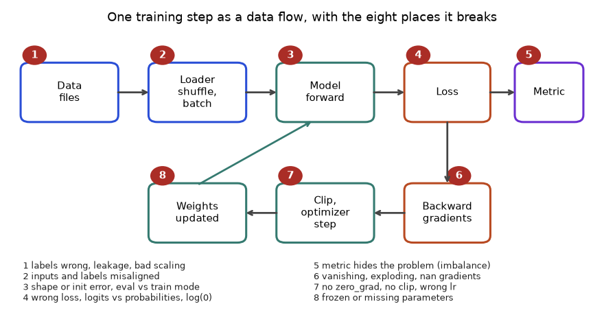
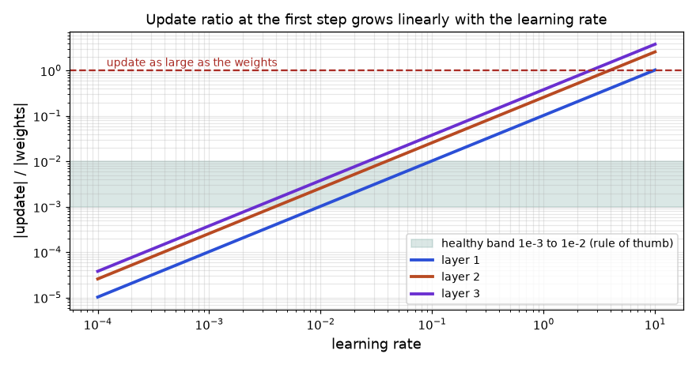
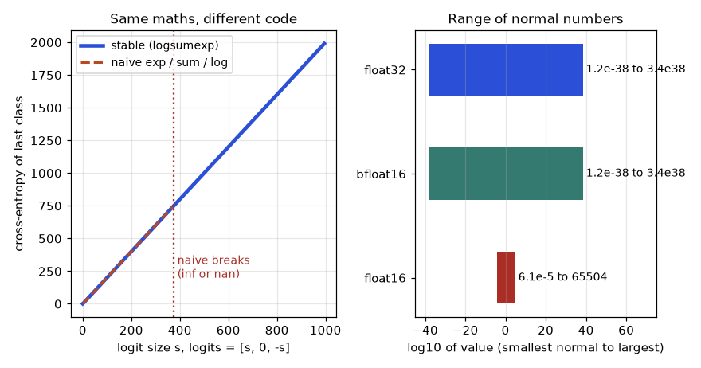
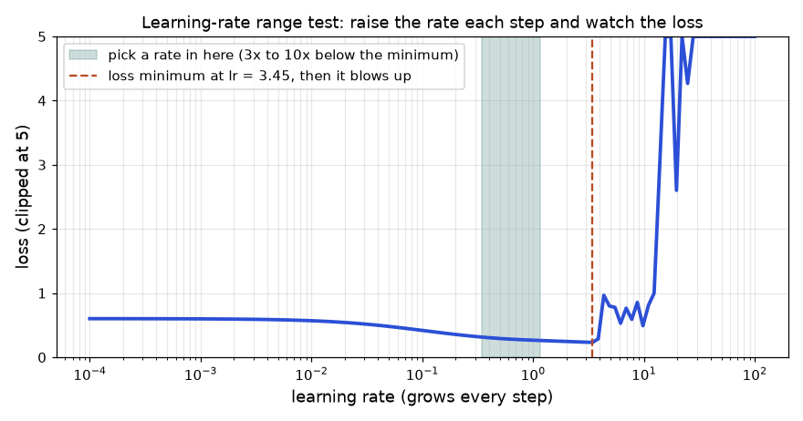
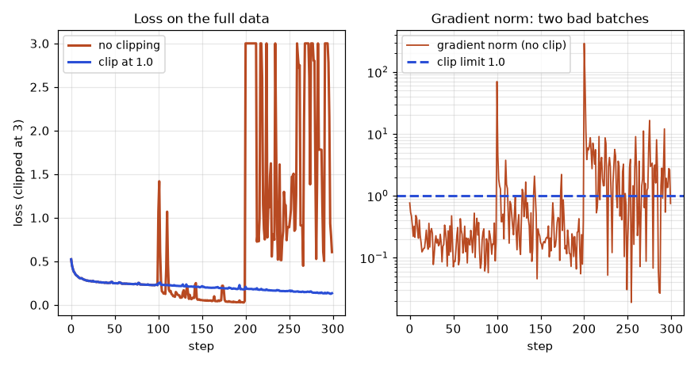
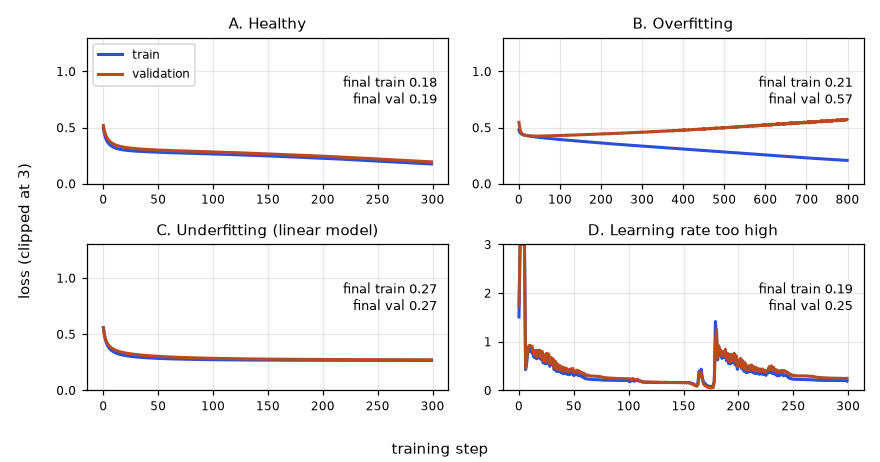
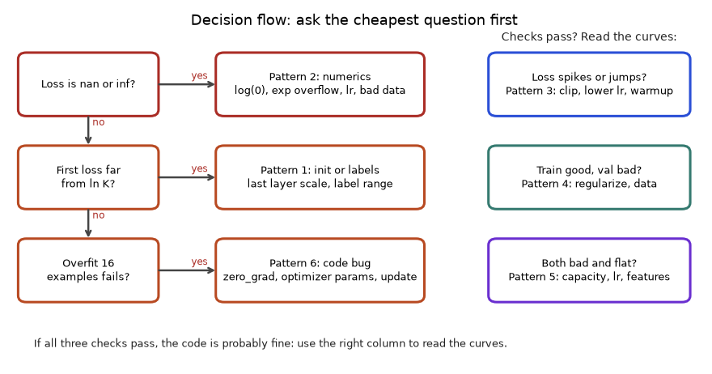

In this chapter
- 4.1 Sanity Tests: Initial Loss and Overfit One Batch
- 4.2 Vanishing and Exploding Gradients, Clipping and Dead ReLUs
- 4.3 Loss Curves, Spikes and the Debugging Checklist
- 4.4 The Training Step as a Machine: Eight Places It Breaks
- 4.5 Instruments: Gradient Norms, Update Ratios, Activation Statistics and Gradient Checks
- 4.6 When the Loss Is nan or inf: Numerical Stability
- 4.7 The Learning Rate in Practice: Range Test, Spikes, Clipping and Batch Size
- 4.8 Reading the Curves: Overfitting, Underfitting, Leakage and Misleading Metrics
- 4.9 How to Solve Any Debugging Training Problem
- 4.10 The Same Checks in PyTorch (not run here)
- 4.11 Going Deeper: Internals, Edge Cases and What Interviewers Probe
- 4.12 Mixed-Practice Drill and Self-Test
- Chapter recap
- Practice set
- Prompt pack
A neural network that does not learn gives no error message. The code runs, the loss prints, and the number is just wrong or stuck. Most of a deep learning engineer's time goes into this kind of silent failure, so the engineers who debug fast are the ones who get hired and promoted. In this chapter you will learn five cheap tests, run them on real NumPy networks, see vanishing and exploding gradients with real numbers, and finish with a checklist you can use on any model. You will think like a working professional moving into data roles: measure first, change one thing at a time, and compare against a baseline.
Read this first: the words and the big picture
This chapter assumes only what Chapters 1 to 3 taught, but it uses a few words all the time. Here they are in plain English, so nothing later is a surprise. Skim the table now and come back to it whenever a word feels fuzzy.
| Word | Plain meaning | Example |
|---|---|---|
| Training step | One round of: look at a few examples, measure the mistake, nudge the weights | "step 200" is the 200th nudge |
| Loss | One number that says how wrong the model is on the examples it just saw. Lower is better | 0.69 for a coin-flip guess on 2 classes |
| Logit | The raw score a network gives each class before it is turned into a probability | [4.0, 0.0, -2.0] |
| Gradient | For every weight, the direction and strength in which the loss would rise. We move the other way | a gradient of 0.5 on a weight means "lowering it a bit lowers the loss" |
| Learning rate (lr) | How far we move per step: update = lr × gradient | 0.001 slow, 5.0 reckless on a small net |
| Overfitting / underfitting | Memorizing the training set but failing on new data / being too weak to fit even the training set | train loss 0.1, validation loss 0.6 means overfitting |
nan, inf | "Not a number" and "infinity": what a computer shows when arithmetic overflows or is undefined. Once one appears, it spreads to everything it touches | log(0) is -inf |
| Dead neuron | A ReLU unit that outputs 0 for every example, so its gradient is 0 and it never changes again | 29 of 64 units in Problem 4.1.2 |
| Clipping | Shrinking a gradient that is too long so one bad batch cannot wreck the weights | (30, 40) becomes (3, 4) |
| Silent failure | A bug that raises no error: the program runs, the loss prints, the model is just bad | labels shifted by one row |
| Hypothesis, test | A guess about the cause, and the cheapest experiment that can prove it wrong | "labels are misaligned" and "overfit 16 examples" |
The big picture in one paragraph. A training run is a loop: show a batch, compute the loss, compute gradients, nudge the weights, repeat. Every one of those words is a place where something can go wrong without an error message. Debugging is therefore not guessing. It is a short list of cheap measurements (first loss, one-batch overfit, gradient sizes, update sizes, curves) that each rule out a family of causes. Sections 4.1 to 4.3 gave you the first measurements. Sections 4.4 to 4.8 add the remaining instruments, one failure family at a time, each with real numbers you can reproduce. Section 4.9 turns everything into a playbook you can apply to any problem, Section 4.10 shows the same ideas in PyTorch, and Sections 4.11 and 4.12 are the expert part and the exam. Before this chapter: Chapter 3 taught losses, optimizers, initialization and regularization, the things we now debug. After it: Chapter 5 puts all of this into PyTorch, where the checks become a few lines of code.
4.1 Sanity Tests: Initial Loss and Overfit One Batch
Words you need
| Word | Plain meaning |
|---|---|
| Batch | A small group of training examples used for one update |
| Overfit one batch | Train repeatedly on just one small batch until loss is near 0 |
| Initial loss | The loss before any training |
| Capacity | How much a model can memorize (more parameters, more capacity) |
Test 1: the initial loss
With K classes and an untrained network that outputs about the same probability for all classes, the cross-entropy is −ln(1/K) = ln K. For 2 classes that is 0.6931, for 10 classes 2.3026. If your first loss is far from ln K, something is off: probably the last layer's initial weights are too big (the model starts out confident and wrong), or labels do not match the output size.
Problem 4.1.1 Check the initial loss of our NumPy MLP from Chapter 2 on 2-class and 10-class data.
| Formula | expected ln K. |
|---|---|
| Plug in | ln 2 = 0.6931, ln 10 = 2.3026. |
| Compute | Run: the 2-class moons model prints 0.6009; the 10-class random-data model prints 3.2477. |
| Answer | Both are above or below the ideal; the 10-class loss 3.2477 is 41% above ln 10 = 2.3026. |
| Check | Multiply the last layer's weights by 0.01 and measure again: the loss becomes 2.3028, within 0.0002 of ln 10. |
| Interpretation | He initialization is right for hidden layers, but the final layer outputs logits that are too large, so the network starts "confidently wrong" and wastes its first steps. Scaling down the last layer is a common fix. If your loss starts at 8.0 for a 10-class problem, look for a bug before you train. |
m = MLP([2,16,2], seed=0)
print("untrained loss", round(m.loss(X,y),4), "ln2", round(np.log(2),4))
rng = np.random.default_rng(0)
Xr = rng.normal(size=(5000,20)); yr = rng.integers(0,10,5000)
m10 = MLP([20,64,10], seed=0)
print("10-class untrained", round(m10.loss(Xr,yr),4), "ln10", round(np.log(10),4))
m10.W[-1] *= 0.01
print("last layer x0.01", round(m10.loss(Xr,yr),4))untrained loss 0.6009 ln2 0.6931
10-class untrained 3.2477 ln10 2.3026
last layer x0.01 2.3028(MLP, X, y are the class and data from Chapter 2.)
Test 2: overfit one batch
Take 16 examples. Give them random labels (so there is no pattern to learn, only memorization). Train for 300 steps. A healthy model drives the loss close to 0, because it has more than enough parameters to memorize 16 points. If it cannot, the bug is in the code, not in the data or the problem difficulty.
Problem 4.1.2 Run overfit-one-batch with three learning rates and read the results.
| Plug in | 16 examples with 20 features, 4 random classes, network 20 → 64 → 4, lr = 0.1, 0.001 and 5.0. |
|---|---|
| Compute | Loss after 1, 51, 101, 201, 301 updates: |
| lr | 1 | 51 | 101 | 201 | 301 |
|---|---|---|---|---|---|
| 0.1 | 1.7889 | 0.0663 | 0.0273 | 0.0114 | 0.0069 |
| 0.001 | 2.2439 | 2.0127 | 1.8082 | 1.4715 | 1.2028 |
| 5.0 | 4.1827 | 0.4986 | 0.4986 | 0.4986 | 0.4986 |
- Answer
lr = 0.1passes the test (loss 0.0069).lr = 0.001is too slow: after 301 steps it is still at 1.20 and falling.lr = 5.0jumps up (4.18), then freezes at 0.4986 and never improves. - Check
ln 4 = 1.3863is the "knows nothing" level. Loss 0.0069 is far below it, so the network memorized the batch. Forlr = 5.0we also counted hidden neurons that never fire on the batch: 29 of 64 are dead (accuracy 75%). - Interpretation Too small is slow but safe. Too large is destructive: huge steps pushed many ReLU neurons into the region where they always output 0 and never recover (a "dead ReLU", Section 4.2). The stuck loss at 0.4986 is the signature.
xb = rng.normal(size=(16,20)); yb = rng.integers(0,4,16)
def train(lr, steps=300):
m = MLP([20,64,4], seed=0); out = []
for t in range(steps+1):
m.forward(xb); gW, gb = m.backward(yb)
for k in range(len(m.W)):
m.W[k] -= lr*gW[k]; m.b[k] -= lr*gb[k]
if t in (0,50,100,200,300): out.append(round(float(m.loss(xb,yb)),4))
return out
print("lr 0.1 ", train(0.1)); print("lr 0.001", train(0.001)); print("lr 5.0 ", train(5.0))lr 0.1 [1.7889, 0.0663, 0.0273, 0.0114, 0.0069]
lr 0.001 [2.2439, 2.0127, 1.8082, 1.4715, 1.2028]
lr 5.0 [4.1827, 0.4986, 0.4986, 0.4986, 0.4986](The values are recorded right after each update, so the first number is after 1 update.)
Problem 4.1.3 Show what happens if the labels are reshuffled every step (a data-loader bug where labels drift away from their inputs).
| Step 1 | Train the same network, lr = 0.1, but draw fresh random labels for the 16 examples at every step. |
|---|---|
| Step 2 | After 300 steps, measure the loss against one fixed set of labels. |
| Answer | The loss is 1.5523, above ln 4 = 1.3863. |
| Check | It is not near 0, though the same model with fixed labels reached 0.0069. |
| Interpretation | If your real model never gets near zero loss even on one batch, suspect the pipeline (labels not aligned with inputs, shuffling inputs and labels separately) before you suspect the model. |
The picture
loss
2.3 |*
| * . . lr too small: slow (still 1.2 at step 300)
| **
| ***
| ****___
0.0 |__________________ step healthy: reaches ~0.007
Overfit-one-batch must reach about 0.Real-world mapping
| Test | Expected result | Where it appears in the job |
|---|---|---|
Initial loss = ln K | within about 10% | First line of every training log |
| Overfit 16 examples | loss near 0 in a few hundred steps | First test on any new model or dataset |
| Fixed seed, same loss twice | identical numbers | Regression tests in ML pipelines |
Applications
- Deep learning: run these tests whenever you change data, loss, or architecture.
- MLOps: put "overfit one batch" in your CI as a smoke test for training code.
- Research: reproduce a paper by first matching its first-step loss.
Check yourself
- What is the expected first loss for a 100-class problem? Answer:
ln 100 = 4.605. - Why use random labels in the overfit test? Answer: so success proves memorization capacity, with no real pattern needed.
- Loss stuck at exactly
ln Kfor a long time suggests what? Answer: the model outputs a constant, so it is not learning from the inputs (no gradient flow, dead units, or data bug).
4.2 Vanishing and Exploding Gradients, Clipping and Dead ReLUs
How it works
By the chain rule the gradient reaching layer k is a product of one factor per layer above it. If those factors are typically below 1, the product shrinks exponentially with depth. If they are above 1 it grows exponentially. Remember 0.25¹⁰ ≈ 10⁻⁶ from Chapter 1; and 1.5¹⁰ ≈ 57.
- Vanishing gradient: early layers receive almost no signal and learn very slowly. Causes: sigmoid/tanh in deep stacks, tiny weights.
- Exploding gradient: huge gradients make weights jump; the loss becomes
infornan(not a number). Causes: large weights, recurrent networks, too-high learning rate. - Gradient clipping: if the total gradient length
‖g‖exceeds a limitc, scale it down to lengthc:g ← g × min(1, c/‖g‖). The direction is unchanged, only the length is capped. - Dead ReLU: a neuron whose pre-activation is below 0 for every example outputs 0 and has gradient 0, so it can never recover.
Cures: ReLU-family activations, He/Xavier initialization, residual connections (Chapter 6), normalization layers (Chapter 3), a smaller learning rate, and clipping.
Problem 4.2.1 Measure the gradient norm at each layer of a 10-layer network (width 64) in three setups.
| Plug in | (a) sigmoid with Xavier weights; (b) ReLU with He weights; (c) ReLU with He weights multiplied by 1.5. |
|---|---|
| Compute | Gradient norm of each layer's weights: |
| Layer | 1 | 3 | 5 | 7 | 10 |
|---|---|---|---|---|---|
| (a) sigmoid, Xavier | 3.9e-06 | 0.0004 | 0.0068 | 0.1216 | 7.6198 |
| (b) ReLU, He | 12.29 | 29.92 | 36.99 | 41.41 | 32.24 |
| (c) ReLU, weights ×1.5 | 472.3 | 1150.4 | 1422.3 | 1592.0 | 1239.5 |
- Answer In (a) the gradient at layer 1 is about two million times smaller than at layer 10: vanishing. In (b) all layers have comparable gradients: healthy. In (c) all gradients are about 40 times larger than (b): a recipe for blow-ups.
- Check For (a), each sigmoid step multiplies by at most 0.25, and
0.25⁹ = 3.8×10⁻⁶, the same order as3.9e-06 / 7.6 = 5×10⁻⁷once the weights (which shrink the signal further) are included. - Interpretation Layer 1 in (a) learns about two million times slower than layer 10. Training such a network looks like "the loss goes down a bit and then stalls", because only the last layers learn.
def gradnorms(act, dact, scale, L=10, w=64, seed=0):
r = np.random.default_rng(seed); Xb = r.normal(size=(64,w))
Ws = [r.normal(size=(w,w))*scale(w) for _ in range(L)]
A = [Xb]; Z = []
for W in Ws:
Z.append(A[-1]@W); A.append(act(Z[-1]))
d = np.ones_like(A[-1])/64; norms = []
for k in reversed(range(L)):
d = d*dact(Z[k]); norms.append(np.linalg.norm(A[k].T@d)); d = d@Ws[k].T
return np.array(norms[::-1])
sig = lambda z: 1/(1+np.exp(-z))
print(gradnorms(sig, lambda z: sig(z)*(1-sig(z)), lambda n: np.sqrt(1/n))[[0,2,4,6,9]])
print(gradnorms(lambda z: np.maximum(0,z), lambda z: (z>0)*1.0, lambda n: np.sqrt(2/n))[[0,2,4,6,9]])[0. 0.0004 0.0068 0.1216 7.6198]
[12.2857 29.9247 36.9966 41.4117 32.2434](The first printed 0. is really 3.9e-06, rounded by the print options. The code starts the backward pass from a gradient of 1/64 at every output, a simple stand-in for a loss gradient, to isolate the effect of depth.)

How to read it: the horizontal axis is the layer, 1 near the input and 10 near the output. The vertical axis is the gradient size on a log scale, so each gridline is 10 times larger. The sigmoid line climbs steeply to the right (early layers get nothing), the He line is flat (healthy), and the "weights ×1.5" line is flat but a factor of 40 too high.
Problem 4.2.2 Clip a gradient.
| Formula | g ← g × min(1, c/‖g‖). |
|---|---|
| Plug in | g = (30, 40), c = 5. |
| Compute | ‖g‖ = √(900+1600) = 50. Factor = min(1, 5/50) = 0.1. New g = (3, 4). |
| Answer | The clipped gradient is (3, 4), with length 5. |
| Check | √(9+16) = 5. The direction (3,4)/5 = (0.6, 0.8) equals the original (30,40)/50. |
| Interpretation | One bad batch cannot throw the weights across the map any more. In PyTorch this is torch.nn.utils.clip_grad_norm_(model.parameters(), max_norm=1.0) (not run here), placed between backward() and optimizer.step(). |
Problem 4.2.3 Find dead ReLUs. 1000 inputs with 10 features go through 50 ReLU neurons. Compare bias 0 with bias −10.
| Step 1 | Count the share of outputs that are exactly 0. |
|---|---|
| Step 2 | Count neurons that never fire on any of the 1000 examples. |
| Answer | With bias 0: 50.1% of outputs are zero and 0 neurons are dead. With bias −10: 100% are zero and all 50 neurons are dead. |
| Check | With He weights and zero bias, the pre-activation is symmetric around 0, so about half are negative (50.1%, as expected). |
| Interpretation | A dead neuron has gradient exactly zero, so no amount of training will revive it. A big learning rate can push biases very negative in one step; that is what happened to 29 of 64 neurons in Problem 4.1.2. Cures: smaller learning rate, Leaky ReLU, GELU, or careful initialization. |
r = np.random.default_rng(0); xx = r.normal(size=(1000,10)); W = r.normal(size=(10,50))*np.sqrt(2/10)
for bias in [0,-10]:
z = xx@W + bias
print("bias", bias, "zero fraction:", round(float((z<=0).mean()),3),
"never fire:", int(((z>0).sum(0)==0).sum()))bias 0 zero fraction: 0.501 never fire: 0
bias -10 zero fraction: 1.0 never fire: 50Real-world mapping
| Symptom | Likely cause | Where it appears in the job |
|---|---|---|
Loss becomes nan | exploding gradient, learning rate too high, bad data (log of 0) | Overnight training runs that died |
| Early layers do not change | vanishing gradient | Very deep or sigmoid networks |
Loss flat at ln K | dead units or no gradient flow | New architecture just wired up |
| Occasional huge loss spike | one bad batch, clipping missing | Long transformer training |
Applications
- Deep learning: gradient clipping is standard in RNN and transformer training.
- MLOps: log the gradient norm per step; alert on
nanand on spikes. - NLP/GenAI: large language model runs track "loss spikes" and restart from earlier checkpoints.
Check yourself
- Why does a deep sigmoid network have vanishing gradients? Answer: each sigmoid layer multiplies the gradient by at most 0.25.
- Does clipping change the gradient direction? Answer: no, only its length.
- Can a dead ReLU neuron recover? Answer: not by gradient descent, because its gradient is exactly zero.
4.3 Loss Curves, Spikes and the Debugging Checklist
Reading learning-rate curves
We train the same Chapter 2 network (moons data, 200 steps) with three learning rates.
Problem 4.3.1 Compare the loss at steps 1, 11, 51, 101 and 200 for lr = 0.01, 0.5 and 20.
| Plug in | Learning rates 0.01, 0.5, 20.0. |
|---|---|
| Compute |
| lr | step 1 | step 11 | step 51 | step 101 | step 200 |
|---|---|---|---|---|---|
| 0.01 | 0.597 | 0.558 | 0.461 | 0.399 | 0.340 |
| 0.5 | 0.441 | 0.278 | 0.231 | 0.192 | 0.103 |
| 20.0 | 2.96 | 3.425 | 1.228 | 3.446 | 3.161 |
- Answer
lr = 0.5is the best of the three.lr = 0.01is a slow healthy curve that has not finished.lr = 20never settles: the loss jumps between 1.2 and 3.4. - Check The
lr = 20run is above the starting lossln 2 = 0.69at the end (3.16): training made the model worse than a coin flip. (While running it, NumPy gave a "divide by zero in log" warning, since some probabilities became exactly 0; that itself is a warning sign.) - Interpretation The shape tells the story: smooth slow decline means "raise the learning rate"; wild jumping means "lower it".

How to read it: the horizontal axis is the step number and the vertical axis is the loss on a log scale. The blue line (0.01) slopes down slowly. The orange line (0.5) falls quickly and smoothly. The green line (20) jumps around at the top.
A guide to curve shapes
| What you see | Meaning | First thing to try |
|---|---|---|
| Smooth slow decline | learning rate too low | multiply by 3 to 10 |
Jagged, jumping, nan | learning rate too high or bad batch | divide by 3 to 10; add clipping and warmup |
Flat at ln K | not learning at all | overfit one batch; check labels and dead units |
| Train falls, validation rises | overfitting (Chapter 3) | more data/augmentation, weight decay, early stopping |
| Both high and flat | underfitting | bigger model, train longer, check features |
| Sudden spike, then recovery | one bad batch or learning-rate peak | clipping; check data for outliers |
| Validation loss better than training | dropout on in training only, or easy validation set | not an error by itself; compare under eval() |
The debugging checklist
Work from top to bottom. Change one thing at a time and keep notes (a table of run, change, result).
- Data. Look at actual examples and their labels (plot ten images; print ten rows). Check shapes, value ranges, class balance, duplicates, and train/validation leakage.
- Pipeline. Inputs and labels stay aligned after shuffling; the same preprocessing is used in training and inference.
- Initial loss is near
ln K(Problem 4.1.1). - Overfit one batch reaches about 0 (Problem 4.1.2). If not, stop here and fix the code.
- Gradients. No
nan; the gradient norm is reasonable; all layers receive gradient (Problem 4.2.1). - Learning rate. Sweep a few values on a log scale:
1e-4, 3e-4, 1e-3, 3e-3. - Scale up. Train on the full data and compare train and validation curves.
- Regularize. Add weight decay, augmentation or dropout only when overfitting appears.
- Evaluate right. Use
eval()mode, a held-out set, and the metric your business cares about (not only loss). - Reproducibility. Fix the seed, record the library versions, and save the config with the model.
Problem 4.3.2 Triage: "Loss is 0.693 at step 0 and 0.693 at step 5000 on a balanced binary task. The learning rate is 1e-3 with Adam." What do you do, in order?
| Step 1 | 0.693 = ln 2: the model outputs a constant. It is not learning from the inputs. |
|---|---|
| Step 2 | Run overfit-one-batch on 16 examples. If it fails, the bug is in code: check that optimizer.step() is called, gradients are zeroed each step, parameters are registered with the optimizer, and backward() is called on the right loss. |
| Step 3 | If it passes, look at the data: are features constant, are labels random or misaligned, is the input scaled (very large unscaled values can saturate everything)? |
| Step 4 | Print the gradient norm of each layer. If it is zero in some layers, look for dead ReLUs, a detach() in the wrong place, or frozen parameters. |
| Answer | Overfit one batch first; it splits "code bug" from "data/hyperparameter problem" in one test. |
| Check | This follows items 1 to 5 of the checklist in order. |
| Interpretation | You made a decision tree out of one number (0.693). That is what experienced debuggers do. |
Mixed signals worth knowing
- Loss spikes in long runs often come from a rare bad batch or an unlucky learning rate peak. Standard fixes: gradient clipping, lower peak learning rate, longer warmup, and restarting from the last good checkpoint while skipping the offending data.
- Reproducibility on GPUs is partly out of your hands: some GPU operations are non-deterministic, so two runs with the same seed can differ slightly. Chapter 5 shows how to set seeds and deterministic flags (not run here).
- Train versus validation loss is only half the story; also watch the real metric (accuracy, F1) because loss can improve while accuracy stays flat.
Connection to the real job
Interviewers for ML engineer roles often give a scenario like 4.3.2 and judge your process, not a magic fix. The same thinking a doctor uses when a patient has a strange symptom (reproduce, isolate, change one variable) is exactly what they want.
Applications
- Deep learning: every training run.
- MLOps: dashboards (loss, gradient norm, learning rate, throughput) with alerts.
- Data science: spotting label leakage via too-good validation scores.
- GenAI: training and fine-tuning large models cost thousands of GPU hours; one wasted run is expensive.
Check yourself
- A loss curve that decreases smoothly but very slowly suggests what? Answer: learning rate too low.
- What should you do before tuning hyperparameters? Answer: check data, initial loss and overfit one batch.
- Why can two GPU runs with the same seed differ? Answer: some GPU operations are non-deterministic.
4.4 The Training Step as a Machine: Eight Places It Breaks
The map
One training step moves data through eight stations. Figure 4.1 shows them. The red numbers mark where bugs live. Learn this picture: every symptom you will ever meet is caused at one of these eight places, and the playbook in Section 4.9 is simply a way to find which one.

How to read it: follow the arrows. Data files go to a loader that shuffles and batches them, then to the model, which produces predictions. The loss compares predictions with labels and also feeds the metric you report. Backward computes gradients, clipping and the optimizer turn them into an update, and the weights are updated for the next round. Each circle is a place that can be wrong while every other station is perfect.
| # | Station | Typical silent bug | What you see | Cheapest test |
|---|---|---|---|---|
| 1 | Data | wrong labels, nan rows, unscaled inputs, train/validation overlap | loss stuck, nan, or too-good validation score | print and audit the data (Problem 4.4.3) |
| 2 | Loader | inputs and labels shuffled separately, same augmentation in validation | loss near ln K forever | overfit one batch with fixed labels |
| 3 | Forward | wrong shape or broadcasting, bad initialization, train/eval mode mix-up | first loss far from ln K | initial-loss check, print every shape |
| 4 | Loss | probabilities fed to a loss that expects logits, log(0), wrong reduction | inf, nan, or slow learning | compare with a hand-computed loss on 2 examples |
| 5 | Metric | accuracy on imbalanced data, evaluation in training mode | good number, bad product | confusion matrix, majority-class baseline |
| 6 | Backward | vanishing or exploding gradients, a wrong derivative, a stray detach | early layers frozen, or huge norms | gradient norm per layer, gradient check (Section 4.5) |
| 7 | Optimizer step | no zero_grad, no clipping, bad learning rate | jagged or spiking loss | update ratio, learning-rate range test (Sections 4.5 and 4.7) |
| 8 | Weights | parameters not registered with the optimizer, update applied to a copy | loss never moves at all | check that weights change after a step (Section 4.9) |
Injecting bugs on purpose
The fastest way to learn what a bug looks like is to cause it. We take the healthy Chapter 2 network on the moons data, introduce one bug at a time, and read the numbers. Everything else (data, seed, learning rate, 200 steps) stays identical, so any difference is caused by the bug alone. The block below is complete and runs by itself; its first lines are the toolkit (moons, MLP, gnorm) that the whole chapter reuses.
import numpy as np
def moons(n=100, noise=0.1, seed=0):
r = np.random.default_rng(seed)
t = r.uniform(0, np.pi, n)
a = np.c_[np.cos(t), np.sin(t)]; b = np.c_[1-np.cos(t), 0.5-np.sin(t)]
X = np.vstack([a, b]) + r.normal(0, noise, (2*n, 2))
return X, np.r_[np.zeros(n), np.ones(n)].astype(int)
class MLP:
def __init__(s, sizes, seed=0):
r = np.random.default_rng(seed)
s.W = [r.normal(0, np.sqrt(2/i), (i, o)) for i, o in zip(sizes[:-1], sizes[1:])]
s.b = [np.zeros(o) for o in sizes[1:]]
def forward(s, X):
s.a = [X]
for k, (W, b) in enumerate(zip(s.W, s.b)):
z = s.a[-1] @ W + b
if k < len(s.W) - 1: s.a.append(np.maximum(0, z))
else:
e = np.exp(z - z.max(1, keepdims=True)); s.a.append(e / e.sum(1, keepdims=True))
return s.a[-1]
def loss(s, X, y):
P = s.forward(X); return -np.log(P[np.arange(len(y)), y]).mean()
def acc(s, X, y):
return (s.forward(X).argmax(1) == y).mean()
def backward(s, y):
N = len(y); P = s.a[-1].copy(); P[np.arange(N), y] -= 1; d = P / N
gW = [None]*len(s.W); gb = [None]*len(s.W)
for k in reversed(range(len(s.W))):
gW[k] = s.a[k].T @ d; gb[k] = d.sum(0)
if k > 0: d = (d @ s.W[k].T) * (s.a[k] > 0)
return gW, gb
def gnorm(gW, gb):
return float(np.sqrt(sum((g**2).sum() for g in gW) + sum((g**2).sum() for g in gb)))
X, y = moons()
def train(bug=None, lr=0.5, steps=200):
m = MLP([2, 16, 2], seed=0); rng = np.random.default_rng(1)
Xt = X * 1000 if bug == "scale" else X
for t in range(steps):
yt = rng.permutation(y) if bug == "shuffle" else y
m.forward(Xt); gW, gb = m.backward(yt)
s = -1 if bug == "sign" else 1
for k in range(len(m.W)):
m.W[k] -= s * lr * gW[k]
if bug != "nobias": m.b[k] -= s * lr * gb[k]
return m.loss(Xt, y), m.acc(Xt, y)
with np.errstate(all="ignore"):
for bug in [None, "shuffle", "scale", "sign", "nobias"]:
loss, acc = train(bug)
print(f"{str(bug):8s} loss {loss:8.4f} accuracy {acc:.3f}")None loss 0.1031 accuracy 0.970
shuffle loss 0.7011 accuracy 0.435
scale loss nan accuracy 0.500
sign loss inf accuracy 0.395
nobias loss 0.2351 accuracy 0.875moonsbuilds the two-moons data: two curved clouds of 100 points each, labels 0 and 1.MLPis the Chapter 2 network (He initialization, ReLU, softmax output, cross-entropy).gnormreturns the total length of all gradients, a number we will watch many times.train(bug)builds a fresh network with the same seed every time, so runs differ only through the bug.bug == "scale"multiplies the inputs by 1000: the classic "I forgot to normalize" mistake.rng.permutation(y)reshuffles the labels at every step: labels no longer belong to their inputs.s = -1flips the update sign, so the code adds the gradient. That is gradient ascent.bug != "nobias"skips the bias update for one run, a "forgot to register some parameters" bug.np.errstate(all="ignore")silences overflow warnings so the table prints cleanly. In real work, do not hide them: they are free alarms.- Loss and accuracy are measured on the training data itself, because the question here is "does the machine work?", not "does it generalize?".
Problem 4.4.1 Read the table above and name, for each run, the symptom and the first test that would catch it.
| Baseline | Loss 0.1031, accuracy 0.970. This is what "working" looks like for this setup. Every other row is compared against it. |
|---|---|
| shuffle | Loss 0.7011 is almost exactly ln 2 = 0.6931 and accuracy 0.435 is at coin-flip level. The model learned nothing because the labels at each step carry no information about the inputs. First test: overfit one batch with fixed labels (Problem 4.1.3). |
| scale | Loss nan. With inputs near 1000 the first pre-activations are huge, the softmax saturates, log(0) appears, and gradients explode. First test: print X.min(), X.max(), X.std() (the audit in Problem 4.4.3) and the first loss. |
| sign | Loss inf, accuracy 0.395. The model climbs the loss hill, becomes confidently wrong, and a probability reaches exactly 0. First test: the loss at step 10 must be lower than at step 1. |
| nobias | Loss 0.2351, accuracy 0.875. Nothing crashed, nothing is nan: the model is just quietly worse than the baseline (0.1031, 0.970). This is the dangerous kind. Only a comparison against a reference run reveals it. |
| Answer | Three runs fail loudly (shuffle, scale, sign), one fails quietly (nobias). Quiet failures need a baseline to be caught. |
| Check | The baseline matches the 0.103 reached in Problem 4.3.1 for lr = 0.5 at step 200, so our toolkit reproduces the earlier chapter. |
| Interpretation | Loud bugs cost minutes. Quiet bugs cost weeks, because the model "works". Always keep a trusted reference (an earlier run, a simple model, a published number) to compare with. |
The bug that helps: forgetting to zero the gradients
In PyTorch, loss.backward() adds to the gradients already stored. If you never call optimizer.zero_grad(), each update uses the sum of every earlier gradient. We can copy this exactly in NumPy: keep a running sum and update with it. A surprise follows, and it is the most useful lesson about silent bugs in this chapter.
import numpy as np
def moons(n=100, noise=0.1, seed=0):
r = np.random.default_rng(seed)
t = r.uniform(0, np.pi, n)
a = np.c_[np.cos(t), np.sin(t)]; b = np.c_[1-np.cos(t), 0.5-np.sin(t)]
X = np.vstack([a, b]) + r.normal(0, noise, (2*n, 2))
return X, np.r_[np.zeros(n), np.ones(n)].astype(int)
class MLP:
def __init__(s, sizes, seed=0):
r = np.random.default_rng(seed)
s.W = [r.normal(0, np.sqrt(2/i), (i, o)) for i, o in zip(sizes[:-1], sizes[1:])]
s.b = [np.zeros(o) for o in sizes[1:]]
def forward(s, X):
s.a = [X]
for k, (W, b) in enumerate(zip(s.W, s.b)):
z = s.a[-1] @ W + b
if k < len(s.W) - 1: s.a.append(np.maximum(0, z))
else:
e = np.exp(z - z.max(1, keepdims=True)); s.a.append(e / e.sum(1, keepdims=True))
return s.a[-1]
def loss(s, X, y):
P = s.forward(X); return -np.log(P[np.arange(len(y)), y]).mean()
def acc(s, X, y):
return (s.forward(X).argmax(1) == y).mean()
def backward(s, y):
N = len(y); P = s.a[-1].copy(); P[np.arange(N), y] -= 1; d = P / N
gW = [None]*len(s.W); gb = [None]*len(s.W)
for k in reversed(range(len(s.W))):
gW[k] = s.a[k].T @ d; gb[k] = d.sum(0)
if k > 0: d = (d @ s.W[k].T) * (s.a[k] > 0)
return gW, gb
def gnorm(gW, gb):
return float(np.sqrt(sum((g**2).sum() for g in gW) + sum((g**2).sum() for g in gb)))
X, y = moons()
def run(zero_grad, lr, steps=200):
m = MLP([2, 16, 2], seed=0); acc = None; used = []
for t in range(steps):
m.forward(X); gW, gb = m.backward(y)
if zero_grad or acc is None:
acc = ([g.copy() for g in gW], [g.copy() for g in gb])
else:
for k in range(len(gW)): acc[0][k] += gW[k]; acc[1][k] += gb[k]
used.append(gnorm(*acc))
for k in range(len(m.W)): m.W[k] -= lr * acc[0][k]; m.b[k] -= lr * acc[1][k]
return used, m.loss(X, y)
with np.errstate(all="ignore"):
for lr in (0.5, 2.0):
for zg in (True, False):
used, loss = run(zg, lr)
print(f"lr {lr} zero_grad {zg!s:5} norm used at steps 1,10,50,200: "
f"{used[0]:.3f} {used[9]:.3f} {used[49]:.3f} {used[199]:.3f} final loss {loss + 0.0:.4f}")lr 0.5 zero_grad True norm used at steps 1,10,50,200: 0.658 0.096 0.037 0.043 final loss 0.1031
lr 0.5 zero_grad False norm used at steps 1,10,50,200: 0.658 1.208 1.532 1.533 final loss 0.0000
lr 2.0 zero_grad True norm used at steps 1,10,50,200: 0.658 0.181 0.243 0.005 final loss 0.0080
lr 2.0 zero_grad False norm used at steps 1,10,50,200: 0.658 1.093 1.052 1.191 final loss 0.3730zero_grad=Truemeans "start from fresh gradients every step" (correct).Falsemeans "keep adding toacc" (the bug).accholds the gradients the optimizer will use. In the buggy case+=accumulates them.used.append(gnorm(*acc))records the length of the gradient the update actually used at each step.- The update lines apply
acc, not the fresh gradient. - We test two learning rates, 0.5 (the one we trust) and 2.0 (aggressive).
loss + 0.0turns a harmless-0.0(which is-log(1.0)) into0.0for printing.
Problem 4.4.2 Explain why the run without zero_grad reached a perfect loss at lr = 0.5 and still counts as a bug.
| Observe | At lr = 0.5 with correct zeroing, the gradient length shrinks from 0.658 (step 1) to 0.043 (step 200) as the model improves. Without zeroing it grows from 0.658 to 1.533. |
|---|---|
| Ratio | At step 200 the buggy update is 1.533 / 0.043 ≈ 36 times longer than the correct one. |
| Why | The sum of past gradients behaves like momentum that never fades. On an easy problem this sometimes just speeds things up (final loss 0.0000 versus 0.1031). |
| Break it | At lr = 2.0 the correct loop reaches 0.0080, but the buggy one ends at 0.3730, with an update length stuck near 1.1 to 1.2 while the correct one is at 0.005: it overshoots forever. |
| Answer | The bug does not always hurt, which is exactly why it survives code review. It changes the effective step size by a factor that depends on the problem, so a learning rate tuned with the bug is wrong once the bug is fixed. |
| Check | The same code with zero_grad=True at both learning rates gives losses 0.1031 and 0.0080, both healthy. |
| Interpretation | "The loss goes down" is not proof of correctness. Prove it by checking that the update length (lr × gradient norm) shrinks as the loss improves. |
Audit the data before the model
Stations 1 and 2 are the most common source of trouble, and the cheapest to check. Below is a small audit function you can paste in front of any project. We feed it a deliberately damaged dataset with four planted problems, so you can see each one reported.
import numpy as np
def audit(Xtr, ytr, Xva, yva, n_classes):
print("shapes :", Xtr.shape, ytr.shape, Xva.shape, yva.shape)
print("dtype :", Xtr.dtype, ytr.dtype)
print("X range : min %.2f max %.2f mean %.2f std %.2f" % (np.nanmin(Xtr), np.nanmax(Xtr), np.nanmean(Xtr), np.nanstd(Xtr)))
print("nan / inf :", int(np.isnan(Xtr).sum()), int(np.isinf(Xtr).sum()))
print("label range :", ytr.min(), "to", ytr.max(), "(expected 0 to %d)" % (n_classes - 1))
print("class counts:", np.bincount(ytr, minlength=n_classes).tolist())
tr = {row.tobytes() for row in np.nan_to_num(Xtr)}
dup = sum(row.tobytes() in tr for row in np.nan_to_num(Xva))
print("val rows that also appear in train:", dup, "of", len(Xva))
rng = np.random.default_rng(0)
Xtr = rng.normal(size=(200, 3)); ytr = (Xtr[:, 0] > 0).astype(int); ytr[:5] = 3
Xtr[7, 1] = np.nan; Xtr[:, 2] *= 500
Xva = np.vstack([rng.normal(size=(30, 3)), Xtr[10:30]]); yva = (Xva[:, 0] > 0).astype(int)
audit(Xtr, ytr, Xva, yva, n_classes=2)shapes : (200, 3) (200,) (50, 3) (50,)
dtype : float64 int64
X range : min -1483.59 max 999.75 mean -7.50 std 281.83
nan / inf : 1 0
label range : 0 to 3 (expected 0 to 1)
class counts: [104, 91, 0, 5]
val rows that also appear in train: 20 of 50- Print all shapes. A wrong shape such as
(200, 1)versus(200,)silently broadcasts in many libraries. - Print dtypes. Float inputs and integer labels are expected for classification.
np.nanmin,np.nanmaxand friends ignore nan so we can still see the range of the good values.- Count nan and inf. A single nan row ruins every batch that contains it.
- Check the label range against the number of classes. A label of 3 in a 2-class problem raises an index error in some libraries and gives a silently wrong loss in others.
np.bincountshows class counts: balance, and empty classes.- The set of row bytes finds validation rows that also appear in the training set (data leakage).
Problem 4.4.3 Use the audit output to list every defect in the dataset, and say what each would do to training.
| Shapes, dtype | All fine: 200 training rows, 50 validation rows, float features, integer labels. |
|---|---|
| Range | min -1483.59, max 999.75, std 281.83. Healthy standardized data has std near 1, so at least one column is on a much bigger scale. Here column 3 was multiplied by 500. Effect: that feature dominates the first layer and can saturate or overflow it (Problem 4.4.1, "scale"). Fix: standardize with the training mean and std. |
| nan / inf | 1 0: one nan. Effect: every batch containing that row gives a nan loss, then nan weights. Fix: find it with np.isnan(X).any(1), then drop or impute. |
| Labels | Range 0 to 3 for a 2-class task, class counts [104, 91, 0, 5]. Five rows have label 3, a class that should not exist, and class 2 is empty. Effect: indexing errors, or a classifier trained to predict an impossible class. Fix: trace those rows to their source. |
| Leakage | 20 of 50 validation rows are also training rows. Effect: validation accuracy is inflated by memorization, so you will believe the model is better than it is (see Problem 4.8.3). |
| Answer | Four defects: one unscaled column, one nan, five invalid labels, 40% validation leakage. |
| Check | The planted defects were: column 3 times 500, one nan at row 7, labels 3 in rows 0 to 4, and validation rows copied from training rows 10 to 29. All were found. |
| Interpretation | Ten lines of printing found four bugs that no loss curve would have explained. Do this before you train, and again whenever the data source changes. |
(X - X.mean()) / X.std() applied to train and validation each, or to the whole dataset before splitting. Right: compute mean and std on the training rows only, then apply those same two numbers to validation and test data and to production inputs. Otherwise the model sees a different scale at inference than it learned on.Check yourself
- Which station owns the symptom "first loss is 11.5 on a 10-class problem"? Answer: station 3 (forward, usually the last layer's initialization) or 4 (loss). Expected is
ln 10 = 2.30. - A friend says "my loss goes down, so my loop is correct." Give a counter-example. Answer: the missing
zero_gradrun above, whose loss went to 0 with an update 36 times too long. - Why print dtype and shape of the labels? Answer: wrong shapes broadcast silently and wrong dtypes (floats for class indices) fail or give wrong losses.
4.5 Instruments: Gradient Norms, Update Ratios, Activation Statistics and Gradient Checks
Gauge 1: the update ratio
The gradient norm alone is hard to judge: is 0.5 big or small? It depends on how large the weights are. The scale-free number is the update ratio:
It says: "in one step, this layer's weights change by this fraction of their own size". A commonly used rule of thumb is that a healthy network changes each layer by roughly one thousandth (1e-3) of its size per step, with anything from about 1e-4 to 1e-2 acceptable. It is a guide, not a law: tiny problems like ours tolerate more, and adaptive optimizers such as Adam (Section 4.11) behave differently. Too small means nothing is learning. Near 1 means each step rewrites the layer.
import numpy as np
def moons(n=100, noise=0.1, seed=0):
r = np.random.default_rng(seed)
t = r.uniform(0, np.pi, n)
a = np.c_[np.cos(t), np.sin(t)]; b = np.c_[1-np.cos(t), 0.5-np.sin(t)]
X = np.vstack([a, b]) + r.normal(0, noise, (2*n, 2))
return X, np.r_[np.zeros(n), np.ones(n)].astype(int)
class MLP:
def __init__(s, sizes, seed=0):
r = np.random.default_rng(seed)
s.W = [r.normal(0, np.sqrt(2/i), (i, o)) for i, o in zip(sizes[:-1], sizes[1:])]
s.b = [np.zeros(o) for o in sizes[1:]]
def forward(s, X):
s.a = [X]
for k, (W, b) in enumerate(zip(s.W, s.b)):
z = s.a[-1] @ W + b
if k < len(s.W) - 1: s.a.append(np.maximum(0, z))
else:
e = np.exp(z - z.max(1, keepdims=True)); s.a.append(e / e.sum(1, keepdims=True))
return s.a[-1]
def loss(s, X, y):
P = s.forward(X); return -np.log(P[np.arange(len(y)), y]).mean()
def acc(s, X, y):
return (s.forward(X).argmax(1) == y).mean()
def backward(s, y):
N = len(y); P = s.a[-1].copy(); P[np.arange(N), y] -= 1; d = P / N
gW = [None]*len(s.W); gb = [None]*len(s.W)
for k in reversed(range(len(s.W))):
gW[k] = s.a[k].T @ d; gb[k] = d.sum(0)
if k > 0: d = (d @ s.W[k].T) * (s.a[k] > 0)
return gW, gb
def gnorm(gW, gb):
return float(np.sqrt(sum((g**2).sum() for g in gW) + sum((g**2).sum() for g in gb)))
X, y = moons()
m = MLP([2, 16, 16, 2], seed=0); m.forward(X); gW, gb = m.backward(y)
print("weight norms :", [round(float(np.linalg.norm(W)), 3) for W in m.W])
print("grad norms :", [round(float(np.linalg.norm(g)), 4) for g in gW])
for lr in (0.001, 0.01, 0.1, 0.5, 5.0):
ratios = [lr * np.linalg.norm(g) / np.linalg.norm(W) for g, W in zip(gW, m.W)]
print(f"lr {lr:<6}", " ".join(f"{r:.5f}" for r in ratios))weight norms : [4.599, 5.926, 2.008]
grad norms : [0.4741, 1.5329, 0.7645]
lr 0.001 0.00010 0.00026 0.00038
lr 0.01 0.00103 0.00259 0.00381
lr 0.1 0.01031 0.02587 0.03808
lr 0.5 0.05155 0.12933 0.19038
lr 5.0 0.51545 1.29328 1.90385- Build a 3-weight-matrix network (2 inputs, two hidden layers of 16, 2 outputs) and run one forward and backward pass on all 200 examples.
- Print the length (norm) of each weight matrix. The first layer is small because it has only 2 × 16 weights; sizes differ by layer, which is why a ratio is better than a raw norm.
- Print the length of each gradient. These are the numbers a "gradient norm" logger would show.
- For five learning rates, compute
lr × ‖g‖ / ‖W‖per layer. This is the update ratio at the first step.
Problem 4.5.1 Which of the five learning rates is in the healthy range, and what does the largest one do?
| Formula | ratio = lr × ‖g‖ / ‖W‖, one value per layer. |
|---|---|
| Layer 1 by hand | ‖g‖ = 0.4741 and ‖W‖ = 4.599, so ‖g‖/‖W‖ = 0.1031. At lr = 0.01 the ratio is 0.01 × 0.1031 = 0.00103, matching the table. |
| Read | lr = 0.001: ratios 1e-4 to 4e-4, too small, learning will crawl. lr = 0.01: 1e-3 to 4e-3, inside the healthy band. lr = 0.1: 1e-2 to 4e-2, aggressive but fine on a tiny problem. lr = 0.5: 5e-2 to 0.19, very aggressive yet this is the rate that trained our moons network. lr = 5.0: 0.52 to 1.9, each step moves a layer by as much as its whole size. |
| Answer | 0.01 is "textbook healthy". 5.0 is destructive: the layer-3 ratio of 1.90 means one step changes the output layer by 190% of its size, the same kind of overshoot that left 29 of 64 units dead in Problem 4.1.2. |
| Check | The ratio is exactly linear in lr: multiplying lr by 10 multiplies every ratio by 10. For layer 1 the table shows 0.00103 at 0.01, 0.01031 at 0.1 and 0.51545 at 5.0 (which is 500 times the value at 0.01 for a 500 times larger lr). |
| Interpretation | The band is a debugging aid, not a target. If your ratio is 1e-6 your lr is certainly too low. If it is above 0.1 and the loss is jagged, your lr is probably too high. Note layer 3 has the largest ratio: output layers usually get the largest gradients. |

How to read it: the horizontal axis is the learning rate and the vertical axis is the fraction of the layer's size that moves in one step. Each coloured line is a layer. The green band is the 1e-3 to 1e-2 rule of thumb. The dashed red line at 1 means "the update is as large as the weights". Lines are straight because the ratio is proportional to lr; layer 3 sits above layer 1 because its gradient is relatively larger. To choose a learning rate from this chart, find where your layers cross the green band.
Gauge 2: activation statistics
The forward signal can also die or explode. Pass random data through 8 ReLU layers of width 64 and record, for layers 1, 4 and 8: the mean of the activations, their standard deviation, and the share of exactly-zero entries. We compare three weight scales: He (the right one, variance 2/fan_in, Chapter 3), too small (std 0.05), and too big (std 0.4).
import numpy as np
rng = np.random.default_rng(0); X0 = rng.normal(size=(512, 64))
print("init layer mean std dead_fraction")
for name, std in [("He", np.sqrt(2/64)), ("small", 0.05), ("big", 0.4)]:
r = np.random.default_rng(1); a = X0
for layer in range(1, 9):
a = np.maximum(0, a @ r.normal(0, std, (64, 64)))
if layer in (1, 4, 8):
print(f"{name:6s} {layer:5d} {a.mean():7.3f} {a.std():7.3f} {(a == 0).mean():8.3f}")init layer mean std dead_fraction
He 1 0.563 0.830 0.501
He 4 0.474 0.758 0.519
He 8 0.366 0.701 0.602
small 1 0.159 0.235 0.501
small 4 0.003 0.005 0.519
small 8 0.000 0.000 0.602
big 1 1.275 1.877 0.501
big 4 12.429 19.879 0.519
big 8 251.590 481.981 0.602X0is a batch of 512 random inputs with 64 features, mean 0 and std 1, the ideal input.- For each weight scale we draw the same random generator state (
seed 1) so the three runs differ only by scale. a = np.maximum(0, a @ W)is one ReLU layer without bias.- We print statistics only at layers 1, 4 and 8 to keep the table short.
(a == 0).mean()is the fraction of entries that are zero. With zero-mean weights about half of all entries are zero, which is normal for ReLU (it is not the same thing as a dead neuron, which is zero for every example).
Problem 4.5.2 Diagnose each initialization from the table.
| He | Std goes 0.830, 0.758, 0.701 over layers 1, 4, 8: nearly constant. The signal keeps its size through depth. This is the goal. |
|---|---|
| Too small | Std goes 0.235, 0.005, 0.000. By layer 4 the signal is 150 times smaller than He; by layer 8 it has vanished. Since gradients are products of the same weights, backward vanishes as well (compare Problem 4.2.1). |
| Too big | Mean goes 1.275, 12.429, 251.590 at layers 1, 4, 8: the signal grows by about 2.1 times per layer (12.429/1.275 ≈ 9.7 over three layers). After 50 or so more layers it would reach inf; much earlier it gives an extreme softmax at the output. |
| Zero fraction | 0.50 to 0.60 in all three. It does not distinguish them. The std and mean do. |
| Answer | He keeps std near 0.7 to 0.8, small init collapses towards 0, big init explodes by about 2.1 times per layer. |
| Check | Theory: He variance 2/64 compensates the ReLU's halving of variance (Chapter 3). Our std 0.05 has variance 0.0025, versus 2/64 = 0.03125 for He: 12.5 times too small in variance, so √12.5 ≈ 3.5 times too small in std per layer. At layer 1 the gap is 0.830/0.235 ≈ 3.5, and every extra layer multiplies it by another 3.5. At layer 4 we expect 3.5⁴ ≈ 150, and the measured ratio is 0.758/0.005 ≈ 150. Theory and measurement agree. |
| Interpretation | Print the mean and std of every layer's activations on the first batch. It takes one minute and tells you whether initialization, normalization and depth are in balance before any training. |
Gauge 3: the gradient check
If you wrote a layer, a loss or a custom backward pass yourself, the strongest test is to compare your analytic gradient against a numerical one (Chapter 2): nudge a weight by a tiny ε up and down, and the slope is (L(w+ε) − L(w−ε)) / (2ε). Use the relative error |a − n| / max(|a| + |n|, tiny), because it ignores the scale of the gradient. In float64 a rule of thumb is: below 1e-6 correct; between 1e-6 and 1e-3 look closer; above 1e-3 almost certainly a bug. Below we test a correct network and the same network with the classic bug from Problem 2.4.2: the ReLU slope is forgotten in the backward pass.
import numpy as np
def moons(n=100, noise=0.1, seed=0):
r = np.random.default_rng(seed)
t = r.uniform(0, np.pi, n)
a = np.c_[np.cos(t), np.sin(t)]; b = np.c_[1-np.cos(t), 0.5-np.sin(t)]
X = np.vstack([a, b]) + r.normal(0, noise, (2*n, 2))
return X, np.r_[np.zeros(n), np.ones(n)].astype(int)
class MLP:
def __init__(s, sizes, seed=0):
r = np.random.default_rng(seed)
s.W = [r.normal(0, np.sqrt(2/i), (i, o)) for i, o in zip(sizes[:-1], sizes[1:])]
s.b = [np.zeros(o) for o in sizes[1:]]
def forward(s, X):
s.a = [X]
for k, (W, b) in enumerate(zip(s.W, s.b)):
z = s.a[-1] @ W + b
if k < len(s.W) - 1: s.a.append(np.maximum(0, z))
else:
e = np.exp(z - z.max(1, keepdims=True)); s.a.append(e / e.sum(1, keepdims=True))
return s.a[-1]
def loss(s, X, y):
P = s.forward(X); return -np.log(P[np.arange(len(y)), y]).mean()
def acc(s, X, y):
return (s.forward(X).argmax(1) == y).mean()
def backward(s, y):
N = len(y); P = s.a[-1].copy(); P[np.arange(N), y] -= 1; d = P / N
gW = [None]*len(s.W); gb = [None]*len(s.W)
for k in reversed(range(len(s.W))):
gW[k] = s.a[k].T @ d; gb[k] = d.sum(0)
if k > 0: d = (d @ s.W[k].T) * (s.a[k] > 0)
return gW, gb
def gnorm(gW, gb):
return float(np.sqrt(sum((g**2).sum() for g in gW) + sum((g**2).sum() for g in gb)))
class BuggyMLP(MLP):
def backward(s, y):
N = len(y); P = s.a[-1].copy(); P[np.arange(N), y] -= 1; d = P / N
gW = [None]*len(s.W); gb = [None]*len(s.W)
for k in reversed(range(len(s.W))):
gW[k] = s.a[k].T @ d; gb[k] = d.sum(0)
if k > 0: d = d @ s.W[k].T # BUG: ReLU slope missing
return gW, gb
def grad_check(m, X, y, tries=6, eps=1e-5, seed=0):
r = np.random.default_rng(seed); m.forward(X); gW, _ = m.backward(y); worst = 0
for _ in range(tries):
k = r.integers(len(m.W)); i = r.integers(m.W[k].shape[0]); j = r.integers(m.W[k].shape[1])
m.W[k][i, j] += eps; lp = m.loss(X, y); m.W[k][i, j] -= 2*eps; lm = m.loss(X, y); m.W[k][i, j] += eps
num = (lp - lm) / (2*eps); ana = gW[k][i, j]
worst = max(worst, abs(num - ana) / max(abs(num) + abs(ana), 1e-12))
return worst
X, y = moons()
for cls in (MLP, BuggyMLP):
print(cls.__name__, "worst relative error: %.2e" % grad_check(cls([2, 16, 16, 2], seed=0), X[:20], y[:20]))MLP worst relative error: 2.02e-10
BuggyMLP worst relative error: 1.00e+00BuggyMLPinherits everything fromMLPbut overridesbackwardand drops the factor(s.a[k] > 0).grad_checkruns forward and backward once, then picks 6 random weights (any layer, any position).- For each, it nudges by
+eps, measures the loss, nudges to-eps(a step of-2*epsfrom the shifted value), measures again, and restores the weight. - It computes the relative error of the analytic and numerical slopes and returns the worst one.
- We use only 20 examples and 6 weights because gradient checks are slow; they are a development test, never a training-time check.
Problem 4.5.3 Run the check on both networks and say what the numbers mean.
| Setup | Network 2 → 16 → 16 → 2, 20 examples, 6 random weights, ε = 1e-5. |
|---|---|
| Correct code | Worst relative error 2.02e-10. Far below 1e-6: the backward pass is right to about 10 digits. |
| Buggy code | Worst relative error 1.00e+00, meaning 100%: for at least one weight, the analytic gradient is completely wrong (here zero or opposite in sign to the truth). |
| Answer | The check separates the two with a gap of ten orders of magnitude (2e-10 versus 1). |
| Check | The buggy version has the correct gradient in the last layer, because the ReLU slope is only used when going through hidden layers; that is why you must sample weights from all layers. |
| Interpretation | Wrong gradients still produce a decreasing loss on easy problems (Problem 2.4.2), so no loss curve will warn you. Gradient checks are the only direct test. Use them for every custom layer, loss, or backward you write. (Framework layers are already tested; torch.autograd.gradcheck exists for your own, not run here.) |
Problem 4.5.4 A log shows update ratios per layer of [2e-5, 4e-4, 8e-3, 5e-2] for layers 1 to 4 at lr = 1e-2. Which layer is learning too slowly, and what are your options?
| Read | The ratios rise 2500 times from layer 1 to layer 4 (5e-2 / 2e-5). The last layers move at healthy or fast speeds; layer 1 moves at a fiftieth of the lower edge of the band. |
|---|---|
| Diagnosis | A gradient that shrinks towards the input is the signature of vanishing gradients (Section 4.2). The weights of layer 1 are not the problem; the signal reaching them is. |
| Options | (1) Check the activation function and initialization with Gauge 2. (2) Add normalization or residual connections. (3) Use an adaptive optimizer, which rescales each parameter's step. (4) Give early layers a larger learning rate (per-layer rates, used in transfer learning, Chapter 7). |
| Answer | Layer 1 (ratio 2e-5). First fix the cause (Gauge 2), then, if needed, a per-layer rate. |
| Check | Plan: after the fix, ratios should be within about 10× of each other across layers. |
| Interpretation | A flat ratio profile across layers is a good health sign; a slope of more than 100× end to end means some layers are effectively frozen. |
Check yourself
- Gradient norm 3.2, weight norm 80,
lr = 0.01. Update ratio? Answer:0.01 × 3.2 / 80 = 4e-4, a little low. - Why is relative error better than absolute error in a gradient check? Answer: gradients can be 1e-8 or 1e+3; relative error is the same yardstick for both.
- Activation std over layers: 0.9, 0.4, 0.15, 0.06. What is wrong? Answer: the signal shrinks by about 2.5× per layer: weights too small, or a missing normalization/He init.
4.6 When the Loss Is nan or inf: Numerical Stability
nan in your loss is that error message, and it is contagious: one bad number in one weight makes the next forward pass bad everywhere.The limits you must know
| Format | Largest value | Smallest normal value | exp(x) overflows above | Typical use |
|---|---|---|---|---|
| float64 | 1.8e308 | 2.2e-308 | x = 709.78 | NumPy default |
| float32 | 3.4e38 | 1.2e-38 | x = 88.72 | standard deep learning |
| float16 | 65504 | 6.1e-5 (6e-8 for subnormal) | x = 11.09 | mixed precision |
| bfloat16 | 3.4e38 | 1.2e-38 | x = 88.72 | mixed precision, modern GPUs and TPUs |

How to read it: on the left, the horizontal axis is how large the logits are. The blue line is the correct loss, which grows linearly (about twice the logit size, for a confidently wrong prediction). The orange dashed line follows it exactly until the logits reach about 372, where the naive formula underflows to a probability of exactly 0 and the loss becomes inf (the line stops; there is nothing to draw). On the right, each bar spans the smallest normal to the largest value a format can hold: float16 covers only about nine orders of magnitude, bfloat16 has the same range as float32 (but fewer digits of precision), which is why bfloat16 rarely overflows where float16 does.
Cause 1: softmax and log
The softmax divides exp(z_i) by the sum of all exp(z_j). If any logit is large, exp overflows to inf, and inf / inf is nan. The cure is to subtract the largest logit first (the answer is mathematically unchanged, Chapter 1), and, for the loss, never compute log(softmax(z)) in two steps but use logsumexp: log_softmax(z)_i = z_i − (max z + log Σ exp(z_j − max z)).
import numpy as np
z = np.array([1000.0, 0.0, -1000.0])
with np.errstate(all="ignore"):
naive = np.exp(z) / np.exp(z).sum()
print("naive softmax :", naive)
shift = np.exp(z - z.max()); print("shifted :", shift / shift.sum())
lse = z.max() + np.log(np.exp(z - z.max()).sum())
print("logsumexp :", lse, " log-probs:", z - lse)
with np.errstate(all="ignore"):
print("exp(709), exp(710):", np.exp(709.0), np.exp(710.0))
print("log(0), log(1e-320):", np.log(0.0), np.log(1e-320))naive softmax : [nan 0. 0.]
shifted : [1. 0. 0.]
logsumexp : 1000.0 log-probs: [ 0. -1000. -2000.]
exp(709), exp(710): 8.218407461554972e+307 inf
log(0), log(1e-320): -inf -736.8272408909739- The logits
[1000, 0, -1000]are absurdly large, but real runs reach them after one bad step. - Naive softmax:
exp(1000)isinf, so the first entry isinf/inf = nan, the others are0/inf = 0. - Subtracting
z.max()makes the largest exponentexp(0) = 1, so nothing overflows. The result is the correct[1, 0, 0]. - For the log-probabilities we compute
lse = max + log(sum(exp(z - max)))and returnz - lse. The result[0, -1000, -2000]is exact; going through the probabilities would givelog(0) = -inffor two entries. - The last two lines show where the cliff is:
exp(709)still fits;exp(710)isinf.log(0)is-inf; very tiny positive numbers like1e-320still have a log (about −737) because they are stored as subnormal numbers, but with reduced precision.
Problem 4.6.1 By hand, what is the cross-entropy loss for logits [1000, 0, -1000] and true class 2 (the last one)? Why does the naive code fail and the stable one not?
| Formula | loss = −log_softmax(z)[y] = −(z_y − lse). |
|---|---|
| lse | max = 1000; exp(0) + exp(−1000) + exp(−2000) ≈ 1 + 0 + 0 = 1, so lse = 1000 + log 1 = 1000. |
| Compute | Class 2 has z = −1000, so loss = −(−1000 − 1000) = 2000. (Class 0 would give −(1000 − 1000) = 0.) |
| Naive path | Softmax is [nan, 0, 0] (see output). Class 2 gets probability exactly 0, so −log(0) = inf. Even without the nan, the loss is infinite. |
| Answer | True loss 2000, finite. The naive formula returns inf or nan. |
| Check | The log-probabilities printed are [0, −1000, −2000]; the third is exactly −2000, matching 2000 after the sign flip. |
| Interpretation | A huge but finite loss is information (the model is confidently wrong); inf is lost information. Use the library's fused cross_entropy on logits, which implements logsumexp. |
Cause 2: log(0) in binary losses
Binary cross-entropy with a sigmoid has the same problem: p = 1/(1+exp(−z)) rounds to exactly 1.0 or 0.0 for large |z|, and log(0) is −inf. The stable form computed directly from the logit is max(z,0) − z·y + log(1 + exp(−|z|)).
import numpy as np
def bce_naive(logit, y):
p = 1 / (1 + np.exp(-logit))
return -(y * np.log(p) + (1 - y) * np.log(1 - p))
def bce_stable(logit, y):
return np.maximum(logit, 0) - logit * y + np.log1p(np.exp(-np.abs(logit)))
with np.errstate(all="ignore"):
for logit, y in [(2.0, 1), (-40.0, 1), (40.0, 0), (-800.0, 1), (800.0, 0)]:
print(f"logit {logit:7.1f} label {y} naive {bce_naive(logit, y):8.4f} stable {bce_stable(logit, y):8.4f}")logit 2.0 label 1 naive 0.1269 stable 0.1269
logit -40.0 label 1 naive 40.0000 stable 40.0000
logit 40.0 label 0 naive inf stable 40.0000
logit -800.0 label 1 naive inf stable 800.0000
logit 800.0 label 0 naive inf stable 800.0000bce_naivegoes logit, sigmoid, then logs ofpand1−p: the textbook formula.bce_stablenever formsp.np.log1p(x)computeslog(1+x)accurately for smallx.np.abs(logit)keeps the exponent negative, soexpnever overflows.- The five test cases include an ordinary logit (2.0), and extreme logits where the model is confidently right or wrong.
Problem 4.6.2 Compare the two implementations on five cases and derive the stable formula's value for logit = 40, label = 0 by hand.
| Case 1 | logit 2, label 1: both give 0.1269. Check by hand: p = 1/(1+e⁻²) = 0.8808, loss −ln 0.8808 = 0.1269. ✓. |
|---|---|
| Case 3 by hand | logit 40, label 0: stable formula max(40,0) − 40·0 + log(1 + e⁻⁴⁰) = 40 + 4.2×10⁻¹⁸ ≈ 40. Reasoning: a model that says "positive with probability 1 − 4×10⁻¹⁸" and is wrong pays about 40 nats. |
| Naive on case 3 | The sigmoid of 40 is 1.0 exactly in floating point, so 1 − p = 0 and log(0) = −inf: the loss prints inf. |
| Extremes | For logits ±800, naive gives inf, stable gives exactly 800. |
| Answer | The stable function gives 0.1269, 40, 40, 800, 800; the naive one agrees on cases 1 and 2 and gives inf on the other three. |
| Check | Case 2 (logit −40, label 1): naive gives 40.0 because only log(p) with a tiny but nonzero p is used; this shows the naive version fails only for some sign combinations, which makes the bug intermittent and therefore hard to find. |
| Interpretation | Use BCEWithLogitsLoss (PyTorch) or from_logits=True (Keras) instead of a sigmoid layer followed by BCELoss. |
nan by clipping the probabilities, p = np.clip(p, 1e-7, 1 - 1e-7). Wrong: the loss stops being nan, but for every clipped entry the gradient is exactly zero, so the model silently stops learning from its worst, most confident mistakes. Right: compute the loss from logits with logsumexp or the fused library function. The result is finite and keeps its gradient.Cause 3: gradients that blow up
The other road to nan goes through the weights. If a step is too large, weights grow, activations grow, the loss reaches inf, gradients grow faster still, and one subtraction like inf − inf produces the first nan. The skill is to find the first step where things went wrong, not the step where you noticed. We replay the "inputs times 1000" run from Problem 4.4.1 step by step and log the loss and gradient norm.
import numpy as np
def moons(n=100, noise=0.1, seed=0):
r = np.random.default_rng(seed)
t = r.uniform(0, np.pi, n)
a = np.c_[np.cos(t), np.sin(t)]; b = np.c_[1-np.cos(t), 0.5-np.sin(t)]
X = np.vstack([a, b]) + r.normal(0, noise, (2*n, 2))
return X, np.r_[np.zeros(n), np.ones(n)].astype(int)
class MLP:
def __init__(s, sizes, seed=0):
r = np.random.default_rng(seed)
s.W = [r.normal(0, np.sqrt(2/i), (i, o)) for i, o in zip(sizes[:-1], sizes[1:])]
s.b = [np.zeros(o) for o in sizes[1:]]
def forward(s, X):
s.a = [X]
for k, (W, b) in enumerate(zip(s.W, s.b)):
z = s.a[-1] @ W + b
if k < len(s.W) - 1: s.a.append(np.maximum(0, z))
else:
e = np.exp(z - z.max(1, keepdims=True)); s.a.append(e / e.sum(1, keepdims=True))
return s.a[-1]
def loss(s, X, y):
P = s.forward(X); return -np.log(P[np.arange(len(y)), y]).mean()
def acc(s, X, y):
return (s.forward(X).argmax(1) == y).mean()
def backward(s, y):
N = len(y); P = s.a[-1].copy(); P[np.arange(N), y] -= 1; d = P / N
gW = [None]*len(s.W); gb = [None]*len(s.W)
for k in reversed(range(len(s.W))):
gW[k] = s.a[k].T @ d; gb[k] = d.sum(0)
if k > 0: d = (d @ s.W[k].T) * (s.a[k] > 0)
return gW, gb
def gnorm(gW, gb):
return float(np.sqrt(sum((g**2).sum() for g in gW) + sum((g**2).sum() for g in gb)))
X, y = moons(); Xs = X * 1000
m = MLP([2, 16, 2], seed=0); lr = 0.5; first_nan = None
with np.errstate(all="ignore"):
for t in range(1, 101):
m.forward(Xs); gW, gb = m.backward(y)
loss, g = float(m.loss(Xs, y)), gnorm(gW, gb)
if t <= 8: print(f"step {t:3d} loss {loss:12.4f} grad_norm {g:.3e}")
if np.isnan(loss) or np.isnan(g):
first_nan = t; break
for k in range(2): m.W[k] -= lr * gW[k]; m.b[k] -= lr * gb[k]
print("first nan at step", first_nan)
print("weights finite:", all(np.isfinite(W).all() for W in m.W), " largest |weight|: %.2e" % max(np.abs(W).max() for W in m.W))step 1 loss 20.7672 grad_norm 5.089e+02
step 2 loss inf grad_norm 1.356e+05
step 3 loss inf grad_norm 2.062e+07
step 4 loss inf grad_norm 8.108e+09
step 5 loss inf grad_norm 1.272e+12
step 6 loss inf grad_norm 5.005e+14
step 7 loss inf grad_norm 7.851e+16
step 8 loss inf grad_norm 3.090e+19
first nan at step 67
weights finite: True largest |weight|: 1.95e+155- The inputs are multiplied by 1000, so the very first pre-activations are about a thousand times larger than usual.
- Each step computes the loss and the gradient norm, then applies a normal update with
lr = 0.5. - The loop continues until the first
nan(or step 100) and reports the step. Only the first 8 steps are printed, because the story is in them. - The last line checks whether the weights are still finite and how large they are: they are finite, but astronomically large (
10¹⁵⁵), which is why "finite" is not the same as "healthy".
Problem 4.6.3 Find the first step at which the run went wrong, using only the log.
| Baseline | A healthy run starts near ln 2 = 0.69 with a gradient norm of about 0.66 (Problem 4.4.2). |
|---|---|
| Step 1 | Loss 20.77 (30 times ln 2) and gradient norm 508.9, about 770 times the healthy value. The alarm should already ring here. |
| Step 2 | The update with a gradient of length 509 and lr = 0.5 moved the weights by about 250: loss is inf (a probability of exactly 0) and the next gradient is 1.4×10⁵. |
| Steps 3 to 8 | Gradient norm multiplies by about 150, 400, 150, 400, 150, 400 per step: 2×10⁷ → 8×10⁹ → … → 3×10¹⁹. The weights become astronomically large. The first nan appears only at step 67, long after the damage was done. |
| Answer | The run went wrong at step 1, 66 steps before the first nan (step 67). The cause (scale) is visible in the step-1 numbers alone: loss 30× too high, gradient 770× too high. |
| Check | Standardize the inputs (divide by 1000) and the step-1 loss returns to about 0.6 and the gradient norm to about 0.66. |
| Interpretation | Log the gradient norm every step and alert when it exceeds, say, 10× its running median. That alarm fires at step 1 here, hours before a human sees nan on a real run. |
Cause 4: half precision
Modern training uses 16-bit numbers for speed and memory (Chapter 5). Their small range creates two new problems. Overflow: values above 65504 become inf. Underflow: gradients below about 6e-8 become exactly 0 and the layer stops learning without any error. The standard fix for underflow is loss scaling: multiply the loss by a big number (like 1024) before backward, so gradients are larger and stay representable, then divide the gradients by the same number before the update.
import numpy as np
with np.errstate(all="ignore"):
big = np.float16(60000.0) * np.float16(2.0)
print("60000 * 2 in float16 :", big, " inf - inf:", big - big)
print("1e-8 in float16 :", np.float16(1e-8))
print("2048 + 1 in float16 :", np.float16(2048) + np.float16(1))
print("2048 + 1 in float32 :", np.float32(2048) + np.float32(1))
g = 3e-8
for scale in (1, 1024, 65536):
s = np.float16(g * scale)
print(f"grad {g} scaled by {scale:6d} -> float16 {s!s:10} unscaled {float(s)/scale:.3e}")60000 * 2 in float16 : inf inf - inf: nan
1e-8 in float16 : 0.0
2048 + 1 in float16 : 2.048e+03
2048 + 1 in float32 : 2049.0
grad 3e-08 scaled by 1 -> float16 6e-08 unscaled 5.960e-08
grad 3e-08 scaled by 1024 -> float16 3.07e-05 unscaled 2.998e-08
grad 3e-08 scaled by 65536 -> float16 0.001966 unscaled 3.001e-08np.float16(60000) * np.float16(2)exceeds 65504, so it becomesinf, andinf − infisnan. This is how one overflow in a forward pass spreads.float16(1e-8)is smaller than the smallest subnormal number (about 6e-8), so it rounds to exactly 0.2048 + 1in float16 is still 2048. At that size the spacing between neighbouring float16 numbers is 2, so adding 1 is lost. In float32 it works (2049). This is why long sums should be accumulated in float32.- The loop takes a tiny gradient
3e-8and multiplies it by 1, 1024 and 65536 before storing it in float16, then divides back. Scale 1 gives a wrong value: 3e-8 rounds to the nearest representable subnormal, 5.96e-8, a 99% error. Scales 1024 and 65536 recover 2.998e-8 and 3.001e-8, within 0.1%.
Problem 4.6.4 A gradient of 3e-8 must be stored in float16. Which loss scale keeps it, and what limits how large the scale can be?
| Setup | Smallest float16 subnormal is about 6×10⁻⁸, largest value is 65504. |
|---|---|
| Scale 1 | 3e-8 is just above half of the smallest step, so it rounds up to 5.96e-8: relative error 99%. A gradient of 1e-8 would round to exactly 0 and disappear. |
| Scale 1024 | Stored as 3.07e-05; divided by 1024 gives 2.998e-8, an error of 0.07%. |
| Upper limit | The largest scaled gradient in the model must stay below 65504. If your biggest gradient is 100, scale 1024 gives 102,400, which overflows to inf and poisons the step. |
| Answer | Any scale from about 1000 to 65536 recovers 3e-8, and the safe maximum is 65504 / (largest gradient). Real libraries use dynamic loss scaling: start high, skip the step and halve the scale when inf appears, and raise it again after many clean steps. |
| Check | With bfloat16 (same exponent range as float32) this is rarely needed; that is why many modern GPUs and TPUs use bfloat16. |
| Interpretation | If a float16 run "trains" but the early layers never change, suspect gradient underflow before suspecting the architecture. |
Cause 5: the wrong thing goes into the loss
The most common silent loss bug in frameworks has no nan at all: you pass probabilities to a loss that already applies softmax inside (PyTorch CrossEntropyLoss and Keras from_logits=True both expect raw logits). The softmax is applied twice.
import numpy as np
def softmax(z): e = np.exp(z - z.max()); return e / e.sum()
def ce_from_logits(z, y): return -np.log(softmax(z)[y])
z = np.array([4.0, 0.0, -2.0]); y = 0
print("correct loss (logits) :", round(ce_from_logits(z, y), 4))
p = softmax(z)
print("probabilities :", np.round(p, 4))
print("loss if probs are fed as logits:", round(ce_from_logits(p, y), 4))
g_right = softmax(z) - np.eye(3)[y]
g_wrong = softmax(p) - np.eye(3)[y]
print("gradient size right / wrong :", round(np.linalg.norm(g_right), 4), round(np.linalg.norm(g_wrong), 4))correct loss (logits) : 0.0206
probabilities : [0.9796 0.0179 0.0024]
loss if probs are fed as logits: 0.5645
gradient size right / wrong : 0.0273 0.5283zare logits for 3 classes; the true class is 0 and the model is already fairly sure:z[0] = 4.ce_from_logits(z, y)is the correct loss. It is small, 0.0206.p = softmax(z)are probabilities (0.9796, 0.0179, 0.0024). Feeding them intoce_from_logitsapplies softmax a second time to numbers between 0 and 1: the loss is now 0.5645 for the very same prediction.- The last lines compare the length of the gradient the loss reports for its input. The correct one is 0.0273 (the model is nearly right, so the gradient is tiny). With a double softmax the loss sees probabilities as if they were logits and reports 0.5283, 19 times larger: the update is driven by an artifact of the bug.
Problem 4.6.5 Show that a double softmax puts a floor under the loss, and compute the floor for 3 and for 10 classes.
| Idea | Inputs to the second softmax are probabilities, each between 0 and 1. The best possible case for the true class is probability 1 and all others 0. |
|---|---|
| K = 3 | Second softmax of [1, 0, 0]: true-class probability e / (e + 2) = 2.718/4.718 = 0.576. Loss floor −ln 0.576 = 0.551. |
| K = 10 | e / (e + 9) = 2.718/11.718 = 0.232. Floor −ln 0.232 = 1.461. So a 10-class model with this bug can never get its loss below 1.46, however well it classifies. |
| Observed | Our example (0.5645 with probability 0.9796 for the right class) is already close to the K = 3 floor of 0.551. |
| Answer | Floors: 0.551 for 3 classes, 1.461 for 10 classes. |
| Check | General formula: floor = ln(1 + (K−1)/e). For K = 2: ln(1 + 0.368) = 0.313. |
| Interpretation | Symptom: accuracy improves but the loss plateaus at a strange, oddly specific number above zero. That plateau is a fingerprint of a double softmax. Fix: pass logits, or use NLLLoss after log_softmax, never both. |
Softmax layer at the end of the model and using CrossEntropyLoss (PyTorch) or from_logits=True (Keras). Wrong: the model "trains", accuracy rises, loss plateaus at 1.46 on 10 classes and nobody knows why. Right: the model outputs raw logits during training; apply softmax only at inference to read probabilities.Check yourself
- Why subtract the max before
exp? Answer: it keeps the largest exponent at 0, so nothing overflows, and the softmax is unchanged because the factorexp(−max)cancels in the ratio. - A float16 run has all-zero gradients in the first layers but healthy ones in the last. First suspicion? Answer: underflow; try loss scaling or bfloat16.
- Loss is
infat step 2 and gradient norm at step 1 was 500 when it should be near 1. Where do you look? Answer: step 1 inputs and initial loss: scaling of the data, the last layer's init, the learning rate.
4.7 The Learning Rate in Practice: Range Test, Spikes, Clipping and Batch Size
The learning-rate range test
Start with a tiny learning rate and multiply it by a constant factor every step (for example from 1e-4 to 100 over 120 steps), recording the loss. At first the loss barely moves (rate too small). Then it falls (good rates). Then it turns upward and explodes (too big). The useful rates sit on the falling part, a few times below the point where the loss is lowest, because the lowest point is already on the edge of the cliff.
import numpy as np
def moons(n=100, noise=0.1, seed=0):
r = np.random.default_rng(seed)
t = r.uniform(0, np.pi, n)
a = np.c_[np.cos(t), np.sin(t)]; b = np.c_[1-np.cos(t), 0.5-np.sin(t)]
X = np.vstack([a, b]) + r.normal(0, noise, (2*n, 2))
return X, np.r_[np.zeros(n), np.ones(n)].astype(int)
class MLP:
def __init__(s, sizes, seed=0):
r = np.random.default_rng(seed)
s.W = [r.normal(0, np.sqrt(2/i), (i, o)) for i, o in zip(sizes[:-1], sizes[1:])]
s.b = [np.zeros(o) for o in sizes[1:]]
def forward(s, X):
s.a = [X]
for k, (W, b) in enumerate(zip(s.W, s.b)):
z = s.a[-1] @ W + b
if k < len(s.W) - 1: s.a.append(np.maximum(0, z))
else:
e = np.exp(z - z.max(1, keepdims=True)); s.a.append(e / e.sum(1, keepdims=True))
return s.a[-1]
def loss(s, X, y):
P = s.forward(X); return -np.log(P[np.arange(len(y)), y]).mean()
def acc(s, X, y):
return (s.forward(X).argmax(1) == y).mean()
def backward(s, y):
N = len(y); P = s.a[-1].copy(); P[np.arange(N), y] -= 1; d = P / N
gW = [None]*len(s.W); gb = [None]*len(s.W)
for k in reversed(range(len(s.W))):
gW[k] = s.a[k].T @ d; gb[k] = d.sum(0)
if k > 0: d = (d @ s.W[k].T) * (s.a[k] > 0)
return gW, gb
def gnorm(gW, gb):
return float(np.sqrt(sum((g**2).sum() for g in gW) + sum((g**2).sum() for g in gb)))
X, y = moons(); m = MLP([2, 16, 2], seed=0)
lrs = np.logspace(-4, 2, 120); L = []
with np.errstate(all="ignore"):
for lr in lrs:
m.forward(X); gW, gb = m.backward(y); L.append(m.loss(X, y))
for k in range(2): m.W[k] -= lr * gW[k]; m.b[k] -= lr * gb[k]
L = np.array(L); j = int(L.argmin())
for i in range(0, 120, 12): print(f"lr {lrs[i]:9.5f} loss {L[i]:.4f}")
print("minimum loss %.4f at lr %.3f" % (L[j], lrs[j]))
print("first lr where loss > 1:", round(float(lrs[np.argmax(L > 1)]), 3))
print("suggested range: %.3f to %.3f" % (lrs[j] / 10, lrs[j] / 3))lr 0.00010 loss 0.6009
lr 0.00040 loss 0.5999
lr 0.00162 loss 0.5957
lr 0.00653 loss 0.5796
lr 0.02631 loss 0.5264
lr 0.10598 loss 0.4128
lr 0.42683 loss 0.3008
lr 1.71907 loss 0.2501
lr 6.92367 loss 0.7645
lr 27.88548 loss 8.4956
minimum loss 0.2327 at lr 3.450
first lr where loss > 1: 13.895
suggested range: 0.345 to 1.150- The learning rates run on a log scale from
1e-4to100:np.logspace(-4, 2, 120)makes 120 values with equal ratios between neighbours. - At step
iwe measure the loss before the update, then update withlrs[i]. One network is used for the whole sweep, so the loss at later steps also reflects progress made earlier. This is how the real test is done: it is one short run, not 120 separate trainings. - The table prints every twelfth step.
j = L.argmin()finds the learning rate with the lowest loss (3.450); the last two lines give where the loss first exceeds 1 and the suggested range: one third to one tenth of the minimum's rate.

How to read it: the horizontal axis is the learning rate (growing as the run goes on, log scale). The blue line is the loss at that moment (clipped at 5 so the explosion does not squash the rest). The orange dashed line marks the lowest loss; the green band is the range we pick from: 0.345 to 1.15. Left of about 0.003 almost nothing happens (the rate is too small to show progress in a few steps). Right of 4 the line turns jagged and then shoots up: those rates are unusable.
Problem 4.7.1 Choose a learning rate for the moons network from the range-test output.
| Read | The loss starts at 0.6009 (about ln 2) and stays flat until lr ≈ 0.003. It falls through 0.5264 at 0.026, 0.4128 at 0.106, 0.3008 at 0.427 and 0.2501 at 1.72. It is lowest at 0.2327 for lr = 3.450 and is above 1 from lr = 13.9. |
|---|---|
| Rule | Pick a rate 3 to 10 times below the minimum: 3.450 / 10 = 0.345 to 3.450 / 3 = 1.15. |
| Answer | About 0.35 to 1.0. Take 0.5, the value we used in earlier chapters. |
| Check | In Problem 4.3.1, lr = 0.5 reached 0.103 in 200 steps and lr = 0.01 only 0.340: the range test predicted the winner in 120 steps. |
| Caveat | This test runs on one small deterministic problem. On real data you use mini-batches, smooth the loss, and run for an epoch or less. The principle is the same, the exact numbers differ. |
| Interpretation | The test replaces guesswork with one short experiment. It also tells you the limit: a rate near the minimum is never safe for long training. |
Loss spikes and clipping in action
Long runs sometimes meet a bad batch: a corrupted image, a batch of unusually long sequences, a label error. A bad batch makes a huge gradient. Without protection, one step can throw the weights far away, and recovery may take thousands of steps or never happen. We simulate this: normal mini-batches of 32 moons points, except at steps 100 and 200 where the inputs are multiplied by 30 and the labels flipped.
import numpy as np
def moons(n=100, noise=0.1, seed=0):
r = np.random.default_rng(seed)
t = r.uniform(0, np.pi, n)
a = np.c_[np.cos(t), np.sin(t)]; b = np.c_[1-np.cos(t), 0.5-np.sin(t)]
X = np.vstack([a, b]) + r.normal(0, noise, (2*n, 2))
return X, np.r_[np.zeros(n), np.ones(n)].astype(int)
class MLP:
def __init__(s, sizes, seed=0):
r = np.random.default_rng(seed)
s.W = [r.normal(0, np.sqrt(2/i), (i, o)) for i, o in zip(sizes[:-1], sizes[1:])]
s.b = [np.zeros(o) for o in sizes[1:]]
def forward(s, X):
s.a = [X]
for k, (W, b) in enumerate(zip(s.W, s.b)):
z = s.a[-1] @ W + b
if k < len(s.W) - 1: s.a.append(np.maximum(0, z))
else:
e = np.exp(z - z.max(1, keepdims=True)); s.a.append(e / e.sum(1, keepdims=True))
return s.a[-1]
def loss(s, X, y):
P = s.forward(X); return -np.log(P[np.arange(len(y)), y]).mean()
def acc(s, X, y):
return (s.forward(X).argmax(1) == y).mean()
def backward(s, y):
N = len(y); P = s.a[-1].copy(); P[np.arange(N), y] -= 1; d = P / N
gW = [None]*len(s.W); gb = [None]*len(s.W)
for k in reversed(range(len(s.W))):
gW[k] = s.a[k].T @ d; gb[k] = d.sum(0)
if k > 0: d = (d @ s.W[k].T) * (s.a[k] > 0)
return gW, gb
def gnorm(gW, gb):
return float(np.sqrt(sum((g**2).sum() for g in gW) + sum((g**2).sum() for g in gb)))
X, y = moons()
def run(clip=None, steps=300, lr=0.3):
m = MLP([2, 16, 2], seed=0); r = np.random.default_rng(0); L = []; norms = []; fired = 0
for t in range(steps):
idx = r.integers(0, len(X), 32); xb = X[idx].copy(); yb = y[idx]
if t in (100, 200): xb = xb * 30; yb = 1 - yb # two corrupted batches
m.forward(xb); gW, gb = m.backward(yb); n = gnorm(gW, gb); norms.append(n)
if clip and n > clip:
f = clip / n; gW = [g * f for g in gW]; gb = [g * f for g in gb]; fired += 1
for k in range(2): m.W[k] -= lr * gW[k]; m.b[k] -= lr * gb[k]
L.append(float(m.loss(X, y)))
return L, norms, fired
with np.errstate(all="ignore"):
for clip in (None, 1.0):
L, norms, fired = run(clip)
print(f"clip {clip}: loss at 99/100/101/200/201/299 = "
+ " ".join(f"{L[i]:.3f}" for i in (99, 100, 101, 200, 201, 299))
+ f" | clip fired {fired}/300 | max norm {max(norms):.1f} | median norm {np.median(norms):.3f}")clip None: loss at 99/100/101/200/201/299 = 0.227 1.071 1.418 170.420 inf 0.606 | clip fired 0/300 | max norm 289.2 | median norm 0.323
clip 1.0: loss at 99/100/101/200/201/299 = 0.227 0.247 0.249 0.207 0.186 0.134 | clip fired 2/300 | max norm 72.5 | median norm 0.172run(clip)trains with mini-batches drawn at random;clip=Nonemeans no clipping.- At steps 100 and 200 the batch is corrupted: inputs times 30, labels inverted. This is the data bug.
- After the backward pass,
n = gnorm(...)is the gradient length. If it exceeds the clip value, every gradient is multiplied byclip / n(the formula from Problem 4.2.2) and a counter increases. - After each update we measure the loss on the full clean dataset, so the curve shows the model's real health, not the loss on one batch.
- The print shows the loss before, at and after each spike, how many times the clip fired, the largest and the median gradient norm.

How to read it: the left panel shows the loss on the clean data. The orange line (no clipping) jumps at step 100, partly recovers, then jumps at step 200 and never gets back to a healthy value; it is clipped at 3 in the plot, but the true values reach 170 and inf. The blue line (clip at 1.0) barely notices either bad batch. The right panel shows the gradient norm on a log scale: normally between about 0.03 and 1, with two towers at steps 100 and 200 (about 70 and 290), and a jagged tail after step 200 when the damaged model is in trouble. The dashed line is the clip limit.
Problem 4.7.2 Quantify how much clipping protected the run.
| Before | At step 99 both runs have loss 0.227. |
|---|---|
| Spike 1 | No clip: step 100 loss 1.071, step 101 1.418 (up 4.7 to 6.2 times). Clip 1.0: 0.247 and 0.249 (up about 9 to 10%). |
| Spike 2 | No clip: step 200 loss 170.420, step 201 inf. Clip 1.0: 0.207 and 0.186. |
| End | No clip, step 299: 0.606, close to the initial level 0.60: the model is back at the start. Clip 1.0: 0.134, still improving. |
| Cost | The clip fired 2 times out of 300: exactly on the two bad batches, because normal gradient norms have median 0.172, well under the limit 1.0. Without clipping the largest norm was 289.2, 900 times the median of 0.323 in that run. |
| Answer | Clipping turned a run-destroying event into a blip of under 10% at a cost of two modified steps. |
| Check | A good clip value is a few times the typical (median) norm: here 1.0 is about 6 times 0.172. Too low and clipping fires constantly (next problem). |
| Interpretation | Clipping is cheap insurance against outliers, not a cure for them. After a clip fires, go and find the batch that caused it. |
Clipping has a failure of its own. If the limit is far below the typical gradient length, it fires on almost every step and the "gradient" is only a direction: the clip value silently becomes the learning rate. We test four limits on clean data.
import numpy as np
def moons(n=100, noise=0.1, seed=0):
r = np.random.default_rng(seed)
t = r.uniform(0, np.pi, n)
a = np.c_[np.cos(t), np.sin(t)]; b = np.c_[1-np.cos(t), 0.5-np.sin(t)]
X = np.vstack([a, b]) + r.normal(0, noise, (2*n, 2))
return X, np.r_[np.zeros(n), np.ones(n)].astype(int)
class MLP:
def __init__(s, sizes, seed=0):
r = np.random.default_rng(seed)
s.W = [r.normal(0, np.sqrt(2/i), (i, o)) for i, o in zip(sizes[:-1], sizes[1:])]
s.b = [np.zeros(o) for o in sizes[1:]]
def forward(s, X):
s.a = [X]
for k, (W, b) in enumerate(zip(s.W, s.b)):
z = s.a[-1] @ W + b
if k < len(s.W) - 1: s.a.append(np.maximum(0, z))
else:
e = np.exp(z - z.max(1, keepdims=True)); s.a.append(e / e.sum(1, keepdims=True))
return s.a[-1]
def loss(s, X, y):
P = s.forward(X); return -np.log(P[np.arange(len(y)), y]).mean()
def acc(s, X, y):
return (s.forward(X).argmax(1) == y).mean()
def backward(s, y):
N = len(y); P = s.a[-1].copy(); P[np.arange(N), y] -= 1; d = P / N
gW = [None]*len(s.W); gb = [None]*len(s.W)
for k in reversed(range(len(s.W))):
gW[k] = s.a[k].T @ d; gb[k] = d.sum(0)
if k > 0: d = (d @ s.W[k].T) * (s.a[k] > 0)
return gW, gb
def gnorm(gW, gb):
return float(np.sqrt(sum((g**2).sum() for g in gW) + sum((g**2).sum() for g in gb)))
X, y = moons()
def run(clip, steps=300, lr=0.3):
m = MLP([2, 16, 2], seed=0); r = np.random.default_rng(0); fired = 0; steplen = []
for t in range(steps):
idx = r.integers(0, len(X), 32); m.forward(X[idx]); gW, gb = m.backward(y[idx]); n = gnorm(gW, gb)
f = min(1.0, clip / n); fired += n > clip; steplen.append(lr * n * f)
for k in range(2): m.W[k] -= lr * f * gW[k]; m.b[k] -= lr * f * gb[k]
return fired / steps, np.mean(steplen), m.loss(X, y)
for clip in (1.0, 0.3, 0.1, 0.03):
frac, sl, loss = run(clip)
print(f"clip {clip:5}: fired on {frac:5.1%} of steps, mean step length {sl:.4f}, final loss {loss:.4f}")clip 1.0: fired on 0.0% of steps, mean step length 0.0615, final loss 0.1220
clip 0.3: fired on 18.7% of steps, mean step length 0.0552, final loss 0.1289
clip 0.1: fired on 85.3% of steps, mean step length 0.0291, final loss 0.1892
clip 0.03: fired on 100.0% of steps, mean step length 0.0090, final loss 0.2503f = min(1.0, clip / n)is the factor from the clipping formula: 1 when the gradient is short enough, smaller when it must shrink.fired += n > clipcounts the steps where the factor was below 1.steplenstores the real length of each update,lr × n × f.- The function returns the share of steps clipped, the mean update length and the final full-data loss.
Problem 4.7.3 What happens when the clip value is much too small?
| Setup | Same network, mini-batches, lr = 0.3, no corrupted data; clip at 1.0, 0.3, 0.1 and 0.03. |
|---|---|
| Read | Clip 1.0: fires on 0.0% of steps, final loss 0.1220. Clip 0.3: 18.7%, 0.1289. Clip 0.1: 85.3%, 0.1892. Clip 0.03: 100%, 0.2503. |
| Step length | Mean step length falls from 0.0615 to 0.0291 and then 0.0090. With 100% firing every step has the same length lr × clip = 0.3 × 0.03 = 0.009. |
| Answer | When clipping fires on nearly every step, the clip value is the learning rate: it sets the step length, and the gradient only supplies a direction. Training becomes slow (loss 0.2503 versus 0.1220). |
| Check | The fraction of steps clipped is the number to log. A healthy value is below about 1% to 5% of steps, with occasional bursts. |
| Interpretation | If the clip fires often, either the learning rate is too high (the gradients are large because the model is bouncing), or the clip is too tight. Look at the median norm before choosing the limit. |
Batch size and learning rate
The learning rate and the batch size are linked. A larger batch gives a less noisy gradient, so you can usually take a larger step. Two rules of thumb are used when you change the batch size from B to k × B: the linear scaling rule (multiply lr by k) and the square-root rule (multiply lr by √k). Linear scaling is common for SGD with momentum on image models, together with a few epochs of warmup; the square-root rule is often used with Adam-type optimizers. Both are starting points to be verified with a range test, not guarantees.
Problem 4.7.4 A recipe uses batch 256 and lr 0.1. You move to a bigger GPU and want batch 2048. What learning rate do you try, and what do you do for the first steps?
| Factor | k = 2048 / 256 = 8. |
|---|---|
| Linear rule | 0.1 × 8 = 0.8. |
| Square-root rule | 0.1 × √8 = 0.1 × 2.83 = 0.283. |
| Updates per epoch | The number of updates per epoch drops 8 times (for 1,024,000 examples: 4000 updates become 500), so you also take 8 times fewer steps. This is one reason bigger batches need more epochs or a larger rate to reach the same loss. |
| Warmup | A rate 8 times larger is risky at the start, when weights are random and gradients are large. Ramp the rate linearly from near 0 to the target over the first few hundred or thousand steps (for example 500 steps: step 1 uses 0.8 × 1/500 = 0.0016, step 250 uses 0.4). |
| Answer | Try 0.8 with warmup (or 0.283 if linear scaling is unstable), and confirm with a range test. |
| Check | If the loss spikes early, the rate is too high or the warmup too short; if training is stable but slower per epoch, raise the rate or train for more epochs. |
| Interpretation | Never move a recipe to a new batch size without re-tuning the learning rate. It is the most common reason a "reproduction" of a paper does not match. |
Check yourself
- In a range test, the loss is lowest at lr = 0.2. What do you train with? Answer: about 0.02 to 0.07 (3 to 10 times lower).
- The clip fires on 97% of steps. What is the clip really doing? Answer: acting as the learning rate. Raise the limit or fix the cause of large gradients.
- Batch 64 to batch 512 with the square-root rule and lr 0.01. New lr? Answer:
k = 8,0.01 × 2.83 = 0.028.
4.8 Reading the Curves: Overfitting, Underfitting, Leakage and Misleading Metrics
Four canonical curves from real runs
We train four small networks on noisy moons data, each set up to show one classic shape (Figure 4.6). Panel A is healthy. Panel B uses a huge network on only 24 training points: it can memorize them. Panel C uses a model with no hidden layer, which is a straight-line classifier and cannot bend around the moons. Panel D uses a learning rate (12) that is far too high.
import numpy as np
def moons(n=100, noise=0.1, seed=0):
r = np.random.default_rng(seed)
t = r.uniform(0, np.pi, n)
a = np.c_[np.cos(t), np.sin(t)]; b = np.c_[1-np.cos(t), 0.5-np.sin(t)]
X = np.vstack([a, b]) + r.normal(0, noise, (2*n, 2))
return X, np.r_[np.zeros(n), np.ones(n)].astype(int)
class MLP:
def __init__(s, sizes, seed=0):
r = np.random.default_rng(seed)
s.W = [r.normal(0, np.sqrt(2/i), (i, o)) for i, o in zip(sizes[:-1], sizes[1:])]
s.b = [np.zeros(o) for o in sizes[1:]]
def forward(s, X):
s.a = [X]
for k, (W, b) in enumerate(zip(s.W, s.b)):
z = s.a[-1] @ W + b
if k < len(s.W) - 1: s.a.append(np.maximum(0, z))
else:
e = np.exp(z - z.max(1, keepdims=True)); s.a.append(e / e.sum(1, keepdims=True))
return s.a[-1]
def loss(s, X, y):
P = s.forward(X); return -np.log(P[np.arange(len(y)), y]).mean()
def acc(s, X, y):
return (s.forward(X).argmax(1) == y).mean()
def backward(s, y):
N = len(y); P = s.a[-1].copy(); P[np.arange(N), y] -= 1; d = P / N
gW = [None]*len(s.W); gb = [None]*len(s.W)
for k in reversed(range(len(s.W))):
gW[k] = s.a[k].T @ d; gb[k] = d.sum(0)
if k > 0: d = (d @ s.W[k].T) * (s.a[k] > 0)
return gW, gb
def gnorm(gW, gb):
return float(np.sqrt(sum((g**2).sum() for g in gW) + sum((g**2).sum() for g in gb)))
def fit(sizes, ntr, noise, lr, steps, wd=0.0, seed=0):
Xa, ya = moons(ntr // 2, noise, seed); Xv, yv = moons(300, noise, seed + 7)
m = MLP(sizes, seed=0); va = []
for t in range(steps):
m.forward(Xa); gW, gb = m.backward(ya)
for k in range(len(m.W)): m.W[k] -= lr * (gW[k] + wd * m.W[k]); m.b[k] -= lr * gb[k]
va.append(m.loss(Xv, yv))
return m.loss(Xa, ya), np.array(va), m.acc(Xv, yv)
cases = {"A healthy": ([2,16,2], 200, .2, .3, 300), "B overfit": ([2,128,128,2], 24, .35, .03, 800),
"C linear": ([2,2], 200, .1, .5, 300), "D lr too high": ([2,16,2], 200, .1, 12., 300)}
with np.errstate(all="ignore"):
for name, (sz, n, nz, lr, st) in cases.items():
tr, va, acc = fit(sz, n, nz, lr, st)
print(f"{name:14s} train {tr:.3f} val {va[-1]:.3f} best val {va.min():.3f} at step {va.argmin():3d} val acc {acc:.3f}")A healthy train 0.176 val 0.195 best val 0.195 at step 299 val acc 0.935
B overfit train 0.207 val 0.572 best val 0.424 at step 42 val acc 0.752
C linear train 0.266 val 0.272 best val 0.272 at step 299 val acc 0.868
D lr too high train 0.189 val 0.246 best val 0.049 at step 175 val acc 0.917fitcreates a training set (ntrpoints) and a bigger validation set of 600 points (300 per class) from a different random seed (seed + 7), so the two sets never share a point.- Each step does one full-batch gradient step and records the validation loss.
wdis an optional weight-decay term (used in Problem 4.8.4). - The four setups differ only in network size, data size, noise and learning rate (the dictionary
cases). - The print shows the final training loss, final validation loss, the best validation loss ever reached and the step where it happened, and the final validation accuracy.

How to read it: in each panel, the horizontal axis is the step and the vertical axis the loss. In A the two lines fall together and finish close (0.18 and 0.19). In B the blue line keeps falling while the orange line turns upward after about step 40: the model is learning the noise of 24 points. In C both lines go flat together at a high value (0.27): even the training loss will not drop, so the model is too weak. In D the lines are jagged with spikes and a very high start (clipped at 3): the steps are too large to settle.
Problem 4.8.1 Without looking at the figure, identify each run from its numbers and name the first fix.
| Idea | Compare the level of the training loss with what the task allows, and the gap (validation minus training). Then look at the shape: is validation still falling, or did it turn up (best value at an early step)? |
|---|---|
| Run A | train 0.176, val 0.195, gap 0.019, best val at step 299 (still improving). Low level, tiny gap, still falling: healthy, simply not finished. Fix: train longer or raise lr. |
| Run B | train 0.207, val 0.572, gap 0.365, best val 0.424 at step 42. Training keeps improving, validation turned up at step 42: overfitting. Fixes: early stopping, weight decay, more data, smaller model, augmentation. |
| Run C | train 0.266, val 0.272, gap 0.006, flat. Both high and equal: underfitting. Fixes: add capacity (hidden layers), better features, train longer. More regularization would make it worse. |
| Run D | train 0.189, val 0.246, but best val 0.049 at step 175, far lower than the final value. A run that once reached 0.049 and ended at 0.246 is bouncing: learning rate too high. Fix: divide lr by 3 to 10, add warmup and clipping. |
| Answer | A healthy, B overfit, C underfit, D learning rate too high. |
| Check | Validation accuracy agrees: A 0.935, B 0.752, C 0.868, D 0.917. B has the largest gap in loss and the worst accuracy; C is limited by capacity (a line can get about 87% on moons). |
| Interpretation | Loss level answers "is the model any good?"; the gap answers "is it memorizing?"; the best-so-far-versus-final comparison answers "is it stable?". |
When the metric lies: imbalance
Accuracy counts correct answers, so on rare-event data (fraud, defects, disease) a model that never predicts the rare class looks excellent. This is a station-5 failure in Figure 4.1: nothing is wrong with training, only with the number that reports it.
import numpy as np
rng = np.random.default_rng(0)
y = (rng.random(2000) < 0.05).astype(int) # 5% positives
pred_all_zero = np.zeros_like(y)
def report(y, p):
tp = int(((y == 1) & (p == 1)).sum()); fp = int(((y == 0) & (p == 1)).sum()); fn = int(((y == 1) & (p == 0)).sum())
rec = tp / max(tp + fn, 1); prec = tp / max(tp + fp, 1)
return f"accuracy {(y == p).mean():.3f} recall {rec:.3f} precision {prec:.3f}"
print("positives in data:", int(y.sum()), "of", len(y))
print("always predict 0 :", report(y, pred_all_zero))
noisy = np.where(rng.random(2000) < 0.85, y, 1 - y) # a real but imperfect model: 85% right on each row
print("85% model :", report(y, noisy))positives in data: 110 of 2000
always predict 0 : accuracy 0.945 recall 0.000 precision 0.000
85% model : accuracy 0.860 recall 0.891 precision 0.268- 2000 labels where each is 1 with probability 5% (110 positives). Class 1 is the event we care about.
pred_all_zerois the laziest model: always predict 0.reportcounts true positives (tp), false positives (fp) and false negatives (fn). Recall istp / (tp + fn): of the real positives, how many did we catch. Precision istp / (tp + fp): of the alarms, how many were real.noisysimulates an honest but imperfect model that is right on each row 85% of the time.
Problem 4.8.2 Which model is better, the one with 94.5% accuracy or the one with 86.0%?
| Majority model | Accuracy 0.945 (it is right on every negative: 1890/2000 = 0.945), recall 0.000: it never finds a single real event. |
|---|---|
| 85% model | Accuracy 0.860, recall 0.891 (it catches 98 of 110 events), precision 0.268 (about one alarm in four is real). |
| Answer | For a rare-event task the 86% model is far more useful, although its accuracy is 8.5 points lower. The 94.5% model has zero value: it only restates the base rate. |
| Check | The base rate is 110/2000 = 5.5%, so any honest accuracy number must be compared with 1 − 0.055 = 0.945, the majority baseline. |
| Interpretation | Always report recall, precision (or F1, or PR-AUC) next to accuracy on imbalanced data, and always print the majority baseline. A high accuracy can come from a training that failed (loss stuck at the prior). |
When validation lies: leakage
If validation rows also appear in the training set (duplicate records, the same user in both sets, the same image with two filenames), the model is graded on questions it has already seen. The curves look wonderful and the product fails. We make the effect visible with the cleanest possible test: pure noise labels. No model can legitimately beat 50% on them.
import numpy as np
from sklearn.neighbors import KNeighborsClassifier
rng = np.random.default_rng(0)
X = rng.normal(size=(400, 5)); y = rng.integers(0, 2, 400) # labels are pure noise
Xtr, ytr, Xva, yva = X[:300], y[:300], X[300:], y[300:]
knn = KNeighborsClassifier(1).fit(Xtr, ytr)
print("clean split : val accuracy %.3f (coin flip is 0.5)" % knn.score(Xva, yva))
Xva2 = np.vstack([Xva[:50], Xtr[:50]]); yva2 = np.r_[yva[:50], ytr[:50]] # half the val rows leaked from train
print("50%% leaked : val accuracy %.3f" % knn.score(Xva2, yva2))clean split : val accuracy 0.480 (coin flip is 0.5)
50% leaked : val accuracy 0.730- 400 random points in 5 dimensions with random 0 or 1 labels: there is nothing to learn.
- A 1-nearest-neighbour classifier memorizes the training set. Its job on a point it has seen is trivial: the nearest neighbour is itself.
- The clean split uses 300 training rows and 100 validation rows that are different points. Accuracy on pure noise should be about 0.5, and it is 0.480.
- The leaked split builds a validation set of 50 genuine rows plus 50 rows copied from the training set. The classifier gets the copies right every time.
Problem 4.8.3 Predict the validation accuracy of the leaked split by hand, then check.
| Setup | Half the validation rows (50 of 100) are training rows; the other half are fresh noise. |
|---|---|
| Leaked half | Each leaked row's nearest neighbour is its own copy at distance 0, so the prediction is its label: accuracy 1.0 on 50 rows, i.e. 50 correct. |
| Fresh half | Noise labels, accuracy 0.5 on 50 rows, i.e. 25 correct (expected). |
| Prediction | Expected accuracy (50 + 25) / 100 = 0.75. |
| Answer | Measured: 0.730, within noise of 0.75. Clean split: 0.480, within noise of 0.5. |
| Check | Validation accuracy of 73% on labels that carry no information at all is impossible without leakage. In the audit of Problem 4.4.3, 20 of 50 rows leaked: the same effect. |
| Interpretation | Rule: a validation score that is "too good" is a bug until proven otherwise. Check duplicates, group splits (all rows of one user/patient/image in one set only), and time order (never validate on the past). |
Fixing overfitting: early stopping and weight decay
Run B overfits. Two standard remedies from Chapter 3 are weight decay (an L2 pull on the weights) and early stopping (keep the weights from the step with the best validation loss). The next block trains the same overfitting setup (24 points, a 128-128 network) with three weight-decay strengths.
import numpy as np
def moons(n=100, noise=0.1, seed=0):
r = np.random.default_rng(seed)
t = r.uniform(0, np.pi, n)
a = np.c_[np.cos(t), np.sin(t)]; b = np.c_[1-np.cos(t), 0.5-np.sin(t)]
X = np.vstack([a, b]) + r.normal(0, noise, (2*n, 2))
return X, np.r_[np.zeros(n), np.ones(n)].astype(int)
class MLP:
def __init__(s, sizes, seed=0):
r = np.random.default_rng(seed)
s.W = [r.normal(0, np.sqrt(2/i), (i, o)) for i, o in zip(sizes[:-1], sizes[1:])]
s.b = [np.zeros(o) for o in sizes[1:]]
def forward(s, X):
s.a = [X]
for k, (W, b) in enumerate(zip(s.W, s.b)):
z = s.a[-1] @ W + b
if k < len(s.W) - 1: s.a.append(np.maximum(0, z))
else:
e = np.exp(z - z.max(1, keepdims=True)); s.a.append(e / e.sum(1, keepdims=True))
return s.a[-1]
def loss(s, X, y):
P = s.forward(X); return -np.log(P[np.arange(len(y)), y]).mean()
def acc(s, X, y):
return (s.forward(X).argmax(1) == y).mean()
def backward(s, y):
N = len(y); P = s.a[-1].copy(); P[np.arange(N), y] -= 1; d = P / N
gW = [None]*len(s.W); gb = [None]*len(s.W)
for k in reversed(range(len(s.W))):
gW[k] = s.a[k].T @ d; gb[k] = d.sum(0)
if k > 0: d = (d @ s.W[k].T) * (s.a[k] > 0)
return gW, gb
def gnorm(gW, gb):
return float(np.sqrt(sum((g**2).sum() for g in gW) + sum((g**2).sum() for g in gb)))
def fit(wd, steps=800, patience=None):
Xa, ya = moons(12, 0.35, 0); Xv, yv = moons(300, 0.35, 7)
m = MLP([2, 128, 128, 2], seed=0); best = (9, 0); va = []
for t in range(steps):
m.forward(Xa); gW, gb = m.backward(ya)
for k in range(3): m.W[k] -= 0.03 * (gW[k] + wd * m.W[k]); m.b[k] -= 0.03 * gb[k]
va.append(m.loss(Xv, yv))
return va
for wd in (0.0, 0.01, 0.1):
va = fit(wd); print(f"weight decay {wd:<5}: final val {va[-1]:.3f} best val {min(va):.3f} at step {int(np.argmin(va))}")weight decay 0.0 : final val 0.572 best val 0.424 at step 42
weight decay 0.01 : final val 0.489 best val 0.424 at step 42
weight decay 0.1 : final val 0.518 best val 0.432 at step 33- Training uses 12 points per class (24 in total) and validation 600 points (300 per class); both come from the same noisy distribution (noise 0.35).
- The update is
lr × (gradient + wd × weight). The extra term pulls every weight a little towards zero at each step: that is L2 regularization applied to weights but not biases. - We record the whole validation curve per setting, then print its last value, its minimum and the step of the minimum.
import numpy as np
def moons(n=100, noise=0.1, seed=0):
r = np.random.default_rng(seed)
t = r.uniform(0, np.pi, n)
a = np.c_[np.cos(t), np.sin(t)]; b = np.c_[1-np.cos(t), 0.5-np.sin(t)]
X = np.vstack([a, b]) + r.normal(0, noise, (2*n, 2))
return X, np.r_[np.zeros(n), np.ones(n)].astype(int)
class MLP:
def __init__(s, sizes, seed=0):
r = np.random.default_rng(seed)
s.W = [r.normal(0, np.sqrt(2/i), (i, o)) for i, o in zip(sizes[:-1], sizes[1:])]
s.b = [np.zeros(o) for o in sizes[1:]]
def forward(s, X):
s.a = [X]
for k, (W, b) in enumerate(zip(s.W, s.b)):
z = s.a[-1] @ W + b
if k < len(s.W) - 1: s.a.append(np.maximum(0, z))
else:
e = np.exp(z - z.max(1, keepdims=True)); s.a.append(e / e.sum(1, keepdims=True))
return s.a[-1]
def loss(s, X, y):
P = s.forward(X); return -np.log(P[np.arange(len(y)), y]).mean()
def acc(s, X, y):
return (s.forward(X).argmax(1) == y).mean()
def backward(s, y):
N = len(y); P = s.a[-1].copy(); P[np.arange(N), y] -= 1; d = P / N
gW = [None]*len(s.W); gb = [None]*len(s.W)
for k in reversed(range(len(s.W))):
gW[k] = s.a[k].T @ d; gb[k] = d.sum(0)
if k > 0: d = (d @ s.W[k].T) * (s.a[k] > 0)
return gW, gb
def gnorm(gW, gb):
return float(np.sqrt(sum((g**2).sum() for g in gW) + sum((g**2).sum() for g in gb)))
Xa, ya = moons(12, 0.35, 0); Xv, yv = moons(300, 0.35, 7)
def train_es(patience, max_steps=800, lr=0.03):
m = MLP([2, 128, 128, 2], seed=0); best = (np.inf, 0, None); wait = 0
for t in range(max_steps):
m.forward(Xa); gW, gb = m.backward(ya)
for k in range(3): m.W[k] -= lr * gW[k]; m.b[k] -= lr * gb[k]
v = m.loss(Xv, yv)
if v < best[0] - 1e-4:
best = (v, t, ([w.copy() for w in m.W], [b.copy() for b in m.b])); wait = 0
else:
wait += 1
if wait >= patience: break
m.W, m.b = best[2]
return t, best[1], m.loss(Xv, yv), m.acc(Xv, yv)
for p in (5, 20, 100):
stop, bst, v, a = train_es(p)
print(f"patience {p:3d}: stopped at step {stop:3d}, restored step {bst:3d}, val loss {v:.3f}, val accuracy {a:.3f}")patience 5: stopped at step 47, restored step 42, val loss 0.424, val accuracy 0.793
patience 20: stopped at step 62, restored step 42, val loss 0.424, val accuracy 0.793
patience 100: stopped at step 142, restored step 42, val loss 0.424, val accuracy 0.793train_eschecks the validation loss after every step.- If it beats the best value so far (by more than 0.0001), we copy the weights (
.copy()matters: without it we would store references that keep changing) and reset the wait counter. - Otherwise the counter grows, and when it reaches
patiencewe stop. - At the end the best weights are put back, so the final model is the best one, not the last one.
Problem 4.8.4 Compare weight decay 0, 0.01 and 0.1, then early stopping with three patience values.
| Weight decay | wd 0: final val 0.572. wd 0.01: 0.489. wd 0.1: 0.518. A little decay helps (0.572 → 0.489), a lot does not help more (0.518). |
|---|---|
| Best-ever | The best validation loss is 0.424 for wd 0 and 0.01 (both at step 42) and 0.432 for wd 0.1. At step 42 the weights have barely started to grow, so decay has not had time to change anything. |
| Early stopping | Patience 5, 20 and 100 all restore step 42 (validation loss 0.424, accuracy 0.793) and stop at steps 47, 62 and 142. All three beat the final weights (loss 0.572, accuracy 0.752). |
| Answer | On this tiny dataset early stopping (0.424) beats weight decay (0.489), and weight decay beats doing nothing (0.572). The robust fix is more data: with 24 training points no regularizer replaces it. |
| Check | Patience only changes how long you wait, not what you restore, as long as the validation curve is smooth. On noisy curves, too small a patience stops at a random dip. |
| Interpretation | Save the weights at the best validation step ("checkpoint on best"), and train long enough to be sure the minimum is real. |
Underfitting needs a different diagnosis: capacity or a dead unit?
When training loss is high, two causes look alike: the model really lacks capacity, or something inside it died. We train the same moons network with 1, 2, 4 and 16 hidden units.
import numpy as np
def moons(n=100, noise=0.1, seed=0):
r = np.random.default_rng(seed)
t = r.uniform(0, np.pi, n)
a = np.c_[np.cos(t), np.sin(t)]; b = np.c_[1-np.cos(t), 0.5-np.sin(t)]
X = np.vstack([a, b]) + r.normal(0, noise, (2*n, 2))
return X, np.r_[np.zeros(n), np.ones(n)].astype(int)
class MLP:
def __init__(s, sizes, seed=0):
r = np.random.default_rng(seed)
s.W = [r.normal(0, np.sqrt(2/i), (i, o)) for i, o in zip(sizes[:-1], sizes[1:])]
s.b = [np.zeros(o) for o in sizes[1:]]
def forward(s, X):
s.a = [X]
for k, (W, b) in enumerate(zip(s.W, s.b)):
z = s.a[-1] @ W + b
if k < len(s.W) - 1: s.a.append(np.maximum(0, z))
else:
e = np.exp(z - z.max(1, keepdims=True)); s.a.append(e / e.sum(1, keepdims=True))
return s.a[-1]
def loss(s, X, y):
P = s.forward(X); return -np.log(P[np.arange(len(y)), y]).mean()
def acc(s, X, y):
return (s.forward(X).argmax(1) == y).mean()
def backward(s, y):
N = len(y); P = s.a[-1].copy(); P[np.arange(N), y] -= 1; d = P / N
gW = [None]*len(s.W); gb = [None]*len(s.W)
for k in reversed(range(len(s.W))):
gW[k] = s.a[k].T @ d; gb[k] = d.sum(0)
if k > 0: d = (d @ s.W[k].T) * (s.a[k] > 0)
return gW, gb
def gnorm(gW, gb):
return float(np.sqrt(sum((g**2).sum() for g in gW) + sum((g**2).sum() for g in gb)))
X, y = moons(150, 0.1, 0)
def fit(h, seed, steps=1500, lr=0.3):
m = MLP([2, h, 2], seed=seed)
for t in range(steps):
m.forward(X); gW, gb = m.backward(y)
for k in range(2): m.W[k] -= lr * gW[k]; m.b[k] -= lr * gb[k]
m.forward(X); alive = int((m.a[1] > 0).any(0).sum())
return m, alive
for h in (1, 2, 4, 16):
m, alive = fit(h, 0)
params = sum(w.size for w in m.W) + sum(b.size for b in m.b)
print(f"hidden width {h:2d}: params {params:3d} loss {m.loss(X, y):.3f} accuracy {m.acc(X, y):.3f} units alive {alive}/{h}")
print("width 1 with six different seeds:")
for seed in range(6):
m, alive = fit(1, seed)
print(f" seed {seed}: loss {m.loss(X, y):.3f} accuracy {m.acc(X, y):.3f} unit alive: {bool(alive)}")hidden width 1: params 7 loss 0.693 accuracy 0.500 units alive 0/1
hidden width 2: params 12 loss 0.272 accuracy 0.873 units alive 2/2
hidden width 4: params 22 loss 0.226 accuracy 0.893 units alive 4/4
hidden width 16: params 82 loss 0.007 accuracy 1.000 units alive 16/16
width 1 with six different seeds:
seed 0: loss 0.693 accuracy 0.500 unit alive: False
seed 1: loss 0.272 accuracy 0.873 unit alive: True
seed 2: loss 0.693 accuracy 0.500 unit alive: False
seed 3: loss 0.272 accuracy 0.873 unit alive: True
seed 4: loss 0.272 accuracy 0.873 unit alive: True
seed 5: loss 0.272 accuracy 0.873 unit alive: Truefit(h, seed)trains a2 → h → 2network for 1500 steps and afterwards counts hidden units that fire on at least one training example (.any(0)): these are the "alive" units.- The first loop varies the width (1, 2, 4, 16) with seed 0. The second loop keeps width 1 and changes only the random seed, i.e. the starting weights.
Problem 4.8.5 A network with one hidden unit gets loss 0.693 and accuracy 0.500 on moons. Is that a capacity limit?
| Read widths | Width 1: 7 parameters, loss 0.693 (exactly ln 2), accuracy 0.500, units alive 0/1. Width 2: loss 0.272, accuracy 0.873. Width 4: 0.226, 0.893. Width 16: 82 parameters, loss 0.007, accuracy 1.000. |
|---|---|
| Hypothesis | If width 1 were merely too weak, it would plateau at a loss below ln 2, like the straight-line model of Run C (0.27). A loss of exactly ln 2 means a constant output. |
| Test | Change only the seed. With seeds 1, 3, 4 and 5 the very same width-1 network reaches loss 0.272 and accuracy 0.873, the same as width 2. With seeds 0 and 2 it ends at 0.693 with the unit dead. |
| Answer | Not a capacity limit. In the failing runs the single ReLU unit died during training (it fires on none of the examples), so the network outputs a constant. The signature is a loss at exactly ln K together with zero alive units. |
| Check | Two of six seeds die and four work with identical code and data: the outcome depends on the starting point. This is why you should repeat a surprising result with a second seed before drawing conclusions (Section 4.9). |
| Interpretation | Capacity problems show up as a smooth plateau at a loss below ln K (here 0.27); dead networks sit exactly at ln K. With more units the chance that all of them die becomes negligible, which is one more reason wider layers train more reliably. |
Check yourself
- Train loss 0.05, validation 0.60, accuracy 70%. Diagnosis? Answer: overfitting (large gap, low training loss): more data, augmentation, regularization, early stopping.
- A medical model scores 98% accuracy with 2% prevalence. What do you ask for? Answer: the majority baseline (98%), plus recall and precision on the positive class.
- Why is validation accuracy 73% on random labels impossible? Answer: no information in the labels means the best honest accuracy is 50%; anything above comes from leakage or an evaluation bug.
4.9 How to Solve Any Debugging Training Problem
Five rules that make everything else work
- Reproduce. Fix the random seed, the data order and the code version, so that "the bug" appears every time. A bug you cannot reproduce cannot be fixed (but see the seed warning in Problem 4.8.5).
- Make it small. Debug on 16 examples and a tiny network, not on the full dataset. Small runs finish in seconds, so you can try 30 ideas in an hour.
- Change one thing at a time and write down the run, the change and the result.
- Predict before you run. Write "if the labels are misaligned, the overfit test will stall at ln K" first. A test with no predicted outcome teaches little.
- Compare with a reference. A trusted older run, a simple model (logistic regression), a published number. Quiet bugs (Problem 4.4.1, "nobias") are only visible against a reference.
The decision flow

How to read it: start at the top left. Is the loss nan or inf? If yes, go right to Pattern 2. If no, go down: is the first loss far from ln K? If yes, Pattern 1. If no, run the overfit-16 test: if it fails, Pattern 6 (a code bug). If all three checks pass, the pipeline is probably fine and you read the curves in the right column: spikes (Pattern 3), a gap between train and validation (Pattern 4), or both curves high and flat (Pattern 5). Patterns 7 (gradient flow) and 8 (misleading metrics) are checked whenever the numbers look wrong without an obvious shape.
| Symptom | Pattern | First test | Usual fixes |
|---|---|---|---|
First loss far from ln K | 1 Wrong from the start | scale the last layer by 0.01; check label range | init, labels, loss input |
nan or inf | 2 Numerics | log loss and gradient norm each step, find the first bad step | stable loss, lower lr, clip, fix data |
| Isolated spikes, jagged curve | 3 Spikes and oscillation | are spikes periodic? gradient norm at the spike | clip, lower peak lr, warmup, fix batch |
| Train low, validation high | 4 Overfitting | learning curve vs data size | data, augmentation, decay, early stop |
| Both high and flat | 5 Underfitting | capacity test, lr range test | bigger model, better lr, features |
| Loss does not move at all | 6 Code bug | do the weights change after one step? | zero_grad, optimizer params, in-place update |
| Early layers frozen | 7 Gradient flow | per-layer gradient norm and update ratio | activation, init, normalization, residuals |
| Good metric, bad product (or too good to be true) | 8 Metrics and leakage | baseline, confusion matrix, duplicate check | better metric, clean split |
Pattern 1: wrong from the start
Symptom: the first loss is far from ln K (too high, rarely too low). Why: the output layer is producing large logits (initialization), or the labels do not match the outputs (a label of 10 in a 10-class problem, one-hot labels passed where indices are expected), or the loss receives probabilities instead of logits. Cheapest test: shrink the last layer's weights by 0.01 and measure again. If the loss falls to ln K, it was scale; if not, look at labels and loss input. We measure the dose-response directly.
import numpy as np
def moons(n=100, noise=0.1, seed=0):
r = np.random.default_rng(seed)
t = r.uniform(0, np.pi, n)
a = np.c_[np.cos(t), np.sin(t)]; b = np.c_[1-np.cos(t), 0.5-np.sin(t)]
X = np.vstack([a, b]) + r.normal(0, noise, (2*n, 2))
return X, np.r_[np.zeros(n), np.ones(n)].astype(int)
class MLP:
def __init__(s, sizes, seed=0):
r = np.random.default_rng(seed)
s.W = [r.normal(0, np.sqrt(2/i), (i, o)) for i, o in zip(sizes[:-1], sizes[1:])]
s.b = [np.zeros(o) for o in sizes[1:]]
def forward(s, X):
s.a = [X]
for k, (W, b) in enumerate(zip(s.W, s.b)):
z = s.a[-1] @ W + b
if k < len(s.W) - 1: s.a.append(np.maximum(0, z))
else:
e = np.exp(z - z.max(1, keepdims=True)); s.a.append(e / e.sum(1, keepdims=True))
return s.a[-1]
def loss(s, X, y):
P = s.forward(X); return -np.log(P[np.arange(len(y)), y]).mean()
def acc(s, X, y):
return (s.forward(X).argmax(1) == y).mean()
def backward(s, y):
N = len(y); P = s.a[-1].copy(); P[np.arange(N), y] -= 1; d = P / N
gW = [None]*len(s.W); gb = [None]*len(s.W)
for k in reversed(range(len(s.W))):
gW[k] = s.a[k].T @ d; gb[k] = d.sum(0)
if k > 0: d = (d @ s.W[k].T) * (s.a[k] > 0)
return gW, gb
def gnorm(gW, gb):
return float(np.sqrt(sum((g**2).sum() for g in gW) + sum((g**2).sum() for g in gb)))
rng = np.random.default_rng(0); Xr = rng.normal(size=(5000, 20)); yr = rng.integers(0, 10, 5000)
print("ln 10 =", round(np.log(10), 4))
for scale in (0.01, 0.1, 0.5, 1.0, 3.0):
m = MLP([20, 64, 10], seed=0); m.W[-1] *= scale
m.forward(Xr)
print(f"last layer x{scale:<5}: initial loss {m.loss(Xr, yr):7.4f}")ln 10 = 2.3026
last layer x0.01 : initial loss 2.3028
last layer x0.1 : initial loss 2.3149
last layer x0.5 : initial loss 2.5726
last layer x1.0 : initial loss 3.2477
last layer x3.0 : initial loss 7.3003- 5000 random inputs with 20 features and random labels over 10 classes: pure noise, so the ideal untrained loss is exactly
ln 10 = 2.3026. - For each scale we build the same network (seed 0) and multiply only the last layer's weights by the scale.
- We print the initial loss for scales 0.01, 0.1, 0.5, 1.0 and 3.0.
Problem 4.9.1 (Pattern 1) A teammate's 10-class model starts at loss 7.30. What happened, and what do you tell them?
| Symptom | Initial loss 7.30 versus ln 10 = 2.30: more than three times too high. |
|---|---|
| Hypothesis | The last layer is too large. The table says: scale 0.01 gives 2.3028, 0.1 gives 2.3149, 0.5 gives 2.5726, 1.0 gives 3.2477, 3.0 gives 7.3003. The teammate's value matches scale 3.0 almost exactly. |
| Test | Multiply the last layer by 0.01: if the loss becomes about 2.30, the diagnosis is confirmed. (If it stays high, check labels: with a label outside 0 to 9 the library should raise an error; in hand-written code it may silently read the wrong entry.) |
| Fix | Initialize the output layer small (standard deviation 0.01 or less), or use a library default that already does it. |
| Answer | The last layer's weights are about 3 times larger than a He-initialized layer's (our scale 3.0 reproduces 7.30); scale it down to bring the loss to ln 10. |
| Check | Even our own He-initialized network (scale 1.0) starts at 3.2477, 41% above ln 10, so this is a mild version of the same problem. Section 4.11 derives the exact link between logit size and initial loss. |
| Interpretation | A high first loss wastes the first steps on shrinking logits instead of learning, and can cause early instability. It costs one line to fix. |
Pattern 2: nan and inf
Symptom: loss nan or inf. Why: overflow in exp, log(0), division by zero, float16 limits, a learning rate that sends weights to infinity, or a nan in the data (Section 4.6). Cheapest test: log the loss and gradient norm every step, and find the first bad step, not the last. Then ask what changed at that step.
Problem 4.9.2 (Pattern 2) A 20,000-step run has the following log (an illustrative log, typical of what real runs show). Find the cause.
| step | loss | gradient norm | lr |
|---|---|---|---|
| 9000 | 1.42 | 0.9 | 3.0e-4 |
| 9500 | 1.40 | 1.1 | 3.0e-4 |
| 9731 | 1.41 | 1.0 | 3.0e-4 |
| 9732 | 1.43 | 2400 | 3.0e-4 |
| 9733 | 57.8 | 9.1e6 | 3.0e-4 |
| 9734 | nan | nan | 3.0e-4 |
| Find first bad step | The loss only looks bad at step 9733, but the gradient norm is already 2400 at step 9732, 2400 times its usual value, while the loss at that step is still normal (1.43). The anomaly entered at step 9732. |
|---|---|
| Rule out lr | The learning rate is constant (3.0e-4) and was fine for 9700 steps, so the schedule did not cause the jump. |
| Hypothesis | Something specific to the batch at step 9732: a corrupted example or an extreme value in the input (a normal-looking loss with an enormous gradient is typical of an out-of-range input, or of a rare sample producing an overflow inside the network). |
| Test | Reload that exact batch (log the data indices every step so you can) and look at it: the audit of Problem 4.4.3 on that batch will show an extreme value, a nan or a mislabeled row. |
| Fix | Remove or repair the sample, add gradient clipping (it would have capped the 2400 to the limit and the run would have continued), and keep the alert "gradient norm > 10 times median". |
| Answer | A single bad batch at step 9732, not the learning rate and not the architecture. |
| Check | With clip 1.0 the step at 9732 would have used a gradient of length 1.0 instead of 2400 (Problem 4.7.2 shows the same effect). |
| Interpretation | Two logged numbers per step (loss and gradient norm) found the failure step; without the log you would have debugged step 9734. |
Pattern 3: spikes and oscillation
Symptom: the loss is jagged, or it spikes and then comes back. Why: a learning rate that is too high (continuous jaggedness), bad batches (isolated spikes), a learning-rate schedule peak, or float16 overflow. Cheapest test: check whether the spikes are periodic. Spikes that repeat every N steps point to the data order (each epoch, each data shard); random ones point to the learning rate or occasional bad data.
Problem 4.9.3 (Pattern 3) Loss spikes (to about 3 times the trend) happen at steps 1,250; 2,500; 3,750 and 5,000 in a run whose epoch is 1,250 steps. What is the cause, and what do you do?
| Observation | The spacing is exactly 1,250 steps, the epoch length. |
|---|---|
| Reasoning | A learning-rate problem would not know where an epoch ends. Something happens at the epoch boundary: the last, smaller batch (a batch of 3 examples has a very noisy gradient and a different loss scale if the loss is a sum rather than a mean), a data-loader that re-shuffles with a bug, or a validation pass that leaves the model in the wrong mode (for example, evaluation code that does not put the model back into training mode). |
| Tests | (1) Print the size of the last batch each epoch. (2) Check that the training loop calls the training-mode switch after each validation pass. (3) Log the gradient norm at the spike steps. |
| Fix | Drop the incomplete last batch (drop_last=True), use a mean (not a sum) over the batch, and re-enable training mode after evaluation. |
| Answer | Periodic with the epoch: a loader/loop issue, not the learning rate. |
| Check | After the fix, the spikes should disappear; if they remain but become irregular, go back to the learning rate and clipping (Section 4.7). |
| Interpretation | The timing of a symptom is evidence. Always write down the step numbers of every anomaly and look for arithmetic in them. |
Pattern 4: overfitting
Symptom: training loss low, validation loss high or rising. Why: too little data for the model's capacity, noisy labels, no regularization. Cheapest test: a learning curve: train on 10%, 20%, 50%, 100% of the data and see how the gap behaves. If the gap closes as data grows, more data is the cure.
import numpy as np
def moons(n=100, noise=0.1, seed=0):
r = np.random.default_rng(seed)
t = r.uniform(0, np.pi, n)
a = np.c_[np.cos(t), np.sin(t)]; b = np.c_[1-np.cos(t), 0.5-np.sin(t)]
X = np.vstack([a, b]) + r.normal(0, noise, (2*n, 2))
return X, np.r_[np.zeros(n), np.ones(n)].astype(int)
class MLP:
def __init__(s, sizes, seed=0):
r = np.random.default_rng(seed)
s.W = [r.normal(0, np.sqrt(2/i), (i, o)) for i, o in zip(sizes[:-1], sizes[1:])]
s.b = [np.zeros(o) for o in sizes[1:]]
def forward(s, X):
s.a = [X]
for k, (W, b) in enumerate(zip(s.W, s.b)):
z = s.a[-1] @ W + b
if k < len(s.W) - 1: s.a.append(np.maximum(0, z))
else:
e = np.exp(z - z.max(1, keepdims=True)); s.a.append(e / e.sum(1, keepdims=True))
return s.a[-1]
def loss(s, X, y):
P = s.forward(X); return -np.log(P[np.arange(len(y)), y]).mean()
def acc(s, X, y):
return (s.forward(X).argmax(1) == y).mean()
def backward(s, y):
N = len(y); P = s.a[-1].copy(); P[np.arange(N), y] -= 1; d = P / N
gW = [None]*len(s.W); gb = [None]*len(s.W)
for k in reversed(range(len(s.W))):
gW[k] = s.a[k].T @ d; gb[k] = d.sum(0)
if k > 0: d = (d @ s.W[k].T) * (s.a[k] > 0)
return gW, gb
def gnorm(gW, gb):
return float(np.sqrt(sum((g**2).sum() for g in gW) + sum((g**2).sum() for g in gb)))
Xv, yv = moons(300, 0.35, 7)
for per_class in (6, 12, 24, 48, 96, 192):
Xa, ya = moons(per_class, 0.35, 0); m = MLP([2, 128, 128, 2], seed=0); best = 9
for t in range(800):
m.forward(Xa); gW, gb = m.backward(ya)
for k in range(3): m.W[k] -= 0.03 * gW[k]; m.b[k] -= 0.03 * gb[k]
tr, va = m.loss(Xa, ya), m.loss(Xv, yv)
print(f"{2*per_class:4d} training points: train {tr:.3f} val {va:.3f} gap {va - tr:.3f} val acc {m.acc(Xv, yv):.3f}") 12 training points: train 0.130 val 0.952 gap 0.822 val acc 0.638
24 training points: train 0.207 val 0.572 gap 0.364 val acc 0.752
48 training points: train 0.220 val 0.578 gap 0.359 val acc 0.762
96 training points: train 0.221 val 0.383 gap 0.162 val acc 0.833
192 training points: train 0.275 val 0.358 gap 0.083 val acc 0.853
384 training points: train 0.286 val 0.360 gap 0.075 val acc 0.843- The validation set is fixed (600 points). Only the training-set size changes.
- The network is the large 128-128 one from Run B, trained 800 steps with the same settings each time.
- We print training loss, validation loss, their gap and the validation accuracy.
Problem 4.9.4 (Pattern 4) Read the learning curve and decide what to do with a 24-point training set.
| Read | Validation loss goes 0.952, 0.572, 0.578, 0.383, 0.358, 0.360 as the training size goes 12, 24, 48, 96, 192, 384 points. The gap shrinks from 0.822 to 0.075. Validation accuracy rises from 0.638 to 0.853 (at 192 points; 0.843 at 384). |
|---|---|
| Trend | The gap closes quickly until about 192 points and then flattens at about 0.08: past this point the remaining error probably comes from the label noise in the data (noise 0.35 blurs the two moons), not from memorization. |
| Noise in the curve | From 24 to 48 points the validation loss hardly moves (0.572 to 0.578): single runs are noisy, so look at the trend over the whole curve, not at neighbouring points. |
| Answer | With 24 points the model is overfitting and data is the best cure: going to 96 points cuts the validation loss by one third (0.572 to 0.383). |
| Check | Row 24 equals Run B from Section 4.8 (train 0.207, val 0.572), so the experiments are consistent. |
| Interpretation | If you cannot get more data, use augmentation, weight decay, early stopping or a smaller model (Section 4.8 and Chapter 3), in this order of cost. The curve also tells you when to stop collecting: after the gap flattens, more data buys little. |
Pattern 5: underfitting
Symptom: training loss is high and flat, validation the same. Why: the model is too small or lacks the right features, the learning rate is too low, training is too short, or regularization is too strong. Cheapest test: try the fix that costs one line for each cause and see which moves the training loss. A natural fix, new features, does not always help, as the next experiment shows.
import numpy as np
def moons(n=100, noise=0.1, seed=0):
r = np.random.default_rng(seed)
t = r.uniform(0, np.pi, n)
a = np.c_[np.cos(t), np.sin(t)]; b = np.c_[1-np.cos(t), 0.5-np.sin(t)]
X = np.vstack([a, b]) + r.normal(0, noise, (2*n, 2))
return X, np.r_[np.zeros(n), np.ones(n)].astype(int)
class MLP:
def __init__(s, sizes, seed=0):
r = np.random.default_rng(seed)
s.W = [r.normal(0, np.sqrt(2/i), (i, o)) for i, o in zip(sizes[:-1], sizes[1:])]
s.b = [np.zeros(o) for o in sizes[1:]]
def forward(s, X):
s.a = [X]
for k, (W, b) in enumerate(zip(s.W, s.b)):
z = s.a[-1] @ W + b
if k < len(s.W) - 1: s.a.append(np.maximum(0, z))
else:
e = np.exp(z - z.max(1, keepdims=True)); s.a.append(e / e.sum(1, keepdims=True))
return s.a[-1]
def loss(s, X, y):
P = s.forward(X); return -np.log(P[np.arange(len(y)), y]).mean()
def acc(s, X, y):
return (s.forward(X).argmax(1) == y).mean()
def backward(s, y):
N = len(y); P = s.a[-1].copy(); P[np.arange(N), y] -= 1; d = P / N
gW = [None]*len(s.W); gb = [None]*len(s.W)
for k in reversed(range(len(s.W))):
gW[k] = s.a[k].T @ d; gb[k] = d.sum(0)
if k > 0: d = (d @ s.W[k].T) * (s.a[k] > 0)
return gW, gb
def gnorm(gW, gb):
return float(np.sqrt(sum((g**2).sum() for g in gW) + sum((g**2).sum() for g in gb)))
X, y = moons(150, 0.1, 0)
def poly(X): return np.c_[X, X**2, X[:, :1] * X[:, 1:]]
def fit(Xin, sizes, steps=3000, lr=0.3):
m = MLP(sizes, seed=0)
for t in range(steps):
m.forward(Xin); gW, gb = m.backward(y)
for k in range(len(m.W)): m.W[k] -= lr * gW[k]; m.b[k] -= lr * gb[k]
return m.loss(Xin, y), m.acc(Xin, y)
for name, Xin, sizes in [("linear on raw x, y", X, [2, 2]), ("linear on x, y, x^2, y^2, xy", poly(X), [5, 2]), ("MLP 2-16-2 on raw x, y", X, [2, 16, 2])]:
l, a = fit(Xin, sizes); print(f"{name:30s} loss {l:.3f} accuracy {a:.3f}")linear on raw x, y loss 0.272 accuracy 0.873
linear on x, y, x^2, y^2, xy loss 0.271 accuracy 0.870
MLP 2-16-2 on raw x, y loss 0.003 accuracy 1.000polyadds the squares of both coordinates and their product to the raw coordinates: a standard "richer features" step for linear models.fittrains a network on any input matrix for 3000 steps and returns the final loss and accuracy.- Three models are compared: a linear classifier on raw coordinates, a linear classifier on the polynomial features, and a small hidden-layer network on the raw coordinates.
Problem 4.9.5 (Pattern 5) Training loss is stuck at 0.27 on the moons data. Which fix works?
| Setup | Three candidate fixes: (a) train longer, (b) richer features, (c) more capacity. |
|---|---|
| (a) Longer | Run C (300 steps) ended at training loss 0.266. Here the linear model trains 3000 steps (10 times longer, on a different sample of 300 points) and ends at 0.272. Training longer cannot help a model that has already converged. |
| (b) Features | With x, y, x², y², xy the loss is 0.271, accuracy 0.870: no gain. The moons are curved in a way that a quadratic polynomial in these coordinates does not capture. |
| (c) Capacity | A hidden layer of 16 units reaches loss 0.003, accuracy 1.000 on the raw coordinates. |
| Answer | Capacity (c). Attempt (a) and (b) cost one line each and were worth testing, because they could have worked. |
| Check | Plateau at a loss well above 0 that does not change with more steps means the model class is the limit; a loss that is still falling would instead mean "train longer or raise the rate" (Problem 4.1.2). |
| Interpretation | Diagnose underfitting by asking what changes the training loss. Regularizing more (or adding data) can never help a model that cannot fit the training set. |
Pattern 6: a code bug (the loss does not move at all)
Symptom: fails overfit-one-batch; the loss stays the same to many digits. Why: the update never reaches the weights: the optimizer was built with the wrong parameter list, zero_grad is called between backward and step, the loss was computed on detached tensors, or the update is applied to a copy. Cheapest test: take a snapshot of the weights, do one step, and check that they changed.
import numpy as np
def moons(n=100, noise=0.1, seed=0):
r = np.random.default_rng(seed)
t = r.uniform(0, np.pi, n)
a = np.c_[np.cos(t), np.sin(t)]; b = np.c_[1-np.cos(t), 0.5-np.sin(t)]
X = np.vstack([a, b]) + r.normal(0, noise, (2*n, 2))
return X, np.r_[np.zeros(n), np.ones(n)].astype(int)
class MLP:
def __init__(s, sizes, seed=0):
r = np.random.default_rng(seed)
s.W = [r.normal(0, np.sqrt(2/i), (i, o)) for i, o in zip(sizes[:-1], sizes[1:])]
s.b = [np.zeros(o) for o in sizes[1:]]
def forward(s, X):
s.a = [X]
for k, (W, b) in enumerate(zip(s.W, s.b)):
z = s.a[-1] @ W + b
if k < len(s.W) - 1: s.a.append(np.maximum(0, z))
else:
e = np.exp(z - z.max(1, keepdims=True)); s.a.append(e / e.sum(1, keepdims=True))
return s.a[-1]
def loss(s, X, y):
P = s.forward(X); return -np.log(P[np.arange(len(y)), y]).mean()
def acc(s, X, y):
return (s.forward(X).argmax(1) == y).mean()
def backward(s, y):
N = len(y); P = s.a[-1].copy(); P[np.arange(N), y] -= 1; d = P / N
gW = [None]*len(s.W); gb = [None]*len(s.W)
for k in reversed(range(len(s.W))):
gW[k] = s.a[k].T @ d; gb[k] = d.sum(0)
if k > 0: d = (d @ s.W[k].T) * (s.a[k] > 0)
return gW, gb
def gnorm(gW, gb):
return float(np.sqrt(sum((g**2).sum() for g in gW) + sum((g**2).sum() for g in gb)))
X, y = moons()
def train(inplace, steps=100, lr=0.5):
m = MLP([2, 16, 2], seed=0)
for t in range(steps):
m.forward(X); gW, gb = m.backward(y)
for W, g in zip(m.W, gW):
if inplace: W -= lr * g
else: W = W - lr * g # rebinds the local name W; the model never changes
return m.loss(X, y)
print("loss before training:", round(float(MLP([2,16,2], seed=0).loss(X, y)), 4))
print("buggy update (W = W - ...):", round(float(train(False)), 4))
print("in-place update (W -= ...):", round(float(train(True)), 4))loss before training: 0.6009
buggy update (W = W - ...): 0.6009
in-place update (W -= ...): 0.2403train(inplace)loops over layers withfor W, g in zip(m.W, gW). In Python,Wis a name that points at the layer's array.- With
W -= lr * gthe array is modified in place, so the model changes. - With
W = W - lr * ga new array is created and the local nameWnow points to it. The model's own array is untouched, and the program raises no error. - The prints show the initial loss, the loss after 100 buggy steps and after 100 correct ones.
Problem 4.9.6 (Pattern 6) The loss is 0.6009 before and after 100 training steps. Find the bug.
| Read | Loss before training 0.6009, after the buggy loop 0.6009 (identical to 4 digits), after the in-place loop 0.2403. |
|---|---|
| Hypothesis | An identical loss to many digits is not "slow learning"; slow learning would show tiny changes. Identical means the weights did not change at all. |
| Test | Copy the weights, run one step, and compare with np.array_equal. In PyTorch: before = [p.clone() for p in model.parameters()], one step, then any(not torch.equal(a, b) for a, b in zip(before, model.parameters())) (not run here). |
| Cause | Rebinding the local name instead of changing the array. The same bug appears in PyTorch as updating p = p - lr * p.grad instead of p.data -= lr * p.grad or p.sub_(...), or as an optimizer created over a list of copies. |
| Answer | The update line W = W - lr * g never touches the model. Use in-place -= (or optimizer.step()). |
| Check | After the fix, loss falls to 0.2403. |
| Interpretation | Use the one-step weight-change test as the first line of every training script; it takes one second and catches a whole family of bugs (missing parameters, frozen layers, detached graphs, wrong update). |
optimizer.zero_grad() in the wrong place. Wrong order: loss.backward(); optimizer.zero_grad(); optimizer.step() wipes the gradients just before the step, so with plain SGD every update is zero and the loss never moves. Right order: optimizer.zero_grad(); loss.backward(); optimizer.step() (or zero the gradients right after the step). Chapter 5 shows the full loop (not run here).Pattern 7: gradient flow
Symptom: early layers barely change, or large parts of the network are inactive. Why: vanishing gradients (sigmoid/tanh stacks, tiny init), dead ReLUs (a big negative bias or an overshooting step), or a detach that cuts the graph. Cheapest test: per-layer gradient norm and update ratio (Section 4.5), and a count of units that never fire. Fix: change the activation (Leaky ReLU, GELU), re-initialize, add normalization or residual connections, or lower the learning rate.
import numpy as np
rng = np.random.default_rng(0); X = rng.normal(size=(1000, 10)); W = rng.normal(size=(10, 50)) * np.sqrt(2/10); b = -10.0
z = X @ W + b; up = np.ones_like(z) / 1000 # pretend upstream gradient
def grad_W(slope): return X.T @ (up * slope(z))
relu = lambda z: (z > 0) * 1.0
leaky = lambda z: np.where(z > 0, 1.0, 0.01)
print("ReLU gradient norm:", np.linalg.norm(grad_W(relu)))
print("Leaky 0.01 gradient norm:", round(float(np.linalg.norm(grad_W(leaky))), 4))ReLU gradient norm: 0.0
Leaky 0.01 gradient norm: 0.0075- 1000 random inputs with 10 features go through 50 units with He-scaled weights, and a bias of −10 pushes every pre-activation far below zero. This is a layer in which every unit is dead.
upis a made-up upstream gradient of1/1000per output entry, enough to measure the effect.- The gradient of the weights is
Xᵀ (upstream × activation slope). For ReLU the slope is 1 wherez > 0and 0 elsewhere. For Leaky ReLU it is 1 wherez > 0and 0.01 elsewhere.
Problem 4.9.7 (Pattern 7) Show why a dead layer cannot recover with ReLU and can with Leaky ReLU.
| ReLU | Gradient norm 0.0, exactly. All pre-activations are negative, every slope is 0, so the update is 0 forever. |
|---|---|
| Leaky ReLU | Gradient norm 0.0075: small but not zero, because the slope is 0.01 instead of 0. |
| Consequence | The leaky layer gets a nonzero update at every step, so it can drift back to a region where some pre-activations are positive. The ReLU layer is stuck. |
| Answer | A zero gradient is permanent; a gradient of 1% of normal is a path back, even if slow. |
| Check | Each entry of the leaky gradient is a sum of 1000 standard-normal inputs (spread √1000 = 31.6) times 0.001 × 0.01, about 3.2×10⁻⁴. The matrix has 10 × 50 = 500 entries, so its norm is about √500 × 3.2×10⁻⁴ = 0.0071, close to the measured 0.0075. |
| Interpretation | This is why Leaky ReLU, GELU and similar activations are used when dead units are a risk, and why a smaller learning rate prevents the overshoot that kills units in the first place. |
Pattern 8: the metric lies, or the split leaks
Symptom: a great score but a poor product, or a score that is suspiciously good. Why: class imbalance, leakage, evaluation in the wrong mode, a metric that does not match the business goal. Cheapest test: compute the majority-class baseline, print the confusion matrix, run the duplicate check (Problems 4.8.2 and 4.8.3).
Problem 4.9.8 (Pattern 8) A defect detector is evaluated on 1000 parts: 100 are defective. It flags 50 parts; 40 of these are really defective. Compute accuracy, precision, recall, F1 and the baseline, and decide whether to ship.
| Confusion matrix | True positives TP = 40 (flagged and defective). False positives FP = 50 − 40 = 10. False negatives FN = 100 − 40 = 60 (defective but missed). True negatives TN = 1000 − 40 − 10 − 60 = 890. |
|---|---|
| Accuracy | (TP + TN) / 1000 = (40 + 890) / 1000 = 0.930. |
| Baseline | Never flag anything: accuracy 900/1000 = 0.900. The model beats it by only 3 points. |
| Precision, recall | Precision 40/50 = 0.800. Recall 40/100 = 0.400. |
| F1 | 2 × 0.8 × 0.4 / (0.8 + 0.4) = 0.64 / 1.2 = 0.533. |
| Answer | Accuracy 0.93 looks excellent, but the detector misses 60% of defects. Whether to ship depends on the cost of a missed defect; for safety-critical parts, no. Next steps: lower the decision threshold (recall up, precision down), reweight the loss, or collect more defect examples. |
| Check | TP + FN = 100 defective parts and FP + TN = 900 good parts: the matrix adds up to 1000. |
| Interpretation | Report the matrix, not one number. The business metric (cost of misses versus false alarms) decides the threshold. |
How to check that your fix really worked
A fix is proven only when (1) you predicted the effect before running it, (2) the effect appeared, and (3) it is larger than run-to-run noise. Point (3) is the one people skip. The same code with a different random seed gives a different result. We measure that noise.
import numpy as np
def moons(n=100, noise=0.1, seed=0):
r = np.random.default_rng(seed)
t = r.uniform(0, np.pi, n)
a = np.c_[np.cos(t), np.sin(t)]; b = np.c_[1-np.cos(t), 0.5-np.sin(t)]
X = np.vstack([a, b]) + r.normal(0, noise, (2*n, 2))
return X, np.r_[np.zeros(n), np.ones(n)].astype(int)
class MLP:
def __init__(s, sizes, seed=0):
r = np.random.default_rng(seed)
s.W = [r.normal(0, np.sqrt(2/i), (i, o)) for i, o in zip(sizes[:-1], sizes[1:])]
s.b = [np.zeros(o) for o in sizes[1:]]
def forward(s, X):
s.a = [X]
for k, (W, b) in enumerate(zip(s.W, s.b)):
z = s.a[-1] @ W + b
if k < len(s.W) - 1: s.a.append(np.maximum(0, z))
else:
e = np.exp(z - z.max(1, keepdims=True)); s.a.append(e / e.sum(1, keepdims=True))
return s.a[-1]
def loss(s, X, y):
P = s.forward(X); return -np.log(P[np.arange(len(y)), y]).mean()
def acc(s, X, y):
return (s.forward(X).argmax(1) == y).mean()
def backward(s, y):
N = len(y); P = s.a[-1].copy(); P[np.arange(N), y] -= 1; d = P / N
gW = [None]*len(s.W); gb = [None]*len(s.W)
for k in reversed(range(len(s.W))):
gW[k] = s.a[k].T @ d; gb[k] = d.sum(0)
if k > 0: d = (d @ s.W[k].T) * (s.a[k] > 0)
return gW, gb
def gnorm(gW, gb):
return float(np.sqrt(sum((g**2).sum() for g in gW) + sum((g**2).sum() for g in gb)))
Xa, ya = moons(100, 0.2, 0); Xv, yv = moons(300, 0.2, 7); out = []
for seed in range(8):
m = MLP([2, 16, 2], seed=seed)
for t in range(150):
m.forward(Xa); gW, gb = m.backward(ya)
for k in range(2): m.W[k] -= 0.3 * gW[k]; m.b[k] -= 0.3 * gb[k]
out.append(m.loss(Xv, yv))
out = np.array(out); print("val loss per seed:", np.round(out, 3))
print("mean %.3f std %.3f range %.3f" % (out.mean(), out.std(ddof=1), out.max() - out.min()))val loss per seed: [0.265 0.276 0.279 0.291 0.232 0.259 0.254 0.289]
mean 0.268 std 0.020 range 0.059- We train the same network and data eight times, changing only the seed of the initial weights.
- After 150 steps we record the validation loss on 600 fresh points.
- We print each value and then the mean, the sample standard deviation (
ddof=1) and the range.
Problem 4.9.9 A change gives validation loss 0.255 once, against a baseline of 0.268. Is it a real improvement?
| Measure noise | Eight seeds give values from 0.232 to 0.291; mean 0.268, standard deviation 0.020, range 0.059. |
|---|---|
| Compare | The improvement is 0.268 − 0.255 = 0.013, which is 0.013 / 0.020 = 0.65 standard deviations. The baseline's own runs vary by more than that: seeds 4 and 5 are at 0.232 and 0.259 without any change. |
| Averaging | If you average 8 seeds on each side, the noise of a mean is about 0.020 × √(2/8) = 0.010, so 0.013 would still be only 1.3 of these units, not convincing. |
| Answer | No: indistinguishable from seed noise. For single runs, the noise in a difference is about 0.020 × √2 = 0.028, so you want a gap well above 0.03 (or many seeds per side) before believing it. |
| Check | A change that gave 0.200 would differ by 0.068, which is 0.068 / 0.028 = 2.4 noise units: suggestive, and worth confirming with 3 seeds. |
| Interpretation | Report ranges, not single numbers. Many "improvements" in deep learning are seed luck. |
The other way to check a fix is to compare with a trusted reference model on the same data. A reference tells you whether your absolute level is plausible.
import numpy as np
def moons(n=100, noise=0.1, seed=0):
r = np.random.default_rng(seed)
t = r.uniform(0, np.pi, n)
a = np.c_[np.cos(t), np.sin(t)]; b = np.c_[1-np.cos(t), 0.5-np.sin(t)]
X = np.vstack([a, b]) + r.normal(0, noise, (2*n, 2))
return X, np.r_[np.zeros(n), np.ones(n)].astype(int)
class MLP:
def __init__(s, sizes, seed=0):
r = np.random.default_rng(seed)
s.W = [r.normal(0, np.sqrt(2/i), (i, o)) for i, o in zip(sizes[:-1], sizes[1:])]
s.b = [np.zeros(o) for o in sizes[1:]]
def forward(s, X):
s.a = [X]
for k, (W, b) in enumerate(zip(s.W, s.b)):
z = s.a[-1] @ W + b
if k < len(s.W) - 1: s.a.append(np.maximum(0, z))
else:
e = np.exp(z - z.max(1, keepdims=True)); s.a.append(e / e.sum(1, keepdims=True))
return s.a[-1]
def loss(s, X, y):
P = s.forward(X); return -np.log(P[np.arange(len(y)), y]).mean()
def acc(s, X, y):
return (s.forward(X).argmax(1) == y).mean()
def backward(s, y):
N = len(y); P = s.a[-1].copy(); P[np.arange(N), y] -= 1; d = P / N
gW = [None]*len(s.W); gb = [None]*len(s.W)
for k in reversed(range(len(s.W))):
gW[k] = s.a[k].T @ d; gb[k] = d.sum(0)
if k > 0: d = (d @ s.W[k].T) * (s.a[k] > 0)
return gW, gb
def gnorm(gW, gb):
return float(np.sqrt(sum((g**2).sum() for g in gW) + sum((g**2).sum() for g in gb)))
from sklearn.linear_model import LogisticRegression
from sklearn.neural_network import MLPClassifier
Xa, ya = moons(100, 0.2, 0); Xv, yv = moons(300, 0.2, 7)
print("logistic regression baseline:", round(LogisticRegression().fit(Xa, ya).score(Xv, yv), 3))
print("sklearn MLP reference :", round(MLPClassifier((16,), max_iter=2000, random_state=0).fit(Xa, ya).score(Xv, yv), 3))
m = MLP([2, 16, 2], seed=0)
for t in range(150):
m.forward(Xa); gW, gb = m.backward(ya)
for k in range(2): m.W[k] -= 0.3 * gW[k]; m.b[k] -= 0.3 * gb[k]
print("our NumPy MLP :", round(m.acc(Xv, yv), 3))logistic regression baseline: 0.848
sklearn MLP reference : 0.852
our NumPy MLP : 0.887- Both data splits are generated by
moonswith different seeds: 200 training points and 600 validation points (noise 0.2). - Logistic regression is a straight-line classifier: the simplest sensible baseline.
- scikit-learn's
MLPClassifieris an independent, well-tested implementation of the same kind of network; it is the reference. - Our NumPy network is the system under test.
Problem 4.9.10 Our network scores 0.887 on validation. Is there a bug?
| Reference | Logistic regression 0.848, sklearn MLP 0.852, our network 0.887. |
|---|---|
| Compare | Our network is slightly above both references and in the right region; the best achievable accuracy on noisy moons is bounded by label noise, and all three are within 4 points. |
| Counter-case | If our network had scored 0.50 while the references scored 0.85, we would know before looking at any code that the pipeline is broken (Pattern 6 or Pattern 1). |
| Answer | No sign of a bug. The reference sets the expected range. |
| Check | On 600 validation points the standard error of an accuracy near 0.87 is √(0.87 × 0.13 / 600) = 0.014, so the 0.035 gap to the reference is about 2.5 standard errors: a modest, plausible advantage (our network used a hand-chosen learning rate and step count, the reference used defaults), not evidence of a bug. |
| Interpretation | Before investing days in a custom model, get a baseline in 10 lines of scikit-learn. It is both a target and a debugging tool. |
When you are stuck: a protocol
- Write the symptom as numbers (first loss, final loss, step of first anomaly, gradient norms). "It does not work" is not a symptom.
- Shrink to 16 examples, a tiny network, 100 steps, and make sure the failure still appears.
- Bisect the pipeline with Figure 4.1: replace the data with synthetic data that is trivially learnable; replace your model with logistic regression; replace your loss with the library's. The station whose replacement fixes things is the guilty one.
- Print shapes, dtypes, ranges and a few real values at each station. Look at an actual image or row, not only at statistics.
- Turn things off: augmentation, dropout, normalization layers, mixed precision, data-loader workers, gradient clipping. Each switch removes a suspect.
- Run a second seed to see whether the failure is systematic (Problem 4.8.5).
- Binary-search your changes: if the last good version was ten commits ago, test the middle one.
- Explain the code line by line to someone else (or to an AI assistant). Most bugs are found while explaining.
- Take a break and re-read the loss function and the data indexing, the two places where bugs hide most often.
Check yourself
- The first loss is 2.31 on 10 classes, the overfit-16 test reaches 0.01, and validation loss is 3 times the training loss. Which pattern? Answer: Pattern 4 (overfitting), because the pipeline checks pass.
- Loss is identical to 6 digits after 50 steps. Which pattern and which test? Answer: Pattern 6; check whether the weights change after one step.
- A change improves validation loss by 0.004 with seed noise of 0.02. Conclusion? Answer: not distinguishable from noise.
4.10 The Same Checks in PyTorch (not run here)
A training loop with built-in instruments (not run here)
This is the loop from Chapter 5 with the diagnostics of this chapter added. Copy it as your template: it fails loudly on nan, logs the gradient norm, counts clipped steps and never hides a problem.
import torch, torch.nn as nn, torch.nn.functional as F
def train_epoch(model, loader, optimizer, device, clip=1.0, log_every=50):
model.train() # 1
clipped, steps = 0, 0
for step, (xb, yb) in enumerate(loader):
xb, yb = xb.to(device), yb.to(device) # 2
optimizer.zero_grad(set_to_none=True) # 3
logits = model(xb) # 4
loss = F.cross_entropy(logits, yb) # 5
if not torch.isfinite(loss): # 6
raise RuntimeError(f"non-finite loss {loss.item()} at step {step}")
loss.backward() # 7
norm = nn.utils.clip_grad_norm_(model.parameters(), max_norm=clip) # 8
clipped += int(norm > clip); steps += 1
optimizer.step() # 9
if step % log_every == 0:
print(f"step {step:5d} loss {loss.item():.4f} grad_norm {norm.item():.3f}")
print(f"clip fired on {clipped}/{steps} steps")model.train()switches dropout and batch normalization to training behaviour. After any validation pass you must call it again (Pattern 3).- Data and model must be on the same device; mixing them raises an error, but forgetting
.to(device)on only the labels is a classic. zero_gradcomes beforebackward(Pattern 6).set_to_none=Truefrees memory and makes "no gradient" visible asNone.- Forward pass: logits, not probabilities.
F.cross_entropyapplies log-softmax internally (Problem 4.6.5). Labels must be integer class indices of typetorch.long.- A cheap guard: stop at the first non-finite loss instead of training on garbage for hours (Problem 4.6.3).
loss.item()copies one number from the GPU, which is fine at this frequency but slows training if done every step on every metric. backwardfillsp.gradfor every parameter.clip_grad_norm_rescales the gradients if their total length exceedsmax_normand returns the length before clipping. That return value is the gradient norm you want to log, and comparing it withclipcounts the clipped steps (Problem 4.7.3).stepapplies the update with the (possibly clipped) gradients.
Expected behaviour on a healthy 10-class model: the first logged loss is close to ln 10 = 2.3026, the gradient norm is of order 1 and gets smaller as the loss falls, and the clip fires on a small share of the steps (well under 5%). If any of those three is off, you know the pattern from the flow chart.
The sanity suite (not run here)
import math, torch, torch.nn.functional as F
def sanity(model, loader, num_classes, device, steps=300, lr=1e-3):
xb, yb = next(iter(loader)); xb, yb = xb[:16].to(device), yb[:16].to(device)
print("shapes", tuple(xb.shape), tuple(yb.shape), "dtypes", xb.dtype, yb.dtype)
print("x range", xb.min().item(), xb.max().item(), "labels", yb.min().item(), yb.max().item())
model.train()
with torch.no_grad():
print("initial loss", F.cross_entropy(model(xb), yb).item(), "expected", math.log(num_classes))
opt = torch.optim.Adam(model.parameters(), lr=lr)
before = [p.detach().clone() for p in model.parameters()]
for i in range(steps):
opt.zero_grad(); loss = F.cross_entropy(model(xb), yb); loss.backward(); opt.step()
if i == 0:
moved = any(not torch.equal(a, p) for a, p in zip(before, model.parameters()))
print("weights changed after one step:", moved)
print("loss after", steps, "steps on 16 examples:", loss.item())- Take 16 examples from the real loader (this tests the real pipeline, not a toy) and print their shapes, dtypes, value range and label range: the audit of Problem 4.4.3.
- Compute the initial loss without gradients and compare it with
ln K(Problem 4.1.1). - Remember copies of all parameters before training (
.detach().clone()), run one step, and check that something moved (Problem 4.9.6). - Train 300 steps on only those 16 examples and print the final loss; it should be below about 0.05 if data, model and loop are right (Problem 4.1.2). To make it a stronger test, shuffle the labels once first: a model that can memorize random labels has enough capacity and a correct pipeline.
Watching the inside: hooks and per-layer norms (not run here)
import torch, torch.nn as nn
stats = {}
def make_hook(name):
def hook(module, inputs, output):
stats[name] = (output.mean().item(), output.std().item(), (output == 0).float().mean().item())
return hook
handles = [m.register_forward_hook(make_hook(n)) for n, m in model.named_modules() if isinstance(m, nn.ReLU)]
model(xb) # one forward pass fills `stats`
for name, (mean, std, zero) in stats.items():
print(f"{name:12s} mean {mean:8.3f} std {std:8.3f} zeros {zero:5.2f}")
loss = loss_fn(model(xb), yb); loss.backward()
lr = 1e-3
for name, p in model.named_parameters():
if p.grad is not None:
print(f"{name:20s} grad {p.grad.norm().item():10.4e} update ratio {lr * p.grad.norm().item() / p.norm().item():10.4e}")
for h in handles: h.remove() # remove hooks when done- A forward hook is a function PyTorch calls with the layer's output every time it runs. We store the mean, std and fraction of zeros of every ReLU output: Gauge 2 of Section 4.5.
- After one backward pass, loop over
named_parameters()and print each parameter's gradient norm and its update ratiolr × ‖g‖ / ‖w‖(Gauge 1). The ratio shown is exact for plain SGD; for Adam the true step differs (Section 4.11), but the profile across layers is still informative. p.grad is Nonemeans that parameter received no gradient at all: it is not in the graph (detached, unused, or frozen). Printing it is how you find frozen layers.- Remove the hooks afterwards: they cost time on every forward.
When you suspect a nan but cannot find where, torch.autograd.set_detect_anomaly(True) makes the backward pass raise an error at the operation that produced the first nan or inf and prints the forward line that created it. It slows training by a large factor, so use it only on a small reproduction.
Eleven silent PyTorch bugs
| # | Bug | What you see | How to catch it |
|---|---|---|---|
| 1 | no zero_grad() | unstable updates growing in size (Problem 4.4.2) | check update norm shrinks as loss falls |
| 2 | zero_grad() between backward and step | loss never moves | weights-changed test |
| 3 | forgot model.eval() for validation | noisy, worse validation numbers (dropout on, batch norm using batch statistics) | evaluate twice; the numbers must match exactly |
| 4 | forgot model.train() after validation | training changes after epoch 1; periodic spikes | print model.training at the top of each epoch |
| 5 | softmax in the model plus CrossEntropyLoss | loss floor, e.g. 1.46 on 10 classes (Problem 4.6.5) | last layer must output logits |
| 6 | labels are float or one-hot where indices are expected | error, or a different loss meaning | print yb.dtype, yb.shape |
| 7 | target of shape (N,) against predictions of shape (N,1) in MSELoss | broadcast to (N,N): a wrong loss with only a warning | assert shapes are equal before the loss |
| 8 | optimizer built before model.to(device) | problems with device state, varying by optimizer | move the model first, then create the optimizer |
| 9 | total_loss += loss instead of loss.item() | memory grows every step, then out-of-memory | watch GPU memory in the first 100 steps |
| 10 | shuffle=False on the training loader, or augmentation on validation data | slow learning, odd batches; optimistic or noisy validation | print the labels of three batches; check the transform lists |
| 11 | gradient accumulation without dividing the loss by the number of accumulation steps | effective learning rate too large by that factor | compare the gradient norm with a run without accumulation |
torch.no_grad(). Wrong: for xb, yb in val_loader: loss = loss_fn(model(xb), yb) with the model still in train() mode: dropout randomly zeroes units and batch norm updates its running statistics from validation data, so your validation numbers are noisy and also change the model. Right: model.eval(), wrap the loop in with torch.no_grad():, and call model.train() again afterwards.Check yourself
- What does
clip_grad_norm_return, and why log it? Answer: the total gradient norm before clipping; it is the gradient-norm signal and, compared with the limit, the clip rate. - A parameter's
.gradisNoneafterbackward(). What does it mean? Answer: it did not take part in the loss graph (detached, unused or frozen). - Why call
model.eval()before validation? Answer: so dropout is off and batch norm uses its stored statistics; otherwise the numbers are noisy and biased.
4.11 Going Deeper: Internals, Edge Cases and What Interviewers Probe
Going deeper 1: how the first loss depends on the logits
We said the first loss should be ln K. More exactly, it depends on how spread out the initial logits are. Suppose the K logits of an example are independent Gaussian numbers with standard deviation σ, unrelated to the label. The cross-entropy is logsumexp(z) − z_y. For small spread, logsumexp(z) ≈ ln K + mean(z) + ½ · var(z), where mean and var are taken across the K logits of one example. Averaged over examples, E[mean(z)] = 0, E[z_y] = 0, and E[var(z)] = σ²(K−1)/K, so:
This is an approximation: it is accurate for σ up to about 1 and slowly overestimates beyond. It lets you turn an observed first loss into a measurement of the logit spread: σ² ≈ 2 (loss − ln K) K / (K − 1).
import numpy as np
def moons(n=100, noise=0.1, seed=0):
r = np.random.default_rng(seed)
t = r.uniform(0, np.pi, n)
a = np.c_[np.cos(t), np.sin(t)]; b = np.c_[1-np.cos(t), 0.5-np.sin(t)]
X = np.vstack([a, b]) + r.normal(0, noise, (2*n, 2))
return X, np.r_[np.zeros(n), np.ones(n)].astype(int)
class MLP:
def __init__(s, sizes, seed=0):
r = np.random.default_rng(seed)
s.W = [r.normal(0, np.sqrt(2/i), (i, o)) for i, o in zip(sizes[:-1], sizes[1:])]
s.b = [np.zeros(o) for o in sizes[1:]]
def forward(s, X):
s.a = [X]
for k, (W, b) in enumerate(zip(s.W, s.b)):
z = s.a[-1] @ W + b
if k < len(s.W) - 1: s.a.append(np.maximum(0, z))
else:
e = np.exp(z - z.max(1, keepdims=True)); s.a.append(e / e.sum(1, keepdims=True))
return s.a[-1]
def loss(s, X, y):
P = s.forward(X); return -np.log(P[np.arange(len(y)), y]).mean()
def acc(s, X, y):
return (s.forward(X).argmax(1) == y).mean()
def backward(s, y):
N = len(y); P = s.a[-1].copy(); P[np.arange(N), y] -= 1; d = P / N
gW = [None]*len(s.W); gb = [None]*len(s.W)
for k in reversed(range(len(s.W))):
gW[k] = s.a[k].T @ d; gb[k] = d.sum(0)
if k > 0: d = (d @ s.W[k].T) * (s.a[k] > 0)
return gW, gb
def gnorm(gW, gb):
return float(np.sqrt(sum((g**2).sum() for g in gW) + sum((g**2).sum() for g in gb)))
rng = np.random.default_rng(0); K = 10
for sigma in (0.5, 1.0, 1.45, 2.0):
z = rng.normal(0, sigma, size=(200000, K)); y = rng.integers(0, K, 200000)
lse = np.log(np.exp(z - z.max(1, keepdims=True)).sum(1)) + z.max(1)
loss = (lse - z[np.arange(len(y)), y]).mean()
theory = np.log(K) + sigma**2 * (K - 1) / (2 * K)
print(f"sigma {sigma:4}: simulated {loss:.4f} formula {theory:.4f}")
loss0 = 3.2477
sigma2 = 2 * (loss0 - np.log(K)) * K / (K - 1)
print("from observed loss 3.2477: sigma^2 = %.3f, sigma = %.3f" % (sigma2, sigma2 ** 0.5))
r = np.random.default_rng(0); Xr = r.normal(size=(5000, 20))
m = MLP([20, 64, 10], seed=0); m.forward(Xr)
z = np.log(m.a[-1]); z -= z.mean(1, keepdims=True)
print("measured std of the network's centred logits: %.3f" % z.std())sigma 0.5: simulated 2.4140 formula 2.4151
sigma 1.0: simulated 2.7274 formula 2.7526
sigma 1.45: simulated 3.1497 formula 3.2487
sigma 2.0: simulated 3.7711 formula 4.1026
from observed loss 3.2477: sigma^2 = 2.100, sigma = 1.449
measured std of the network's centred logits: 1.521- We draw 200,000 random logit vectors with standard deviation σ and compute the exact cross-entropy for random labels by the stable logsumexp formula. This is the "simulated" column.
- The "formula" column is the expression above.
- Then we invert: the observed first loss 3.2477 from Problem 4.1.1 gives
σ² = 2 × (3.2477 − 2.3026) × 10 / 9 = 2.100, soσ = 1.449. - Finally we measure the real spread: we run the 20-64-10 network on random inputs, convert its probabilities back to logits with
log, subtract each row's mean (logits are only defined up to a constant) and take the standard deviation:1.521.
Problem 4.11.1 Predict the first loss of a 100-class model whose output layer gives logits with standard deviation 0.5, then judge the formula's accuracy.
| Formula | loss ≈ ln K + σ²(K−1)/(2K). |
|---|---|
| Plug in | K = 100, σ = 0.5: ln 100 = 4.6052; σ² = 0.25; (K−1)/(2K) = 99/200 = 0.495; correction 0.25 × 0.495 = 0.1238. |
| Compute | Loss ≈ 4.6052 + 0.1238 = 4.7290. |
| Accuracy of the formula | For K = 10, σ = 0.5 the simulation gives 2.4140 and the formula 2.4151, a 0.05% difference. At σ = 1.0 they are 2.7274 and 2.7526 (0.9%), at σ = 2.0 3.7711 and 4.1026 (8.8%). The formula is good for σ ≤ 1. |
| Answer | About 4.73 (the approximation is accurate for σ ≤ 1). |
| Check | Our observed 3.2477 predicts σ = 1.449; the directly measured spread is 1.521, a 5% difference, in the range where the formula slightly underestimates σ. |
| Interpretation | A first loss that is 0.1 above ln K means logits with spread about 0.5 for K = 10 (0.1 = σ² × 0.45): harmless. A first loss 1.0 above means a spread of 1.5 to 2: worth shrinking the last layer. |
Going deeper 2: why the loss gradient is bounded
For softmax plus cross-entropy, L = −z_y + ln Σ_j e^{z_j}. Differentiate with respect to logit z_i: the first term gives −1 if i = y and 0 otherwise; the second gives e^{z_i}/Σ_j e^{z_j} = p_i. So:
Two consequences. First, its length is at most √2, reached when the model puts probability 1 on a wrong class (1² + 1² = 2). At initialization, with all probabilities 1/K, the length is √((K−1)/K): 0.707 for K = 2, 0.949 for K = 10. Second, therefore: the loss cannot produce an exploding gradient by itself. If your gradient norm is 2400 while the loss is normal (Problem 4.9.2), the enormous number is coming from the backward pass through large activations or weights, usually a bad input or an overflow. That one fact narrows a lot of searches.
Problem 4.11.2 A 3-class model outputs logits [2, 0, −1] for true class 2. Compute the gradient with respect to the logits and its length.
| Softmax | exponentials: e² = 7.389, e⁰ = 1, e⁻¹ = 0.368; sum 8.757. Probabilities [0.8438, 0.1142, 0.0420]. |
|---|---|
| One-hot | true class 2 → [0, 0, 1]. |
| Gradient | p − y = [0.8438, 0.1142, −0.9580]. |
| Length | √(0.8438² + 0.1142² + 0.9580²) = √(0.7120 + 0.0130 + 0.9178) = √1.6428 = 1.282. |
| Answer | Gradient [0.844, 0.114, −0.958], length 1.28, below the bound √2 = 1.414. |
| Check | The components sum to 0 (0.8438 + 0.1142 − 0.9580 = 0), as they must: probabilities sum to 1 and the one-hot sums to 1. |
| Interpretation | The model is confidently wrong (probability 0.04 on the right class), so the gradient is near its maximum; a model that is right (p ≈ y) has a gradient near 0. |
Going deeper 3: Adam changes the rules of the update ratio and of spikes
With plain SGD, the step is lr × gradient, so scaling the gradient scales the step. Adam divides the gradient's running average by the running root-mean-square of the gradient, so the step is about lr for any gradient scale. The block shows both, and then the mechanism behind many loss spikes: one huge gradient inflates Adam's second-moment estimate and slows learning for about a thousand steps.
import numpy as np
def adam_steps(grads, lr=1e-3, b1=0.9, b2=0.999, eps=1e-8):
m = v = 0.0; out = []
for t, g in enumerate(grads, 1):
m = b1 * m + (1 - b1) * g; v = b2 * v + (1 - b2) * g * g
out.append(lr * (m / (1 - b1**t)) / (np.sqrt(v / (1 - b2**t)) + eps))
return np.array(out)
for g in (1e-6, 1e-2, 1.0, 100.0):
print(f"constant gradient {g:<8}: Adam step {adam_steps([g] * 3)[-1]:.2e} SGD step (lr 1e-3): {1e-3 * g:.1e}")
grads = np.ones(6000); grads[5000] = 1000.0 # steady gradient 1, one spike of 1000
st = adam_steps(grads)
print("Adam step before the spike :", f"{st[4999]:.2e}")
print("Adam step at the spike :", f"{st[5000]:.2e} (= {st[5000] / 1e-3:.2f} x lr)")
for k in (1, 10, 100, 500, 999):
print(f"Adam step {k:3d} steps later :", f"{st[5000 + k]:.2e}")constant gradient 1e-06 : Adam step 9.90e-04 SGD step (lr 1e-3): 1.0e-09
constant gradient 0.01 : Adam step 1.00e-03 SGD step (lr 1e-3): 1.0e-05
constant gradient 1.0 : Adam step 1.00e-03 SGD step (lr 1e-3): 1.0e-03
constant gradient 100.0 : Adam step 1.00e-03 SGD step (lr 1e-3): 1.0e-01
Adam step before the spike : 1.00e-03
Adam step at the spike : 3.18e-03 (= 3.18 x lr)
Adam step 1 steps later : 2.87e-03
Adam step 10 steps later : 1.13e-03
Adam step 100 steps later : 3.32e-05
Adam step 500 steps later : 4.05e-05
Adam step 999 steps later : 5.20e-05adam_stepsimplements Adam for one parameter:mis the running mean of gradients (decay 0.9),vthe running mean of squared gradients (decay 0.999). Dividing by1 − β^tcorrects the bias from starting at 0.- The first loop feeds a constant gradient of four different sizes. Adam's step is the same (about 1e-3) for gradients from 1e-2 to 100, and 9.9e-4 for 1e-6 (where the
eps = 1e-8in the denominator starts to matter). SGD's step varies by a factor of 108. - The second part feeds a steady gradient of 1 for 5000 steps, then one spike of 1000, then 1 again. Before the spike the step is 1.00e-3. At the spike it is 3.18e-3.
- After the spike the steps do not return to normal: they are 2.87e-3 one step later, then fall to 1.13e-3 after 10 steps and to 3.3e-5 after 100 steps. Even 999 steps later the step is only 5.2e-5, twenty times smaller than normal, because
vremembers the spike with decay 0.999 per step.
Problem 4.11.3 Explain what one corrupted batch does to an Adam run, and why gradient clipping still helps even though Adam normalizes the gradient scale.
| At the spike | The momentum m jumps by 0.1 × g while v jumps by 0.001 × g², so m/√v ≈ 0.1g / (0.0316 g) = 3.16. The measured 3.18 agrees: the spike step is about 3 times a normal step, not 1000 times (Adam bounds the immediate damage). |
|---|---|
| After the spike | v is now about 1000 times larger than before (from 1 to about 1 + 0.001 × 10⁶ = 1001), so normal gradients of size 1 give steps of 1/√1001 = 0.032 of the usual size, and v decays by only 0.1% per step. Hence the measured 3.3e-5 at step 100: the learning rate has been silently cut by a factor of 20 to 30 for about a thousand steps (1/(1 − 0.999)). |
| With clipping | If the gradient is clipped to norm 1 before Adam sees it, the spike enters as a normal gradient, v is not polluted, and the run continues at full speed. |
| Answer | Adam limits the size of the spike step but turns it into a long stall; clipping removes both effects. |
| Check | Measured: step 100 later = 3.3e-5 versus normal 1e-3, i.e. 30 times slower (a prediction of 1/√(1001 × 0.999¹⁰⁰) = 1/30.2). |
| Interpretation | This is one well-known explanation for loss curves that jump up, recover slowly, and sit flat for a thousand steps: the learning rate is effectively tiny after a spike. A lower β₂ (for example 0.95, used in several published large-model recipes) shortens the memory. |
Update ratio under Adam. If every coordinate moves about lr per step, the update has norm about lr × √n for n weights, while the weights have norm about σ_w × √n. The ratio is therefore about lr / σ_w, independent of layer size: for lr = 1e-3 and weights of spread 0.05, it is 2e-2. That is an upper estimate that holds when gradient signs are steady; real ratios are smaller because noisy gradients partly cancel. Read Gauge 1 with that in mind.
Warmup. At the start of training the second-moment estimate has seen few gradients, and random weights give large, unstructured gradients. Ramping the learning rate from near 0 over the first hundreds or thousands of steps (Problem 4.7.4) is a common remedy for early instability, especially with Adam and large batches, and is nearly free.
Going deeper 4: floating-point order, reproducibility and exactness
Adding floating-point numbers is not associative: (a + b) + c can differ from a + (b + c) in the last digits. GPUs sum in parallel in an order that can change from run to run, so two runs with the same seed can differ slightly (Chapter 5 shows the flags that force deterministic algorithms at a speed cost). Do not demand identical bits; demand identical behaviour within seed noise (Problem 4.9.9).
import numpy as np
rng = np.random.default_rng(0); x = (rng.normal(size=100000) * 10 ** rng.uniform(-3, 3, 100000)).astype(np.float32)
a = np.float32(0)
for v in x: a += v
b = np.float32(0)
for v in x[::-1]: b += v
print("float32 sum forward :", a); print("float32 sum backward:", b)
print("float64 reference :", x.astype(np.float64).sum()); print("numpy pairwise sum :", x.sum())float32 sum forward : -12342.822
float32 sum backward: -12342.848
float64 reference : -12342.746260999818
numpy pairwise sum : -12342.742- 100,000 numbers whose sizes range from 10-3 to 103, stored in float32.
- We add them one by one forwards and then backwards in float32. The two totals differ in the second decimal place.
- The float64 sum is the reference. NumPy's own
x.sum()uses pairwise summation, which is far more accurate than a left-to-right loop.
Problem 4.11.4 Is a difference of 0.026 between the forward and backward float32 sums a bug?
| Read | Forward −12342.822, backward −12342.848, float64 −12342.746, pairwise float32 −12342.742. |
|---|---|
| Relative error | Forward: |−12342.822 + 12342.746| / 12342.746 = 6.2×10⁻⁶. Backward: 8.3×10⁻⁶. float32 has about 7 decimal digits (precision 6×10⁻⁸ per operation), and 100,000 additions accumulate errors, so a few times 10⁻⁶ is expected. |
| Answer | No, it is ordinary rounding, bigger for naive loops than for pairwise sums. The order of addition changes the result by about 2×10⁻⁶ relative. |
| Check | The pairwise sum is within 3×10⁻⁷ relative of float64: smarter ordering is 20 times more accurate than the naive loop. |
| Interpretation | When two runs differ at the 6th digit, that is rounding; when they differ at the 2nd digit after 1000 steps, training dynamics have amplified the difference. Either way, judge by averages over seeds. |
Going deeper 5: edge cases that fool the tests of this chapter
- Overfit-one-batch with regularization on. Dropout, weight decay and label smoothing all stop the loss from reaching 0. Turn dropout off for this test. With label smoothing ε the floor is the entropy of the smoothed target.
- Batch statistics. Batch normalization with a batch of 1 cannot compute a variance (error), and with very small batches its statistics are noisy, so training and evaluation behave differently. Check the loss again in
eval()mode. - Loss reduction. A loss summed over a batch (instead of averaged) is N times larger, and so is every gradient: your learning rate is effectively N times larger and your gradient norm N times larger. Always know which one you use.
- Regression has no
ln K. The analogous check is that, with targets standardized to mean 0 and variance 1 and outputs near 0, the first mean squared error is about 1 (plus the variance of the outputs). A first MSE of 400 means unscaled targets. - Randomness in the tests themselves. The width-1 network died with 2 of 6 seeds (Problem 4.8.5). A failing sanity test deserves a second seed before you rewrite code.
import numpy as np
K, eps = 10, 0.1
target = np.full(K, eps / K); target[0] += 1 - eps
floor = -(target * np.log(target)).sum()
print("smoothed target:", target[:2], "...")
print("lowest possible loss with label smoothing 0.1 on 10 classes: %.4f" % floor)
print("with a perfect one-hot target the floor is 0.0")smoothed target: [0.91 0.01] ...
lowest possible loss with label smoothing 0.1 on 10 classes: 0.5003
with a perfect one-hot target the floor is 0.0- With label smoothing ε = 0.1 on 10 classes, the target gives the true class
1 − 0.1 + 0.1/10 = 0.91and every other class0.1/10 = 0.01. - Even a perfect model that outputs exactly this target pays its own entropy,
−Σ t ln t.
Problem 4.11.5 Your overfit-one-batch test with label smoothing 0.1 on a 10-class problem stalls at loss 0.50. Is the code broken?
| Floor | −(0.91 ln 0.91 + 9 × 0.01 ln 0.01) = 0.91 × 0.0943 + 0.09 × 4.6052 = 0.0858 + 0.4145 = 0.5003. |
|---|---|
| Compare | The test stalls at 0.50, the exact floor. |
| Answer | No. Reaching 0.5003 is the success criterion with this smoothing; the loss cannot go lower. Train without smoothing for the test, or compare with the floor. |
| Check | The code output above prints 0.5003. |
| Interpretation | Know the best possible value of your loss. If you cannot say what it is, you cannot say whether a plateau is a bug. |
Cost of the diagnostics
Computing a gradient norm adds one reduction over all parameters: cheap next to the backward pass. The expensive part is moving the number to the CPU (.item()), which forces the GPU to finish all queued work. Log scalars every N steps (for example 10 to 100), or accumulate them on the GPU and read them out occasionally. Gradient checks (Gauge 3) cost two forward passes per parameter checked, so run them only in unit tests. Hooks that compute statistics on every layer cost a forward pass of extra arithmetic: use them for a few steps, not for a full run.
What interviewers probe
| Question | What a strong answer contains |
|---|---|
| "Your loss does not decrease. Go." | The ordered checklist: data and labels, first loss against ln K, overfit 16 examples, gradient norms, learning-rate sweep. One change at a time. |
"Why is the first loss ln K?" | Uniform predictions give −ln(1/K); deviation tells logit spread (formula above). |
| "Loss is nan. What do you check?" | First bad step via logged loss and gradient norm; log(0) and exp overflow; learning rate; bad data row; float16 range. |
"What does zero_grad do and what if you forget?" | Gradients accumulate; effective step grows; may still train on easy tasks (Problem 4.4.2). |
| "Train loss falls, validation rises." | Overfitting; learning curve vs data size; augmentation, decay, early stopping; third set for the final number. |
| "Accuracy is 99% but the model is useless." | Class imbalance and the majority baseline; recall, precision, PR curve; threshold choice. |
| "Why use gradient clipping with Adam?" | Adam bounds the spike step but a spike inflates the second moment and stalls learning for about 1/(1−β₂) steps (Problem 4.11.3). |
| "How do you know a hyperparameter change helped?" | Multiple seeds, compare the gap with seed noise, one change at a time (Problem 4.9.9). |
| "How do you test a custom backward pass?" | Finite-difference gradient check in float64, relative error, sample every layer (Problem 4.5.3). |
| "Training is fine but production results are bad." | Train/serve skew: different preprocessing, eval mode, data drift, leakage in validation. |
Check yourself
- A 10-class model starts at loss 2.9. Roughly what is its logit spread? Answer:
σ² ≈ 2 × (2.9 − 2.3026) × 10/9 = 1.33,σ ≈ 1.15. - What is the largest possible length of the gradient of softmax cross-entropy with respect to the logits? Answer:
√2. - After a gradient spike in Adam with
β₂ = 0.999, how long can learning stay slow? Answer: on the order of1/(1 − β₂) = 1000steps.
4.12 Mixed-Practice Drill and Self-Test
Mixed drill: ten cases, no labels
For each case say: which pattern (1 to 8), the first test you would run, and the most likely fix. Cover the answer and try before reading it. Cases are written like real chat messages from teammates.
Case 1 "5-class classifier, Adam, lr 1e-3. Loss at step 0 is 1.61, at step 3000 it is 1.61."
Answer: Pattern 6 (or 7). ln 5 = 1.6094: the model outputs a constant from the start and never changes. First test: the weights-changed check, then overfit 16 examples. Likely causes: optimizer.step() not reached, the optimizer built with the wrong parameters, gradients zeroed before the step, or all units dead.
Case 2 "10 classes. Loss starts at 9.8 and drops to 2.3 within 100 steps, then trains normally."
Answer: Pattern 1, harmless but wasteful. From σ² ≈ 2(9.8 − 2.3026) × 10/9 = 16.7 the initial logit spread is at least 4 (the formula underestimates σ at large spread). The first 100 steps only shrank oversized logits. Fix: initialize the last layer small. Test: multiply the last layer by 0.01 and check the first loss is about 2.30.
Case 3 "Fraud model: 97% accuracy! Recall on fraud is 0.10."
Answer: Pattern 8. If fraud is about 3% of cases, always predicting "legitimate" scores 97%. First test: print the majority baseline and the confusion matrix. Fix: report recall and precision on the rare class, use class weights or resampling, choose the decision threshold for the business cost.
Case 4 "Training loss 0.02, validation loss 1.4, validation accuracy 55% on a balanced 2-class task. 800 training examples."
Answer: Pattern 4, severe overfitting (memorized 800 examples; validation near chance). First test: learning curve at 25%, 50%, 100% of the data; also check for a bug that would make validation labels meaningless (misaligned labels in the validation set). Fix: more data, augmentation, a smaller model, weight decay, early stopping.
Case 5 "Loss spikes at steps 500, 1000, 1500 and 2000. Each epoch is 500 steps."
Answer: Pattern 3, periodic with the epoch. Suspects: a small last batch (use drop_last), the model left in evaluation mode (or batch norm statistics polluted) after a validation pass, a loss summed instead of averaged over a short batch. First test: print the batch size and model.training at the start of each epoch.
Case 6 "Image model with float16: loss is nan at step 1. Pixels are 0 to 255."
Answer: Pattern 2 caused by Pattern 1/data scale. Unscaled inputs (up to 255) make first-layer activations large and float16 overflows above 65504, then inf − inf = nan. First test: print the input range and the loss in float32. Fix: scale to 0 to 1 (and standardize), use bfloat16 or loss scaling for float16, check the first loss is near ln K.
Case 7 "Gradient norms by layer for a 4-layer sigmoid network, input to output: 1e-7, 1e-5, 1e-3, 0.1."
Answer: Pattern 7, vanishing gradients: a factor of 100 per layer going backward (sigmoid slope at most 0.25 and small weights). The first layer learns about a million times more slowly than the last. Fix: ReLU-family activation with He initialization, normalization layers, residual connections; verify with the update ratio per layer.
Case 8 "Binary task: loss reads 0.693147 at step 0 and 0.693147 at step 100, with Adam."
Answer: Pattern 6/7. 0.693147 = ln 2 exactly, and unchanged to six digits: the output is constant and the weights are not moving or all units are dead. First test: copy the weights, take a step, compare; then count units that fire (Problem 4.8.5). A second seed also tells you whether it is a bad initialization.
Case 9 "Validation accuracy is 99.9% after one epoch on a hard medical-image task."
Answer: Pattern 8, leakage until proven otherwise. Check for duplicate or near-duplicate images across splits, and for several images of the same patient in both train and validation; split by patient. Also look for a shortcut feature (a hospital marker in the image corner).
Case 10 "Ten epochs of normal training with lr 0.1, then the loss jumps to 2.30 (10 classes) and stays there."
Answer: Pattern 3 followed by Pattern 7. One destructive step (a spike) killed the network: the loss is exactly ln 10, a constant output, which means dead units or saturated weights. Fix: restart from the last good checkpoint, lower the learning rate (a range test), add clipping and warmup, find the batch near the jump.
Self-test: twelve questions, one point each
Do it with pencil and paper. The answers follow. Be strict: a half-correct answer is zero.
- What is the expected first loss for a 20-class problem?
- Clip the gradient
(12, 5)to length 6.5. What is the result? - Learning rate 0.05, gradient norm 4, weight norm 20. What is the update ratio, and is it high or low?
- Compute
log_softmaxfor the logits[3, 1, −1]with the stable method. Give the values. - Loss is identical to six digits after 100 steps. Which pattern, and what is the test?
- A defect detector has TP = 30, FP = 20, FN = 70, TN = 880. Give accuracy, precision and recall.
- A 5-class model has a Softmax layer and is trained with
CrossEntropyLoss. What is its loss floor? - Five seeds give validation losses 0.31, 0.29, 0.35, 0.30, 0.33. A change gives 0.29 once. Is it an improvement?
- Why does a dead ReLU unit never recover, and what is one remedy?
- After a spike with
β₂ = 0.999, Adam's effective step is tiny for about how many steps, and why? - Validation is run without
model.eval(). Name two effects. - Batch 128 with lr 0.05 becomes batch 1024. Give the learning rate by the linear and by the square-root rule.
Answers
ln 20 = 2.9957.- Norm
√(144 + 25) = 13; factor6.5/13 = 0.5; result(6, 2.5). 0.05 × 4 / 20 = 0.01: at the top of the 1e-4 to 1e-2 range; fine for a large network, aggressive if the loss is jagged.- max = 3;
1 + e⁻² + e⁻⁴ = 1 + 0.1353 + 0.0183 = 1.1536;ln 1.1536 = 0.1429; lse = 3.1429. Log-probabilities[−0.1429, −2.1429, −4.1429]. - Pattern 6: the weights are not changing. Test: copy the weights, take one step, compare them.
- Accuracy
(30 + 880)/1000 = 0.91; precision30/50 = 0.60; recall30/100 = 0.30(the always-negative baseline has accuracy 0.90). ln(1 + 4/e) = ln 2.4715 = 0.9048.- No. Mean 0.316, standard deviation 0.024. Single-run differences have noise about
0.024 × √2 = 0.034; the improvement of 0.026 (to 0.29) is inside it, and 0.29 was already one of the five baseline values. - Its gradient is exactly 0 for all inputs, so gradient descent cannot move its weights or bias. Remedies: Leaky ReLU or GELU, smaller learning rate, warmup, careful initialization.
- About
1/(1 − β₂) = 1000steps, because the second-moment averagevremembers the spike and divides every later gradient by a large number. - Dropout stays active (noisy, lower validation scores) and batch norm uses batch statistics and updates its running statistics from validation data. Both make the numbers wrong and non-reproducible.
- Factor 8: linear
0.05 × 8 = 0.4; square root0.05 × √8 = 0.141.
| Score | What it means | What to reread |
|---|---|---|
| 0 to 4 | The vocabulary and the basic checks are not solid yet | "Read this first", Sections 4.1 to 4.3, then the drill cases 1, 5 and 8 again |
| 5 to 7 | You know the checks but not the instruments | Sections 4.4 to 4.8: audit, update ratio, numerics (Q4, Q7, Q11), curves (Q6) |
| 8 to 10 | Solid; the gaps are in judgement | Section 4.9 (the patterns and the seed-noise problem, Q8) and Section 4.11 (Q10, Q12) |
| 11 to 12 | Interview-ready for debugging questions | Do the expert items in the practice set and write your own logs for a friend to diagnose |
Chapter recap
- Silent failure is the normal failure in deep learning; use cheap tests early.
- Initial loss should be near
ln K; a much larger value suggests a too-large last layer or a label bug. - A healthy pipeline can overfit 16 random-label examples to loss near 0.
- Too-small learning rates are slow; too-large ones can kill ReLUs and make loss jump or
nan. - Vanishing gradients: product of factors below 1 (our sigmoid network: 2 million times smaller at layer 1).
- Exploding gradients: product of factors above 1 (weights ×1.5: 40 times larger).
- Clip by norm:
g × min(1, c/‖g‖)keeps direction and caps length. - Dead ReLU neurons have exactly zero gradient and cannot recover.
- Read loss-curve shapes, change one thing at a time, and follow the ordered checklist.
- Eight stations can break (Figure 4.1): data, loader, forward, loss, metric, backward, optimizer step, weights. Name the station before you change anything.
- Bugs that raise no error are common and some even look helpful (a missing
zero_gradreached loss 0 here while making an update 36 times too long). A trusted baseline is the only reliable detector. - Audit the data first: shapes, dtypes, ranges, nan counts, label range, class counts, train/validation duplicates.
- Three gauges: the update ratio
lr × ‖g‖ / ‖w‖(about 1e-3 is the rule of thumb), activation mean/std per layer, and the finite-difference gradient check (relative error below 1e-6 in float64). nanandinf: find the first bad step; use logsumexp and loss-from-logits functions; know float16 limits (max 65504, underflow below 6e-8) and use loss scaling or bfloat16. A double softmax puts a floor ofln(1 + (K−1)/e)under the loss.- Learning-rate range test: raise the rate each step, pick 3 to 10 times below the loss minimum. Clip at a few times the median gradient norm and log how often it fires; if it fires nearly always, the clip is your learning rate.
- Scale the learning rate with the batch size (linear or square-root rule) and use warmup.
- Read loss curves by level and gap (healthy, overfitting, underfitting, learning rate too high). Accuracy lies on imbalanced data; leakage makes validation too good; a loss at exactly
ln Kwith zero alive units is a dead network, not a capacity limit. - The playbook: reproduce, make it small, change one thing, predict first, compare with a reference; then follow the decision flow to one of eight patterns. A fix counts only if the effect is larger than seed noise.
- Expert facts: initial loss ≈
ln K + σ²(K−1)/(2K); the loss gradientp − yhas length at most √2, so huge gradient norms come from activations, not the loss; Adam steps are about lr whatever the gradient scale, and one spike can slow it for around 1000 steps.
| Check / command | Meaning |
|---|---|
first loss ≈ ln K | output layer sane |
| overfit 16 examples → loss ≈ 0 | pipeline and model can learn |
clip_grad_norm_(params, 1.0) | cap gradient length (not run here) |
log grad_norm, lr, loss each step | dashboard for training |
model.eval() + torch.no_grad() | correct evaluation (not run here) |
update ratio lr·‖g‖/‖w‖ | fraction of a layer that moves per step; about 1e-3 is a healthy guide |
| relative error of a gradient check | below 1e-6 (float64) means the backward pass is right |
logsumexp, loss from logits | stable cross-entropy; avoids exp overflow and log(0) |
double softmax floor ln(1+(K−1)/e) | fingerprint of softmax applied twice (1.46 for 10 classes) |
| range test: lr 3 to 10 times below the minimum | safe learning-rate choice from one short run |
| clip fire rate | log it; near 100% means the clip is your learning rate |
initial loss ≈ ln K + σ²(K−1)/(2K) | reads the logit spread from the first loss |
| ∂L/∂z = p − y, length at most √2 | huge gradient norms come from activations, not from the loss |
| seed noise | run several seeds; ignore gains smaller than about 1.4 standard deviations of one run |
Practice set
1. (easy) What initial loss do you expect for a 5-class problem? Answer: ln 5 = 1.609.
2. (easy) g = (6, 8), clip to length 5. Result? Answer: ‖g‖ = 10, factor 0.5, result (3, 4).
3. (easy) Training loss is nan after 10 steps. Give two likely causes. Answer: learning rate far too high (exploding gradient); log(0) in the loss or nan in the input data.
4. (medium) A sigmoid layer's slope is at most 0.25. What is the largest factor from its slopes in a 6-layer stack, ignoring the weights? Answer: 0.25⁶ = 0.000244.
5. (medium) What is the output? np.linalg.norm(np.array([3.,4.])) Answer: 5.0.
6. (medium) Find the bug: training loop calls loss.backward() and optimizer.step() but never clears gradients. Answer: in PyTorch gradients accumulate across steps unless you call optimizer.zero_grad(). Each update then uses the sum of all earlier gradients, so training gets unstable (not run here; Chapter 5 shows the correct loop).
7. (medium) The model passes overfit-one-batch but validation loss is much higher than training loss. Which step of the checklist is next? Answer: step 7/8: this is overfitting. Add augmentation or weight decay, get more data, use early stopping.
8. (medium) Dead neurons: 29 of 64 hidden units never fire. What fraction is that and what do you change? Answer: 29/64 = 45%. Lower the learning rate, use Leaky ReLU/GELU, check initialization, add warmup.
9. (hard) A layer's weights are all 1.5 times too large and the network has 10 ReLU layers. Roughly how much larger will the gradient be, assuming each layer scales by the same factor? Answer: about 1.5¹⁰ ≈ 57.7 times. (We measured about 40 times, because activations and gradients are not scaled in exactly the same way.)
10. (interview) "Your model's loss does not decrease. Walk me through what you do." Answer: (1) Check data and labels visually. (2) Check the initial loss against ln K. (3) Overfit one small batch; if it fails, debug code (zero_grad, optimizer parameters, loss function, shapes). (4) Look at gradient norms per layer. (5) Sweep learning rate on a log scale. (6) Only then scale up and add regularization. Change one thing at a time and record it.
11. (interview) "What is the difference between vanishing and exploding gradients, and how do you fix each?" Answer: both come from multiplying many factors through depth: below 1 gives vanishing, above 1 gives exploding. Fixes: ReLU-family activations, He/Xavier init, normalization, residual connections for vanishing; gradient clipping, lower learning rate, careful init for exploding. LSTMs/GRUs (Chapter 10) were invented to reduce vanishing in recurrent nets.
12. (scenario) Your overnight fine-tune job shows loss 1.9, 1.8, 1.7, then at step 4000 it jumps to 9.5 and never comes back. What do you do? Answer: a spike followed by no recovery usually means weights were pushed to a bad region. Restart from the last good checkpoint, lower the peak learning rate or lengthen warmup, add gradient clipping, and inspect the batches near step 4000 for corrupted or extreme data. Log the gradient norm so you can see the spike coming next time.
13. (easy) What is the expected initial loss for a 20-class problem, and what does a first loss of 6.0 suggest? Answer: ln 20 = 2.9957. A first loss of 6.0 is twice that: the last layer's logits are too large (or labels do not match the outputs). Test: scale the last layer by 0.01 and measure again.
14. (easy) Learning rate 0.05, gradient norm 4, weight norm 20. What is the update ratio? Answer: 0.05 × 4 / 20 = 0.01, at the top of the usual healthy band (1e-4 to 1e-2). Fine for a big network; if the loss is jagged, lower the rate.
15. (easy) In which order do loss.backward(), optimizer.zero_grad() and optimizer.step() belong? Answer: zero_grad(), then backward(), then step() (or zero right after the step). Zeroing between backward and step makes every update zero with plain SGD; never zeroing makes gradients accumulate (Problem 4.4.2).
16. (easy) Why does np.exp(1000) give inf, and what is the standard cure in softmax? Answer: the largest float64 is about 1.8e308 and exp(710) already exceeds it. Subtract the maximum logit before exp (the result is mathematically unchanged), and use logsumexp for log-probabilities (Problem 4.6.1).
17. (medium) Compute the stable log_softmax of [3, 1, −1] by hand. Answer: max = 3. exp(0) + exp(−2) + exp(−4) = 1 + 0.1353 + 0.0183 = 1.1536, ln 1.1536 = 0.1429, so lse = 3.1429. Log-probabilities: 3 − 3.1429 = −0.1429, 1 − 3.1429 = −2.1429, −1 − 3.1429 = −4.1429. Check: exp of these sums to 0.8668 + 0.1173 + 0.0159 = 1.0000.
18. (medium) Clip the gradient (12, 5) to length 6.5 and verify direction and length. Answer: ‖g‖ = 13, factor 6.5/13 = 0.5, result (6, 2.5), length √(36 + 6.25) = 6.5. Direction: (12,5)/13 = (0.923, 0.385) and (6,2.5)/6.5 = (0.923, 0.385).
19. (medium) A detector on 1000 parts gives TP = 30, FP = 20, FN = 70, TN = 880. Compute accuracy, precision, recall, F1 and the majority baseline. Answer: accuracy 0.910; precision 30/50 = 0.600; recall 30/100 = 0.300; F1 2 × 0.6 × 0.3 / 0.9 = 0.400; baseline (never flag) 900/1000 = 0.900. The model beats the baseline by one point of accuracy while missing 70% of defects.
20. (medium) Batch 128 and lr 0.05 are scaled to batch 1024. What learning rates do the linear and square-root rules give, and what else do you add? Answer: k = 8; linear 0.4; square root 0.05 × 2.83 = 0.141. Add a warmup of a few hundred steps and confirm with a short range test.
21. (medium) Find the bug: for p, g in zip(weights, grads): p = p - lr * g (NumPy arrays). Answer: the assignment rebinds the loop variable p to a new array; the arrays in weights are never changed, so the loss does not move (Problem 4.9.6). Use p -= lr * g (in place) or assign back into the list.
22. (medium) Find the bug: validation code runs for xb, yb in val_loader: loss = loss_fn(model(xb), yb) inside the training loop with no other lines around it. Answer: missing model.eval() and torch.no_grad() before it, and model.train() after it. Dropout and batch norm behave as in training, validation numbers are noisy, memory is wasted on graphs, and the later training epochs run in the wrong mode.
23. (hard) A model with a Softmax output layer is trained with a loss that applies softmax again, on 5 classes. What is the lowest possible loss? Answer: inputs to the second softmax are probabilities in [0, 1]; the best case is [1, 0, 0, 0, 0]. True-class probability e/(e + 4) = 0.4046, loss −ln 0.4046 = 0.9048, also ln(1 + 4/e). A loss stuck near 0.90 on 5 classes while accuracy is good is this bug.
24. (hard) Five seeds of the baseline give validation losses 0.31, 0.29, 0.35, 0.30, 0.33. A new idea gives 0.29 in one run. Decide. Answer: mean 0.316, sample standard deviation 0.024. A difference between two single runs has noise about 0.024 × √2 = 0.034. The gain of 0.316 − 0.29 = 0.026 is smaller than that, and 0.29 occurs in the baseline itself. Not an improvement; run more seeds before deciding.
25. (hard) The gradient norm is 2400 at a step where the loss is a normal 1.43 (10 classes). Use the bound on the loss gradient to say where the huge number comes from. Answer: the gradient of softmax cross-entropy with respect to the logits is p − y, whose length is at most √2 ≈ 1.41. A norm of 2400 cannot come from the loss; the backward pass multiplied it by huge activations or weights, typically caused by an extreme input value in that batch. Inspect the batch, then add clipping.
26. (hard) A float16 run has gradients as large as 30 and as small as 1e-7 that matter. Choose a loss scale. Answer: the largest scaled gradient must stay below 65504: S ≤ 65504 / 30 = 2183. The smallest should land well above float16's smallest normal 6.1e-5: with S = 1024, 1e-7 × 1024 = 1.02e-4 works. So S = 1024 fits. Libraries adapt S dynamically: halve on inf, double after many clean steps.
27. (hard) Predict the first loss for 10 classes if the logit spread (standard deviation) is 0.5. Answer: ln 10 + σ²(K−1)/(2K) = 2.3026 + 0.25 × 0.45 = 2.4151. The simulation in Section 4.11 gave 2.4140.
28. (expert) Adam with β₂ = 0.999 has seen a steady gradient of 2 for a long time, then one spike of 200 (100 times larger). By what factor does the second-moment estimate grow, and how much slower are the following steps (ignore momentum)? Answer: before, v = 4. After: v = 0.999 × 4 + 0.001 × 40000 = 3.996 + 40 = 44.0, an 11-fold increase. Steps scale with 1/√v: √(44/4) = 3.3, so subsequent steps are 3.3 times smaller, and the effect fades only as 0.999^t, over about a thousand steps. Clipping the spike to a normal size avoids all of it.
29. (expert, interview) "Why is overfit-one-batch a good first test, and what does it not catch?" Answer: it tests that the whole chain (data indexing, forward, loss, backward, optimizer, update) can fit something, in seconds. It does not test generalization, augmentation or evaluation mode, and it can pass even when labels are misaligned with inputs in a consistent way (the model happily memorizes a fixed wrong pairing), and when the gradient has a bug that is only mildly wrong (Problem 2.4.2). Complement it with a gradient check for custom code, an audit of examples with their labels, and a trusted baseline.
30. (scenario) A mixed-precision run is healthy for two days, then the loss becomes nan at step 91,000. What do you do, in order? Answer: (1) Do not guess: find the first bad step from the logged loss and gradient norm; the gradient norm usually turns up several steps before the loss. (2) Reload the checkpoint before it and replay the same data order to see whether the failure repeats (reproduce). (3) Inspect the batches around that step for extreme values, then check whether the loss scale was being reduced repeatedly (a sign of overflow). (4) Fixes by cause: bad batch, then remove it and add clipping; float16 overflow, then switch to bfloat16 or lower the scale; learning rate peak, then a longer warmup or lower peak. (5) Resume from the good checkpoint with the fix, and keep the gradient-norm alert on.
Prompt pack
You are my patient, practical professor. I am a working professional moving into data roles, and English is my second language. Teach me "sanity checks for neural network training: initial loss equals ln K, and overfit one batch". Use a small NumPy example, explain what each result means in simple words, and ask me after each step to predict what a healthy and a broken run would look like. Finish by asking me to explain why these two tests come before hyperparameter tuning.
You are my patient, practical professor. I am a working professional moving into data roles and am learning deep learning, and English is not my first language. Explain "vanishing and exploding gradients" with a 10-layer example and real numbers. Use the whisper-game analogy, compute the product of sigmoid slopes by hand with me, show how gradient clipping works on a vector (30, 40), and ask me one question after each part. Correct me kindly.
You are my patient, practical professor. I am a working professional moving into data roles, and English is my second language. Give me 8 graded exercises (easy to hard) on "reading loss curves and diagnosing training problems": curves that are flat, jagged, rising on validation, spiking, and slowly falling. For each, I should state the cause and the first fix. Do not give answers yet. After I answer, grade me and explain what I missed.
You are my patient, practical professor. I am a working professional moving into data roles, with English as my second language. Review my training debugging notes or training loop and find silent bugs: missing zero_grad, wrong loss input (logits versus probabilities), missing eval mode, mismatched labels, missing division by batch size. Explain every problem simply and show how to detect it with a cheap test. My code or notes: [PASTE HERE]
You are my patient, practical professor. I am a working professional moving into data roles and am preparing for machine learning interviews, and English is my second language. Run a mock interview about "debugging a neural network that does not learn". Give me scenarios (loss stuck at ln 2, loss becomes nan, validation loss rises, spike at step 4000). Ask one at a time, grade my process out of 10, show the ideal answer order, and then give a harder scenario. Do 6 scenarios.